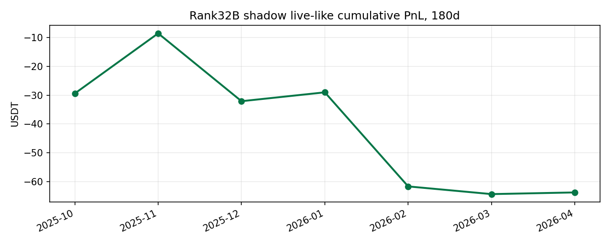
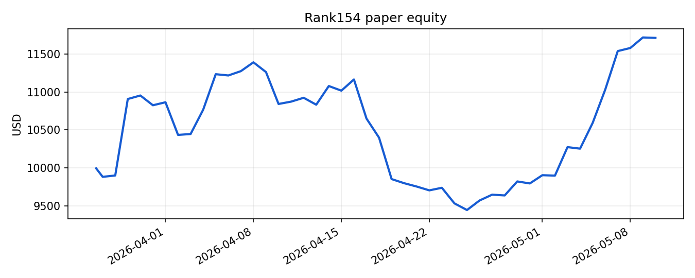
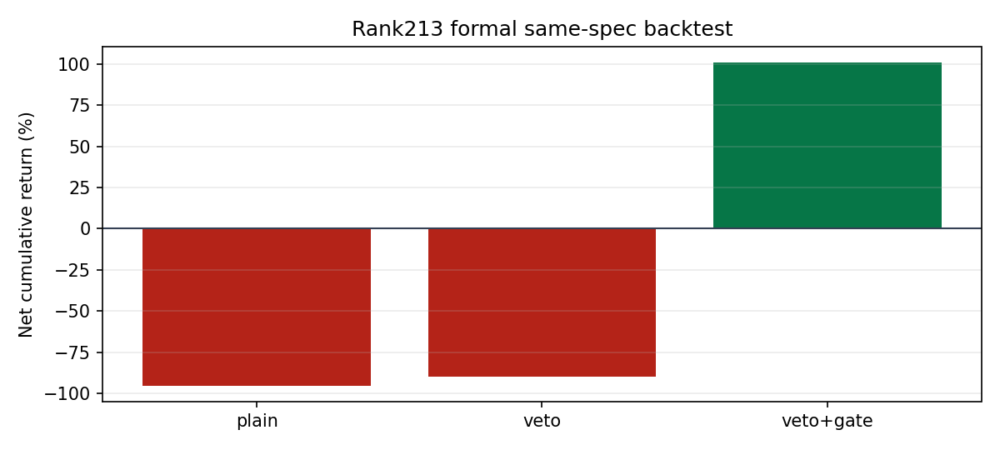
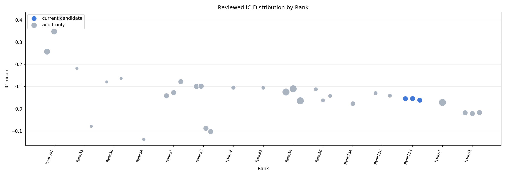

统一入口：把 200+ rank 研究报告、代表策略、因子 IC/IR、负例审计和 live/paper 链路放在同一页。Generated: 2026-05-26 04:56 UTC
这不是单一策略报告，而是一套从研究发现到 paper/live 治理、归档和反证审计的量化研究资产库。阅读时先看当前仍可继续验证的候选，再看已归档案例如何暴露 future/lookahead、选池偏差、成本后失效等问题。
308 个 rank 相关报告页，覆盖 149 个唯一 rank；其中 P3 条目 42 行、P2 条目 57 行。
状态上，live/canary/shadow 相关报告 17 行，paper 报告 33 行；paper/live evidence 矩阵记录 49 条运行证据，含 20 条曲线 artifact。
IC/IR 当前分为两层：审计通过 15 条研究线、33 个因子-horizon 组合；待审计 31 条研究线、464 个候选组合。待审计行只作为排查队列，不作为正式横向排名。
Rank 是候选研究编号；P3/P2 registry 记录进入重点跟踪的研究线，字段包含母题、角色、独特增量、当前状态和下一步。阅读时先看研究从 idea、最小复现、稳定性检查、paper/shadow 到 live/canary 的晋级路径。
IC/IR 只在可形成横截面的 bar-level frame 上计算：需要 timestamp、close、可识别资产，且同一时点至少 3 个资产可比。current signal、status、lane snapshot 或单资产 frame 不强行算 IC，仍保留报告、回测和治理证据。
IC 是同一时间截面上因子值与未来收益的 Spearman rank correlation；IR 是 IC 时间序列的 mean/std。horizon=1/4/16 对多数 15m frame 约等于 15m/1h/4h。
Paper/live 矩阵优先展示收益曲线、live-vs-shadow、formal backtest、status artifact 和回测报告；关键负例也保留，用来解释为什么某些 rank 被下线、归档或只做观察。
Core
这一节优先服务“展示研究能力”而不是“展示当前最该上线什么”。排序逻辑因此改成：谁把因子定义、数据清洗、时间对齐、未来函数排查、IC/Rank IC、分组收益、交易成本、样本外、暴露和最终 memo 做得更完整，谁就更靠前；即使该线最后被归档，也照样前置。
表里用 `Y / P / N` 表示覆盖度：`Y` = 已覆盖，`P` = 部分覆盖或更偏该线的子议题，`N` = 不是这条线的核心展示重点。
| Rank | 状态 | 因子定义 | 数据清洗 | 时间对齐 | 避免未来函数 | IC / Rank IC | 分组收益 | 交易成本 | 样本外 | 行业/风格暴露 | 最终 memo | 为什么前排展示 | 报告 |
|---|---|---|---|---|---|---|---|---|---|---|---|---|---|
| Rank154 | archived / failed release candidate / strong postmortem | Y | Y | Y | Y | Y | Y | Y | Y | Y | Y | 这条线最适合作为“完整做过、最后诚实归档”的样例：定义、日频横截面、IC、成本、postmortem、154b 衍生研究都比较完整。 | open |
| Rank213 | archived / causality audit / canary close-out | Y | Y | Y | Y | P | Y | Y | Y | P | Y | 这条线最大的价值是把选池因果性、frozen30 幸存者偏差、causal rebuild 和 live close-out 串成了一套完整反证过程。 | open |
| Rank32B | archived / future-lookahead audit | Y | P | Y | Y | Y | Y | Y | Y | N | Y | 它是“做到实盘，再被未来函数审计打回去”的完整治理样例，最能体现时间对齐、future audit 和下线机制。 | open |
| Rank151 | active / launch admission / paper runner | Y | P | Y | Y | P | Y | Y | Y | N | Y | 这条线是当前 active 里最完整的一条：source digest、定义修正、band-pass 逻辑、rolling split、launch admission、runner 全都齐。 | open |
| Rank29 | retired live / shadow / negative controls | Y | P | Y | Y | N | Y | Y | Y | N | Y | 如果读者想看 execution、false break、gate、shadow/live debug 和负例控制，Rank29 是最完整的操作型样例之一。 | open |
定位：funding/basis/carry + cross-section stat-arb
状态：archived / failed release candidate / strong postmortem
为什么排前：这条线最适合作为“完整做过、最后诚实归档”的样例：定义、日频横截面、IC、成本、postmortem、154b 衍生研究都比较完整。
memo 读法：从原始策略到 close-out、再到 154b young funding strict backtest，比较像一套完整研究 memo + postmortem 包。
定位：cross-sectional + universe causality audit
状态：archived / causality audit / canary close-out
为什么排前：这条线最大的价值是把选池因果性、frozen30 幸存者偏差、causal rebuild 和 live close-out 串成了一套完整反证过程。
memo 读法：适合作为 universe selection causality 的完整研究 memo：不是结果最好，但研究方法很完整。
定位：trend/momentum/breakout
状态：archived / future-lookahead audit
为什么排前：它是“做到实盘，再被未来函数审计打回去”的完整治理样例，最能体现时间对齐、future audit 和下线机制。
memo 读法：更像 execution + governance memo，不是当前 alpha 成果，但非常适合放在完整工作样例前排。
定位：trend/momentum/breakout
状态：active / launch admission / paper runner
为什么排前：这条线是当前 active 里最完整的一条：source digest、定义修正、band-pass 逻辑、rolling split、launch admission、runner 全都齐。
memo 读法：它不是经典单调 IC 因子，但作为“来源拆解 + 研究翻译 + paper runner”的完整样例已经很成熟。
定位：structure breakout + risk/execution
状态：retired live / shadow / negative controls
为什么排前：如果读者想看 execution、false break、gate、shadow/live debug 和负例控制，Rank29 是最完整的操作型样例之一。
memo 读法：更偏 execution memo 和 negative-control 样例，不靠 IC，而靠 replay/paper/shadow/live 一致性审计。
Core
这里是推荐优先看的当前观察对象，不等于已验证 alpha。筛选只保留有 primary artifact、仍处于 paper/runner/queue/shadow/canary/live 观察链路的行，并显式排除 Rank154、Rank213、Rank32B/32 这类已经归档、存在 future/lookahead、universe causality 或 close-out 风险的研究线。展示顺序上，已经完成审计且有明确 IC/IR 的对象会优先放在最前；其余 runner/live 观察对象放在后面，并写清楚为什么当前还不能正式横向比较。
这一组优先展示已经完成口径审计、并能挂出明确 IC/IR 的观察对象。即使其中某些仍是 audit-only，它们也比纯 runner 状态更适合先被读者横向比较。
cross-sectional
该观察对象能对应到已复核 IC，但页面 hard verdict 不支持 promotion，因此这里只能作为审计对照。
下一步：保留审计透明度，不进入当前候选主榜。
paper rank342 samechain crossdex：围绕横截面排序、相对强弱或多资产分层的选币/组合信号；当前归类为 paper，处于 paper runner 或 paper 报告状态，展示重点看收益曲线、持仓/交易流水和晋级条件。
artifact: rank342_status.csv
这些对象仍保留观察价值，但当前主要证据是 runner/status/快照/交易流水，尚未形成可正式发布的横截面 IC，或还停留在待审计状态。
event/clock/session
当前产物是 daily schedule、recent markouts、closed trades 和 status。它能证明 runner 行为和收益样本，但没有正式 bar-level feature frame，不能发布横截面 IC。
下一步：若后续要比较 IC，应把 symbol-hour sleeve 信号整理成 timestamp-asset 面板，并明确 target_side 到 future return 的映射。
paper rank201 utc clock low switch：围绕事件窗口、交易时钟或 session 条件的条件收益信号；当前归类为 paper，处于 paper runner 或 paper 报告状态，展示重点看收益曲线、持仓/交易流水和晋级条件。
artifact: rank201_status.csv
curve/trades: rank201_closed_trades.csv
event/clock/session
rank200_recent_hourly_frame 只有 BTC 单资产，且数值列实质上只有未来收益 ret_1h；没有可审计的独立因子列，也没有至少 3 个资产的横截面，因此不发布 IC。
下一步：如果保留为单资产时钟策略，应展示 schedule、closed trades 和 hourly markout；若想进入 IC 主榜，需要扩成多资产同口径时钟因子面板。
paper rank200 btc weekday hour sparse short：围绕事件窗口、交易时钟或 session 条件的条件收益信号；当前归类为 paper，处于 paper runner 或 paper 报告状态，展示重点看收益曲线、持仓/交易流水和晋级条件。
artifact: rank200_status.csv
curve/trades: rank200_closed_trades.csv
event/clock/session
rank229_current_signal_frame 记录的是 entry/exit 与 net_bps 的已实现交易样本，而不是同一时点的历史横截面因子值；因此不把它当 IC 口径发布。
下一步：如要做 IC，需要生成 abnormal-day 信号在每个 as-of 时点的历史特征表，并与后续收益做严格时间对齐。
paper rank229 eth abnormal day：围绕事件窗口、交易时钟或 session 条件的条件收益信号；当前归类为 paper，处于 paper runner 或 paper 报告状态，展示重点看收益曲线、持仓/交易流水和晋级条件。
artifact: rank229_status.csv
curve/trades: rank229_closed_trades.csv
structure/retest
现有 snapshot 只记录当下候选路径形态和未来最大涨幅预测，缺少同一时点多资产横截面对齐的历史 factor frame；closed trades 也不能直接替代 IC。
下一步：若要审 IC，需要补历史日内 shape feature panel，并把预测列与真实 future return 在 as-of 口径下对齐。
paper rank187 path shape：围绕结构位、回踩、reclaim、VWAP/Fib/区间行为的形态信号；当前归类为 paper，处于 paper runner 或 paper 报告状态，展示重点看收益曲线、持仓/交易流水和晋级条件。
artifact: rank187_status.csv
curve/trades: rank187_closed_trades.csv
funding/basis/carry
现有产物是 cbETH-ETH pair series、closed trades 和 runner status，核心对象是一对价差，不是同一时点多资产横截面排序；按本页标准不发布横截面 IC。
下一步：若要增加可比统计，应单列 pair spread 的时间序列评估或 markout，不与横截面 IC 主榜混排。
paper rank183 cbeth eth basis：围绕资金费率、basis 或 carry 的相对价值/拥挤度信号；当前归类为 paper，处于 paper runner 或 paper 报告状态，展示重点看收益曲线、持仓/交易流水和晋级条件。
artifact: rank183_status.csv
curve/trades: rank183_closed_trades.csv
event/clock/session
当前是 CME expiry 事件表、cache event windows 和 closed trades。它是事件窗口执行研究，不是 timestamp-asset bar frame，因此不发布横截面 IC。
下一步：保留事件收益、分月表现和回测报告；如要做因子比较，应先构造统一事件特征表和事件后收益 target。
paper rank186 cme expiry：围绕事件窗口、交易时钟或 session 条件的条件收益信号；当前归类为 paper，处于 paper runner 或 paper 报告状态，展示重点看收益曲线、持仓/交易流水和晋级条件。
artifact: rank186_status.csv
curve/trades: rank186_closed_trades.csv
paper pilot portfolio
Manual narrow paper lanes 是多 rank 的组合状态板，行里混合 asset、signal_family 和 open position 状态，不对应单一因子定义，因此不能发布单一 IC。
下一步：它应继续作为 P3 窄组合 pilot 监控板；若要比较 IC，应回到各底层 rank 的独立因子面板逐条审计。
多个 rank 的窄 paper pilot 状态表，展示哪些候选仍在跟踪、哪些有 open position。
artifact: manual_narrow_paper_status.csv
curve/trades: manual_narrow_paper_status.csv
risk/execution
rank32c_pre_live_gate 主要是 runner_status、release decision、live_vs_shadow 和 replay trades，属于执行/治理层证据，不是因子研究 frame。
下一步：继续展示 live gate 和 release audit；不建议强行补 IC，除非后续把其底层 alpha 信号独立拆出并形成 factor frame。
rank32c pre live gate：围绕执行、容量、滑点、风控或 live/paper 差异的治理层证据；当前归类为 live/monitor，已进入 live/monitor 链路，展示重点看实盘状态、告警和 live-vs-shadow 差异。
artifact: runner_status.json
curve/trades: closed_trades.csv
trend/momentum/breakout
当前 artifact 只有 runner/status/state 三类运行证据，没有可复算的 bar-level feature frame 或 IC summary。现阶段适合展示 paper 连续性，不适合发布横截面 IC。
下一步：若后续要发布 IC，需要补出按 timestamp-asset 对齐的 feature frame，并明确主信号列、future return horizon 与成本口径。
paper rank151 breakout bandpass gate：围绕趋势、动量、突破或延续确认的方向性信号；当前归类为 paper，处于 paper runner 或 paper 报告状态，展示重点看收益曲线、持仓/交易流水和晋级条件。
artifact: rank151_paper_status.csv
funding/basis/carry
当前只有 launch checks、status 和 frozen spec，说明研究还在上线前检查阶段，没有历史 factor panel 或 IC artifact。
下一步：保持为 launch-readiness 证据；若进入正式研究比较，再补 funding extreme 的历史特征面板和 future return target。
paper rank368 funding extreme bandfade：围绕资金费率、basis 或 carry 的相对价值/拥挤度信号；当前归类为 paper，处于 paper runner 或 paper 报告状态，展示重点看收益曲线、持仓/交易流水和晋级条件。
artifact: rank368_status.csv
funding/basis/carry
rank370_current_signal_frame 只有当下几档 strike 的 surface mispricing 快照，缺少跨时间、跨标的的历史 realized target；因此不能按 IC 口径发布。
下一步：若要审 IC，需要沉淀连续 surface snapshots，并为每个 snapshot 连接未来价格或成交后 markout 作为 target。
paper rank370 surface mispricing：围绕资金费率、basis 或 carry 的相对价值/拥挤度信号；当前归类为 paper，处于 paper runner 或 paper 报告状态，展示重点看收益曲线、持仓/交易流水和晋级条件。
artifact: rank370_status.csv
这张台账逐条说明 active 观察对象为什么能发布 IC、为什么只能保留为 audit-only，或为什么当前结构上还不能发布横截面 IC。对于没有 IC 的行，这里会写明缺的是 frame、target 还是横截面资产维度。
| 观察对象 | 家族 | IC审计 | 结构判定 | 最佳对应因子 | h | IC | IR | obs | 审计结论 | 下一步 | 报告 |
|---|---|---|---|---|---|---|---|---|---|---|---|
| paper rank342 samechain crossdex | cross-sectional | 仅 audit-only | reviewed but not promotable | best_net_bps | 16.000 | 0.408 | 0.741 | 4799.000 | 该观察对象能对应到已复核 IC，但页面 hard verdict 不支持 promotion，因此这里只能作为审计对照。 | 保留审计透明度，不进入当前候选主榜。 | open |
| paper rank201 utc clock low switch | event/clock/session | 暂无可比 IC | schedule and markout evidence / no factor frame | - | - | - | - | - | 当前产物是 daily schedule、recent markouts、closed trades 和 status。它能证明 runner 行为和收益样本，但没有正式 bar-level feature frame，不能发布横截面 IC。 | 若后续要比较 IC，应把 symbol-hour sleeve 信号整理成 timestamp-asset 面板，并明确 target_side 到 future return 的映射。 | open |
| paper rank200 btc weekday hour sparse short | event/clock/session | 暂无可比 IC | single-asset frame with target only | - | - | - | - | - | rank200_recent_hourly_frame 只有 BTC 单资产，且数值列实质上只有未来收益 ret_1h；没有可审计的独立因子列，也没有至少 3 个资产的横截面，因此不发布 IC。 | 如果保留为单资产时钟策略，应展示 schedule、closed trades 和 hourly markout；若想进入 IC 主榜，需要扩成多资产同口径时钟因子面板。 | open |
| paper rank229 eth abnormal day | event/clock/session | 暂无可比 IC | trade log / not bar-level frame | - | - | - | - | - | rank229_current_signal_frame 记录的是 entry/exit 与 net_bps 的已实现交易样本，而不是同一时点的历史横截面因子值；因此不把它当 IC 口径发布。 | 如要做 IC，需要生成 abnormal-day 信号在每个 as-of 时点的历史特征表，并与后续收益做严格时间对齐。 | open |
| paper rank187 path shape | structure/retest | 暂无可比 IC | snapshot plus trades / no bar-level xs frame | - | - | - | - | - | 现有 snapshot 只记录当下候选路径形态和未来最大涨幅预测，缺少同一时点多资产横截面对齐的历史 factor frame；closed trades 也不能直接替代 IC。 | 若要审 IC，需要补历史日内 shape feature panel，并把预测列与真实 future return 在 as-of 口径下对齐。 | open |
| paper rank183 cbeth eth basis | funding/basis/carry | 暂无可比 IC | single-pair relative value / not cross-sectional | - | - | - | - | - | 现有产物是 cbETH-ETH pair series、closed trades 和 runner status，核心对象是一对价差，不是同一时点多资产横截面排序；按本页标准不发布横截面 IC。 | 若要增加可比统计，应单列 pair spread 的时间序列评估或 markout，不与横截面 IC 主榜混排。 | open |
| paper rank186 cme expiry | event/clock/session | 暂无可比 IC | event-window runner / not factor frame | - | - | - | - | - | 当前是 CME expiry 事件表、cache event windows 和 closed trades。它是事件窗口执行研究，不是 timestamp-asset bar frame，因此不发布横截面 IC。 | 保留事件收益、分月表现和回测报告；如要做因子比较，应先构造统一事件特征表和事件后收益 target。 | open |
| Manual narrow paper lanes | paper pilot portfolio | 暂无可比 IC | portfolio board / mixed multi-rank status | - | - | - | - | - | Manual narrow paper lanes 是多 rank 的组合状态板，行里混合 asset、signal_family 和 open position 状态，不对应单一因子定义，因此不能发布单一 IC。 | 它应继续作为 P3 窄组合 pilot 监控板；若要比较 IC，应回到各底层 rank 的独立因子面板逐条审计。 | open |
| rank32c pre live gate | risk/execution | 暂无可比 IC | execution gate / governance evidence | - | - | - | - | - | rank32c_pre_live_gate 主要是 runner_status、release decision、live_vs_shadow 和 replay trades，属于执行/治理层证据，不是因子研究 frame。 | 继续展示 live gate 和 release audit；不建议强行补 IC，除非后续把其底层 alpha 信号独立拆出并形成 factor frame。 | open |
| paper rank151 breakout bandpass gate | trend/momentum/breakout | 暂无可比 IC | runner status only / no factor frame | - | - | - | - | - | 当前 artifact 只有 runner/status/state 三类运行证据，没有可复算的 bar-level feature frame 或 IC summary。现阶段适合展示 paper 连续性，不适合发布横截面 IC。 | 若后续要发布 IC，需要补出按 timestamp-asset 对齐的 feature frame，并明确主信号列、future return horizon 与成本口径。 | open |
| paper rank368 funding extreme bandfade | funding/basis/carry | 暂无可比 IC | launch-check evidence / no time-series factor panel | - | - | - | - | - | 当前只有 launch checks、status 和 frozen spec，说明研究还在上线前检查阶段，没有历史 factor panel 或 IC artifact。 | 保持为 launch-readiness 证据；若进入正式研究比较，再补 funding extreme 的历史特征面板和 future return target。 | open |
| paper rank370 surface mispricing | funding/basis/carry | 暂无可比 IC | surface snapshot / no realized target history | - | - | - | - | - | rank370_current_signal_frame 只有当下几档 strike 的 surface mispricing 快照，缺少跨时间、跨标的的历史 realized target；因此不能按 IC 口径发布。 | 若要审 IC，需要沉淀连续 surface snapshots，并为每个 snapshot 连接未来价格或成交后 markout 作为 target。 | open |
Core
这一节按“可继续验证候选 → 负例/归档/审计案例”组织。Rank154、Rank213、Rank32B 都不能再被包装成当前正例主线：154 已归档，213 旧口径有选池/幸存者偏差风险且 live canary 已停止，32B 因 future/lookahead audit 下线。
定位：trend/momentum/breakout
状态：paper runner / launch admission
定量定义：EWMAC breakout band-pass gate，把趋势突破限制在特定波段和 admission bar，避免无条件追突破。
证据：paper runner page、launch admission bar、artifact status、对应回测报告。
研究说明：适合作为正在 paper 的中间阶段例子：已经从 clean replication 推到 runner，但仍要等待连续性和成本后表现。
定位：structure breakout + risk/execution
状态：retired live / paper-shadow 对照 / negative control
定量定义：趋势线突破导航器，关注 trigger timeframe、false break、replay-vs-paper-vs-shadow 差异和 gate 条件。
证据：shadow dashboard、monitoring hub、gate live debug、trigger timeframe monthly、narrow paper monitoring board。
研究说明：这是负例/纪律样例：不是所有 rank 都包装成正例，失败或下线同样纳入目录，说明如何识别不可上线或需退场的研究。
定位：funding/basis/carry + cross-section stat-arb
状态：已归档：failed release candidate；154b 仅保留 research lead，不进 paper lane
定量定义：原组合使用 funding、10d momentum、20d high breakout 的日频横截面打分；154b 聚焦 young coin high funding continuation。
证据：RANK154_ARCHIVE_CLOSEOUT、postmortem IC、young funding strict backtest、funding IC summary。
研究说明：不是当前主线成果。它适合说明 funding 因子如何做 postmortem：原策略 long-history gate 失败，combined IC 接近 0；154b price IC 有一点信号，但 after-funding/after-cost 不是净 alpha。
定位：cross-sectional + universe causality audit
状态：旧 frozen30 叙事降级；age90 live canary 已停止归档
定量定义：largecap 横截面 momentum / jump-veto / gate 系列；必须区分 frozen30 运行口径、monthly-volume causal 历史口径和 live audit 口径。
证据：RANK213_EVIDENCE_MAP、monthly-volume causal rebuild、archive close-out、live-vs-backtest checklist。
研究说明：不是当前可包装的正例主线。它适合说明 universe selection causality：旧 frozen30 看起来更强，但 monthly-volume causal 选池后显著变弱；任何展示都必须写清楚它是审计/候选研究，不是已过关 alpha。
定位：trend/momentum/breakout
状态：已因 future/lookahead audit 下线，不能作为当前有效 alpha 排在最前
定量定义：15m 执行层叠加 1h EMA slope floor；历史 IC/回测只作为审计材料保留，不再按当前可上线候选解读。
证据：global live/live-like shadow、live parity universe、180d cumulative PnL 图、live_status 中的 STOPPED 记录。
研究说明：这是研究纪律案例：曾经进入 live，但审计确认 preview_unclosed_15m/lookahead 风险后主动停用。页面保留它，是为了说明下线机制和负例透明度，而不是把它包装成当前主成果。
Core

曾上 global live；当前 live_status 明确记录因 preview_unclosed_15m/lookahead audit 停用，适合展示研究纪律和下线机制。

已由 RANK154_ARCHIVE_CLOSEOUT 收口：旧 paper runner/历史正收益只保留为证据，不代表当前 release candidate。

evidence map 明确：旧 frozen30 结果有选池/幸存者偏差风险；monthly-volume causal 后明显变弱，age90 live canary 已停止归档。
Core
这一节先回答“IC 在这里具体怎么算”，再回答“哪些行可以进入当前候选主榜”。页面把数学定义、策略 hard verdict 和样本纪律拆开，避免把单行好看的数值误读成已经完成的 alpha 结论。
IC 统一按同一 timestamp 的横截面计算：对每个时点，把因子值 factor_t 与未来收益 r(t,t+h) 做 Spearman rank correlation，再在时间维上取均值。它回答的是“同一时点里，分数更高的资产，未来 h 根 bar 表现是否更强/更弱”。
IR 定义为 IC 时间序列的 mean / std。它不是策略 Sharpe，也不等于收益曲线质量；它只衡量横截面排序信号是否稳定。页面因此把 IC/IR 和 paper/live PnL 分开展示，避免把排序能力和交易实现混成一件事。
IC 的正负号必须结合信号语义解释。对于 long-only score，更常见的是正 IC；对于 short signal 或 bearish setup，负 IC 往往才符合预期。因此主榜按 |IR|、|IC| 和样本数排序，但具体解读仍要回到该因子的方向定义。
页面 hard verdict 的优先级高于单行 IC。若该 rank 已被 archive、future/lookahead、universe causality、成本后失效或 evidence-pool 结论否定，那么即使某个 setup 行可复算、甚至 |IR| 很高，也只能进入 audit-only 或 holdout，而不能包装成当前候选。
factor 代表页面上具体哪一层信号或 gate；horizon 是未来几根 bar；obs 是有效横截面样本数；assets 是每次横截面的平均可比资产数量。先确认它是不是页面主信号，再比较数值。
本页把 obs < 100 的行默认视为弱证据。当前 current candidate 中有 0 行低样本，audit-only 中有 4 行低样本；这类行可作为线索，但不足以单独支撑 promotion。

每个点代表一个已审计的因子-horizon 组合；纵轴是 IC mean，横轴按各 rank 的最佳 |IR| / |IC| 排序，颜色区分 current candidate 与 audit-only，点大小表示 IC 样本数。读图时先看一条 rank 的点是否整体稳定地偏离 0，再回到下方表格核对 factor 定义、horizon 和样本纪律。
这里只有仍处于可继续验证链路、且已经完成信号定义/时间对齐/未来函数审计的行，适合做同口径横向比较。读法是先看它是否对应页面主信号，再看 IC、IR 和样本数是否一致支持该叙事。
| 研究线 | 因子 | 预测 horizon(bar) | IC mean | IR = IC mean/std | IC>0 占比 | IC 样本数 | 资产数/均值 | 开始 | 结束 | 审计说明 | 报告 |
|---|---|---|---|---|---|---|---|---|---|---|---|
| Basis/OI / crowded dislocation | basis_extreme_negative | 4.000 | 0.046 | 0.065 | 36.4% | 1904.000 | 3.000 | 2025-11-16 | 2026-03-16 | 已按 Rank112 clean replication 复核：固定 BTC/ETH/SOL 120d 15m、next-bar open、no-overlap、hold 8 bars；该行只表达『极端负 basis 不宜继续追空』的 honest veto 口径，当前可作为 keep_P1 候选比较。 | open |
| Basis/OI / crowded dislocation | basis_extreme_negative | 1.000 | 0.045 | 0.063 | 37.1% | 1905.000 | 3.000 | 2025-11-16 | 2026-03-16 | 已按 Rank112 clean replication 复核：固定 BTC/ETH/SOL 120d 15m、next-bar open、no-overlap、hold 8 bars；该行只表达『极端负 basis 不宜继续追空』的 honest veto 口径，当前可作为 keep_P1 候选比较。 | open |
| Basis/OI / crowded dislocation | basis_extreme_negative | 16.000 | 0.039 | 0.055 | 35.7% | 1904.000 | 3.000 | 2025-11-16 | 2026-03-16 | 已按 Rank112 clean replication 复核：固定 BTC/ETH/SOL 120d 15m、next-bar open、no-overlap、hold 8 bars；该行只表达『极端负 basis 不宜继续追空』的 honest veto 口径，当前可作为 keep_P1 候选比较。 | open |
这些行的公式和数值已经独立复算通过，但所在 rank 的页面 hard verdict 仍不支持升格。它们保留在这里，是为了展示“为什么不能只看高 IR/高 IC 就下结论”。
| 研究线 | 因子 | 预测 horizon(bar) | IC mean | IR = IC mean/std | IC>0 占比 | IC 样本数 | 资产数/均值 | 开始 | 结束 | 审计说明 | 报告 |
|---|---|---|---|---|---|---|---|---|---|---|---|
| Rank342 same-chain cross-DEX lane pocket close | best_net_bps | 16.000 | 0.408 | 0.741 | 74.3% | 4799.000 | 4.000 | 2026-04-06 | 2026-05-26 | 已按 Rank342 same-chain cross-DEX lane snapshots 独立复核：先把每次 15m bucket 的 4 条预设 lane 对齐成横截面，以当前 `best_net_bps` 作为因子，再以同一 lane 未来 h 个 bucket 的 pocket contraction（`best_net_bps_t - best_net_bps_t+h`）作为 target 计算 Spearman IC。该定义与页面里的 `price-gap close` 叙事一致，且复算得到 1/4/16 bucket horizon 下均为正 IC；但 Rank342 页面 hard verdict 已明确是 observe only / 非主研发线，runner 也不是 fill replay，因此这里只保留为 audit-only 的结构观察证据，不进入当前候选主榜。 | open |
| Rank342 same-chain cross-DEX lane pocket close | best_net_bps | 4.000 | 0.348 | 0.617 | 69.8% | 4811.000 | 4.000 | 2026-04-06 | 2026-05-26 | 已按 Rank342 same-chain cross-DEX lane snapshots 独立复核：先把每次 15m bucket 的 4 条预设 lane 对齐成横截面，以当前 `best_net_bps` 作为因子，再以同一 lane 未来 h 个 bucket 的 pocket contraction（`best_net_bps_t - best_net_bps_t+h`）作为 target 计算 Spearman IC。该定义与页面里的 `price-gap close` 叙事一致，且复算得到 1/4/16 bucket horizon 下均为正 IC；但 Rank342 页面 hard verdict 已明确是 observe only / 非主研发线，runner 也不是 fill replay，因此这里只保留为 audit-only 的结构观察证据，不进入当前候选主榜。 | open |
| Rank342 same-chain cross-DEX lane pocket close | best_net_bps | 1.000 | 0.257 | 0.438 | 63.9% | 4814.000 | 4.000 | 2026-04-06 | 2026-05-26 | 已按 Rank342 same-chain cross-DEX lane snapshots 独立复核：先把每次 15m bucket 的 4 条预设 lane 对齐成横截面，以当前 `best_net_bps` 作为因子，再以同一 lane 未来 h 个 bucket 的 pocket contraction（`best_net_bps_t - best_net_bps_t+h`）作为 target 计算 Spearman IC。该定义与页面里的 `price-gap close` 叙事一致，且复算得到 1/4/16 bucket horizon 下均为正 IC；但 Rank342 页面 hard verdict 已明确是 observe only / 非主研发线，runner 也不是 fill replay，因此这里只保留为 audit-only 的结构观察证据，不进入当前候选主榜。 | open |
| scout rank53 close confirmed choch 15m | breakdown_reclaim_short_signal | 4.000 | 0.182 | 0.245 | 49.1% | 57.000 | 3.000 | 2025-11-16 | 2026-03-16 | 已按 Rank53 clean replication 复核：breakdown_reclaim_short_signal 对应 15m close-confirmed CHoCH 研究里的 short archetype 原始触发列，定义为 EMA 走弱 + rolling_low20 breakdown reclaim + volume gate；独立复算一致。需注意它不是页面最终的 liquidity_sweep_veto 执行臂，只能作为 raw setup archetype 的 audit-only IC 参考，而 report hard verdict 仍是 park / evidence pool。 | open |
| scout rank50 chanlun structural reclaim 15m | signal_structural_reclaim_plus_htf | 4.000 | 0.137 | 0.200 | 39.5% | 38.000 | 3.000 | 2025-11-16 | 2026-03-16 | 已按 Rank50 clean replication 复核：signal_structural_reclaim_plus_htf 直接对应页面主变体 structural_reclaim_plus_htf，即 confirmed breakout retest reclaim 再叠加 1h/15m 同向 bias；独立复算一致。但 6bps 下跨资产 mean_total_return 约 -4.63%、false_reclaim 约 72.78%、no-trade 约 87.14%，hard verdict 明确仍是 park / evidence pool，因此只保留为 audit-only 样例。 | open |
| 成交密集区 / POC-LVN acceptance | signed_lvn_signal | 4.000 | -0.137 | -0.190 | 27.7% | 101.000 | 3.000 | 2025-11-16 | 2026-03-16 | 已按 Rank54 clean replication 复核：POC/LVN acceptance 的信号定义和 horizon 可对齐，但页面 hard verdict 为 park / evidence pool，且改善主要来自大幅砍样本；只保留为审计比较行。 | open |
| scout rank50 chanlun structural reclaim 15m | signal_structural_reclaim | 4.000 | 0.121 | 0.180 | 37.2% | 43.000 | 3.000 | 2025-11-16 | 2026-03-16 | 已按 Rank50 clean replication 复核：signal_structural_reclaim 直接对应页面中间变体 structural_reclaim，即 confirmed breakout retest reclaim 不叠加 higher-tf bias 的版本；独立复算一致。但该变体在 6bps 下跨资产 mean_total_return 约 -4.85%、false_reclaim 约 70.42%、no-trade 约 86.47%，同样属于审计后应保留的负例，而不是当前候选。 | open |
| scout rank35 vwap pullback 15m | bias_4h | 16.000 | 0.122 | 0.171 | 42.0% | 2208.000 | 3.000 | 2025-11-16 | 2026-03-16 | 已按 Rank35 clean replication 复核：bias_4h = close_4h > ema20_4h，并以 backward as-of 方式并回 15m frame；独立复算一致。但 Rank35 hard verdict 仍是 park / evidence pool，主变体对 VWAP anchor 敏感且成本后 edge 不够诚实。该行只保留为 audit-only higher-tf bias 对照。 | open |
| scout rank33 nw hl reclaim 15m | bias_short | 4.000 | -0.103 | -0.145 | 28.4% | 2420.000 | 3.000 | 2025-11-16 | 2026-03-16 | 已按 Rank33 clean replication 复核：bias_short 由因果 NW 1h slope floor 的 short 侧 admission flag 构造，确认 extrema 与 lookahead guard 口径可对齐；独立复算一致。但 Rank33 页面 hard verdict 仍是 park / evidence pool，该行只作为 audit-only 的 short-side bias 参考。 | open |
| scout rank33 nw hl reclaim 15m | bias_long | 4.000 | 0.102 | 0.145 | 39.6% | 2596.000 | 3.000 | 2025-11-16 | 2026-03-16 | 已按 Rank33 clean replication 复核：bias_long 由因果 NW 1h slope floor + close_1h >= nw_smooth_1h 构造，并只与已确认 extrema / next-bar open 执行口径并存；独立复算一致。但 Rank33 hard verdict 仍是 park / evidence pool，因此这里只保留为 audit-only 的 higher-tf admission bias 对照。 | open |
| scout rank33 nw hl reclaim 15m | bias_long | 1.000 | 0.101 | 0.143 | 39.6% | 2596.000 | 3.000 | 2025-11-16 | 2026-03-16 | 已按 Rank33 clean replication 复核：bias_long 由因果 NW 1h slope floor + close_1h >= nw_smooth_1h 构造，并只与已确认 extrema / next-bar open 执行口径并存；独立复算一致。但 Rank33 hard verdict 仍是 park / evidence pool，因此这里只保留为 audit-only 的 higher-tf admission bias 对照。 | open |
| 日内时钟 / polarity overlay | polarity | 16.000 | 0.095 | 0.134 | 40.0% | 672.000 | 3.000 | 2025-11-16 | 2026-03-16 | 已按 Rank76 minimal clean replication 复核：小时极性统计本身可重复计算，但整条线在 clean replication 页面已明确是 park / evidence pool；这里只保留可比 IC，供审计和横向参考，不进入当前候选排序。 | open |
| scout rank63 fib0618 hold05 fail 15m | signal_volume_gate_fib50_fail_sma200 | 1.000 | 0.094 | 0.132 | 39.8% | 266.000 | 3.000 | 2025-11-16 | 2026-03-16 | 已按 Rank63 clean replication 复核：signal_volume_gate_fib50_fail_sma200 直接对应页面主臂 +volume_gate+fib50_fail+sma200_filter，定义为 fib618 reclaim 叠加成交量过滤、fib50 fail exit 语义和 SMA200 顺风过滤；独立复算一致。但该主臂在 6bps 下跨资产 mean_total_return 仍约 -7.24%，hard verdict 仍是 park / evidence pool，所以只保留为 audit-only 对照。 | open |
| scout rank34 chip distribution 15m | ema20_slope_1h | 4.000 | 0.090 | 0.126 | 56.1% | 11528.000 | 3.000 | 2025-11-16 | 2026-03-16 | 已按 Rank34 clean replication 复核：ema20_slope_1h 由已闭合 1h EMA20 的 pct_change 构造，在 BTC/ETH/SOL 15m frame 上独立复算一致；但 Rank34 hard verdict 明确是 park / evidence pool，因为主结论对 synthetic shares / turnover 假设过敏。该行只保留为 audit-only 连续状态对照。 | open |
| scout rank33 nw hl reclaim 15m | bias_short | 1.000 | -0.088 | -0.122 | 30.3% | 2420.000 | 3.000 | 2025-11-16 | 2026-03-16 | 已按 Rank33 clean replication 复核：bias_short 由因果 NW 1h slope floor 的 short 侧 admission flag 构造，确认 extrema 与 lookahead guard 口径可对齐；独立复算一致。但 Rank33 页面 hard verdict 仍是 park / evidence pool，该行只作为 audit-only 的 short-side bias 参考。 | open |
| scout rank86 signalpro penetration atr 15m | fib_retest_short_signal | 1.000 | 0.088 | 0.121 | 40.6% | 434.000 | 3.000 | 2025-11-16 | 2026-03-16 | 已按 Rank86 clean replication 复核：fib_retest_short_signal 直接对应页面 setup `fib_retest_short` 的原始触发列，定义为 bearish EMA bias 下跌回 Fib382、且收盘跌回 Fib50 下方并带 volume gate；独立复算一致。该 setup 在 setup_summary 中明显强于 breakout_short / ema_psar_follow_short，但页面 hard verdict 仍只是 `P1 keep / worth one Light Stability Pack check`，且主结论依赖 pen_plus_atr sizing gate，因此这里只保留为 audit-only 的 setup-signal 参考。 | open |
| scout rank53 close confirmed choch 15m | ema_pullback_long_signal | 4.000 | -0.079 | -0.113 | 27.3% | 44.000 | 3.000 | 2025-11-16 | 2026-03-16 | 已按 Rank53 clean replication 复核：ema_pullback_long_signal 对应 15m close-confirmed CHoCH 研究里的 long archetype 原始触发列，定义为 EMA 走强 + breakout continuation + volume gate；独立复算一致。需要注意，这一 raw long setup 的 4-bar horizon IC 为负，而页面里真正略有改善的是带 htf/sweep gate 的后续执行臂，因此该行更适合作为 audited negative setup 对照，不进入当前候选。 | open |
| Funding cross-section / young coin placebo check | funding_price_young_180_365_top30_core | 10.000 | 0.023 | 0.111 | 53.5% | 1418.000 | 27.571 | from source | from source | 来源是 Rank154B 独立日频 IC summary。已复核 sample=young_180_365_top30_core、target=price、horizon=10 的口径，但 Rank154 系列当前只保留为 archive/research lead，不进入当前候选排序。 | open |
| scout rank34 chip distribution 15m | ema20_slope_1h | 1.000 | 0.076 | 0.105 | 54.8% | 11528.000 | 3.000 | 2025-11-16 | 2026-03-16 | 已按 Rank34 clean replication 复核：ema20_slope_1h 由已闭合 1h EMA20 的 pct_change 构造，在 BTC/ETH/SOL 15m frame 上独立复算一致；但 Rank34 hard verdict 明确是 park / evidence pool，因为主结论对 synthetic shares / turnover 假设过敏。该行只保留为 audit-only 连续状态对照。 | open |
| scout rank35 vwap pullback 15m | bias_4h | 4.000 | 0.073 | 0.101 | 39.0% | 2208.000 | 3.000 | 2025-11-16 | 2026-03-16 | 已按 Rank35 clean replication 复核：bias_4h = close_4h > ema20_4h，并以 backward as-of 方式并回 15m frame；独立复算一致。但 Rank35 hard verdict 仍是 park / evidence pool，主变体对 VWAP anchor 敏感且成本后 edge 不够诚实。该行只保留为 audit-only higher-tf bias 对照。 | open |
| scout rank110 psar preflip reclaim 15m | bear_reclaim_signal | 4.000 | 0.070 | 0.099 | 38.0% | 455.000 | 3.000 | 2025-11-16 | 2026-03-16 | 已按 Rank110 clean replication 复核：bear_reclaim_signal 明确对应『前一枚已出现的 bear flip dot 在 N bars 内被当根 reclaim』，并按 next-bar open / no-overlap 口径执行；独立复算一致。但 report hard verdict 是 keep_P1_mixed，且页面明确 short mirror 不够硬，因此只保留为 audit-only 的 mixed-evidence 样例。 | open |
| scout rank110 psar preflip reclaim 15m | bear_reclaim_signal | 16.000 | 0.059 | 0.084 | 37.0% | 454.000 | 3.000 | 2025-11-16 | 2026-03-16 | 已按 Rank110 clean replication 复核：bear_reclaim_signal 明确对应『前一枚已出现的 bear flip dot 在 N bars 内被当根 reclaim』，并按 next-bar open / no-overlap 口径执行；独立复算一致。但 report hard verdict 是 keep_P1_mixed，且页面明确 short mirror 不够硬，因此只保留为 audit-only 的 mixed-evidence 样例。 | open |
| scout rank35 vwap pullback 15m | bias_4h | 1.000 | 0.058 | 0.082 | 37.6% | 2208.000 | 3.000 | 2025-11-16 | 2026-03-16 | 已按 Rank35 clean replication 复核：bias_4h = close_4h > ema20_4h，并以 backward as-of 方式并回 15m frame；独立复算一致。但 Rank35 hard verdict 仍是 park / evidence pool，主变体对 VWAP anchor 敏感且成本后 edge 不够诚实。该行只保留为 audit-only higher-tf bias 对照。 | open |
| scout rank86 signalpro penetration atr 15m | fib_retest_short_signal | 16.000 | 0.058 | 0.080 | 38.1% | 433.000 | 3.000 | 2025-11-16 | 2026-03-16 | 已按 Rank86 clean replication 复核：fib_retest_short_signal 直接对应页面 setup `fib_retest_short` 的原始触发列，定义为 bearish EMA bias 下跌回 Fib382、且收盘跌回 Fib50 下方并带 volume gate；独立复算一致。该 setup 在 setup_summary 中明显强于 breakout_short / ema_psar_follow_short，但页面 hard verdict 仍只是 `P1 keep / worth one Light Stability Pack check`，且主结论依赖 pen_plus_atr sizing gate，因此这里只保留为 audit-only 的 setup-signal 参考。 | open |
| scout rank86 signalpro penetration atr 15m | fib_retest_short_signal | 4.000 | 0.038 | 0.054 | 35.3% | 434.000 | 3.000 | 2025-11-16 | 2026-03-16 | 已按 Rank86 clean replication 复核：fib_retest_short_signal 直接对应页面 setup `fib_retest_short` 的原始触发列，定义为 bearish EMA bias 下跌回 Fib382、且收盘跌回 Fib50 下方并带 volume gate；独立复算一致。该 setup 在 setup_summary 中明显强于 breakout_short / ema_psar_follow_short，但页面 hard verdict 仍只是 `P1 keep / worth one Light Stability Pack check`，且主结论依赖 pen_plus_atr sizing gate，因此这里只保留为 audit-only 的 setup-signal 参考。 | open |
| scout rank34 chip distribution 15m | ema20_slope_1h | 16.000 | 0.036 | 0.050 | 52.1% | 11524.000 | 3.000 | 2025-11-16 | 2026-03-16 | 已按 Rank34 clean replication 复核：ema20_slope_1h 由已闭合 1h EMA20 的 pct_change 构造，在 BTC/ETH/SOL 15m frame 上独立复算一致；但 Rank34 hard verdict 明确是 park / evidence pool，因为主结论对 synthetic shares / turnover 假设过敏。该行只保留为 audit-only 连续状态对照。 | open |
| RSRS / right-skew state | rsrs_right_skew | 16.000 | 0.029 | 0.041 | 51.5% | 11378.000 | 3.000 | 2025-11-16 | 2026-03-16 | 已按 Rank97 clean replication 复核：RSRS right-skew 连续状态列可形成稳定横截面 IC，但整条 overlay 研究 hard verdict 仍是 park；该行只作为非主线审计样例展示。 | open |
| scout rank51 vwap trend defense 15m | signal_touch_reclaim_plus_breadth | 4.000 | -0.021 | -0.030 | 32.6% | 2188.000 | 3.000 | 2025-11-16 | 2026-03-16 | 已按 Rank51 clean replication 复核：signal_touch_reclaim_plus_breadth 直接对应页面主变体 `touch_reclaim_plus_breadth`，定义为 session VWAP touch + reclaim 再叠加 breadth gate；独立复算一致。审计结果显示该主变体在 1/4/16 bar horizon 下的横截面 IC 都为负，且 6bps 下跨资产 mean_total_return 约 -43.79%，因此它适合作为 audited negative example 展示，而不是当前候选。 | open |
| scout rank51 vwap trend defense 15m | signal_touch_reclaim_plus_breadth | 1.000 | -0.018 | -0.025 | 33.1% | 2189.000 | 3.000 | 2025-11-16 | 2026-03-16 | 已按 Rank51 clean replication 复核：signal_touch_reclaim_plus_breadth 直接对应页面主变体 `touch_reclaim_plus_breadth`，定义为 session VWAP touch + reclaim 再叠加 breadth gate；独立复算一致。审计结果显示该主变体在 1/4/16 bar horizon 下的横截面 IC 都为负，且 6bps 下跨资产 mean_total_return 约 -43.79%，因此它适合作为 audited negative example 展示，而不是当前候选。 | open |
| scout rank51 vwap trend defense 15m | signal_touch_reclaim_plus_breadth | 16.000 | -0.017 | -0.024 | 33.6% | 2183.000 | 3.000 | 2025-11-16 | 2026-03-16 | 已按 Rank51 clean replication 复核：signal_touch_reclaim_plus_breadth 直接对应页面主变体 `touch_reclaim_plus_breadth`，定义为 session VWAP touch + reclaim 再叠加 breadth gate；独立复算一致。审计结果显示该主变体在 1/4/16 bar horizon 下的横截面 IC 都为负，且 6bps 下跨资产 mean_total_return 约 -43.79%，因此它适合作为 audited negative example 展示，而不是当前候选。 | open |
台账列出每条 reviewed 行的展示角色和复核结论，方便追踪哪些已经进入主榜，哪些只允许作为 audit-only 证据。
| 研究线 | 因子 | 预测 horizon(bar) | 展示角色 | IC 样本数 | 复核来源 | 审计结论 | 报告 |
|---|---|---|---|---|---|---|---|
| Funding cross-section / young coin placebo check | funding_price_young_180_365_top30_core | 10.000 | audit_only | 1418.000 | rank154b_funding_ic_summary.csv | 来源是 Rank154B 独立日频 IC summary。已复核 sample=young_180_365_top30_core、target=price、horizon=10 的口径，但 Rank154 系列当前只保留为 archive/research lead，不进入当前候选排序。 | open |
| RSRS / right-skew state | rsrs_right_skew | 16.000 | audit_only | 11378.000 | reports/artifacts/scout_rank97_rsrs_right_skew_15m/*_frame.csv | 已按 Rank97 clean replication 复核：RSRS right-skew 连续状态列可形成稳定横截面 IC，但整条 overlay 研究 hard verdict 仍是 park；该行只作为非主线审计样例展示。 | open |
| Rank342 same-chain cross-DEX lane pocket close | best_net_bps | 1.000 | audit_only | 4814.000 | rank342_gap_close_ic_summary.csv | 已按 Rank342 same-chain cross-DEX lane snapshots 独立复核：先把每次 15m bucket 的 4 条预设 lane 对齐成横截面，以当前 `best_net_bps` 作为因子，再以同一 lane 未来 h 个 bucket 的 pocket contraction（`best_net_bps_t - best_net_bps_t+h`）作为 target 计算 Spearman IC。该定义与页面里的 `price-gap close` 叙事一致，且复算得到 1/4/16 bucket horizon 下均为正 IC；但 Rank342 页面 hard verdict 已明确是 observe only / 非主研发线，runner 也不是 fill replay，因此这里只保留为 audit-only 的结构观察证据，不进入当前候选主榜。 | open |
| Rank342 same-chain cross-DEX lane pocket close | best_net_bps | 4.000 | audit_only | 4811.000 | rank342_gap_close_ic_summary.csv | 已按 Rank342 same-chain cross-DEX lane snapshots 独立复核：先把每次 15m bucket 的 4 条预设 lane 对齐成横截面，以当前 `best_net_bps` 作为因子，再以同一 lane 未来 h 个 bucket 的 pocket contraction（`best_net_bps_t - best_net_bps_t+h`）作为 target 计算 Spearman IC。该定义与页面里的 `price-gap close` 叙事一致，且复算得到 1/4/16 bucket horizon 下均为正 IC；但 Rank342 页面 hard verdict 已明确是 observe only / 非主研发线，runner 也不是 fill replay，因此这里只保留为 audit-only 的结构观察证据，不进入当前候选主榜。 | open |
| Rank342 same-chain cross-DEX lane pocket close | best_net_bps | 16.000 | audit_only | 4799.000 | rank342_gap_close_ic_summary.csv | 已按 Rank342 same-chain cross-DEX lane snapshots 独立复核：先把每次 15m bucket 的 4 条预设 lane 对齐成横截面，以当前 `best_net_bps` 作为因子，再以同一 lane 未来 h 个 bucket 的 pocket contraction（`best_net_bps_t - best_net_bps_t+h`）作为 target 计算 Spearman IC。该定义与页面里的 `price-gap close` 叙事一致，且复算得到 1/4/16 bucket horizon 下均为正 IC；但 Rank342 页面 hard verdict 已明确是 observe only / 非主研发线，runner 也不是 fill replay，因此这里只保留为 audit-only 的结构观察证据，不进入当前候选主榜。 | open |
| scout rank110 psar preflip reclaim 15m | bear_reclaim_signal | 4.000 | audit_only | 455.000 | reports/artifacts/scout_rank110_psar_preflip_reclaim_15m/*.csv | 已按 Rank110 clean replication 复核：bear_reclaim_signal 明确对应『前一枚已出现的 bear flip dot 在 N bars 内被当根 reclaim』，并按 next-bar open / no-overlap 口径执行；独立复算一致。但 report hard verdict 是 keep_P1_mixed，且页面明确 short mirror 不够硬，因此只保留为 audit-only 的 mixed-evidence 样例。 | open |
| scout rank110 psar preflip reclaim 15m | bear_reclaim_signal | 16.000 | audit_only | 454.000 | reports/artifacts/scout_rank110_psar_preflip_reclaim_15m/*.csv | 已按 Rank110 clean replication 复核：bear_reclaim_signal 明确对应『前一枚已出现的 bear flip dot 在 N bars 内被当根 reclaim』，并按 next-bar open / no-overlap 口径执行；独立复算一致。但 report hard verdict 是 keep_P1_mixed，且页面明确 short mirror 不够硬，因此只保留为 audit-only 的 mixed-evidence 样例。 | open |
| scout rank33 nw hl reclaim 15m | bias_long | 1.000 | audit_only | 2596.000 | reports/artifacts/scout_rank33_nw_hl_reclaim_15m/*.csv | 已按 Rank33 clean replication 复核：bias_long 由因果 NW 1h slope floor + close_1h >= nw_smooth_1h 构造，并只与已确认 extrema / next-bar open 执行口径并存；独立复算一致。但 Rank33 hard verdict 仍是 park / evidence pool，因此这里只保留为 audit-only 的 higher-tf admission bias 对照。 | open |
| scout rank33 nw hl reclaim 15m | bias_long | 4.000 | audit_only | 2596.000 | reports/artifacts/scout_rank33_nw_hl_reclaim_15m/*.csv | 已按 Rank33 clean replication 复核：bias_long 由因果 NW 1h slope floor + close_1h >= nw_smooth_1h 构造，并只与已确认 extrema / next-bar open 执行口径并存；独立复算一致。但 Rank33 hard verdict 仍是 park / evidence pool，因此这里只保留为 audit-only 的 higher-tf admission bias 对照。 | open |
| scout rank33 nw hl reclaim 15m | bias_short | 1.000 | audit_only | 2420.000 | reports/artifacts/scout_rank33_nw_hl_reclaim_15m/*.csv | 已按 Rank33 clean replication 复核：bias_short 由因果 NW 1h slope floor 的 short 侧 admission flag 构造，确认 extrema 与 lookahead guard 口径可对齐；独立复算一致。但 Rank33 页面 hard verdict 仍是 park / evidence pool，该行只作为 audit-only 的 short-side bias 参考。 | open |
| scout rank33 nw hl reclaim 15m | bias_short | 4.000 | audit_only | 2420.000 | reports/artifacts/scout_rank33_nw_hl_reclaim_15m/*.csv | 已按 Rank33 clean replication 复核：bias_short 由因果 NW 1h slope floor 的 short 侧 admission flag 构造，确认 extrema 与 lookahead guard 口径可对齐；独立复算一致。但 Rank33 页面 hard verdict 仍是 park / evidence pool，该行只作为 audit-only 的 short-side bias 参考。 | open |
| scout rank34 chip distribution 15m | ema20_slope_1h | 1.000 | audit_only | 11528.000 | reports/artifacts/scout_rank34_chip_distribution_15m/*.csv | 已按 Rank34 clean replication 复核：ema20_slope_1h 由已闭合 1h EMA20 的 pct_change 构造，在 BTC/ETH/SOL 15m frame 上独立复算一致；但 Rank34 hard verdict 明确是 park / evidence pool，因为主结论对 synthetic shares / turnover 假设过敏。该行只保留为 audit-only 连续状态对照。 | open |
| scout rank34 chip distribution 15m | ema20_slope_1h | 4.000 | audit_only | 11528.000 | reports/artifacts/scout_rank34_chip_distribution_15m/*.csv | 已按 Rank34 clean replication 复核：ema20_slope_1h 由已闭合 1h EMA20 的 pct_change 构造，在 BTC/ETH/SOL 15m frame 上独立复算一致；但 Rank34 hard verdict 明确是 park / evidence pool，因为主结论对 synthetic shares / turnover 假设过敏。该行只保留为 audit-only 连续状态对照。 | open |
| scout rank34 chip distribution 15m | ema20_slope_1h | 16.000 | audit_only | 11524.000 | reports/artifacts/scout_rank34_chip_distribution_15m/*.csv | 已按 Rank34 clean replication 复核：ema20_slope_1h 由已闭合 1h EMA20 的 pct_change 构造，在 BTC/ETH/SOL 15m frame 上独立复算一致；但 Rank34 hard verdict 明确是 park / evidence pool，因为主结论对 synthetic shares / turnover 假设过敏。该行只保留为 audit-only 连续状态对照。 | open |
| scout rank35 vwap pullback 15m | bias_4h | 1.000 | audit_only | 2208.000 | reports/artifacts/scout_rank35_vwap_pullback_15m/*.csv | 已按 Rank35 clean replication 复核：bias_4h = close_4h > ema20_4h，并以 backward as-of 方式并回 15m frame；独立复算一致。但 Rank35 hard verdict 仍是 park / evidence pool，主变体对 VWAP anchor 敏感且成本后 edge 不够诚实。该行只保留为 audit-only higher-tf bias 对照。 | open |
| scout rank35 vwap pullback 15m | bias_4h | 4.000 | audit_only | 2208.000 | reports/artifacts/scout_rank35_vwap_pullback_15m/*.csv | 已按 Rank35 clean replication 复核：bias_4h = close_4h > ema20_4h，并以 backward as-of 方式并回 15m frame；独立复算一致。但 Rank35 hard verdict 仍是 park / evidence pool，主变体对 VWAP anchor 敏感且成本后 edge 不够诚实。该行只保留为 audit-only higher-tf bias 对照。 | open |
| scout rank35 vwap pullback 15m | bias_4h | 16.000 | audit_only | 2208.000 | reports/artifacts/scout_rank35_vwap_pullback_15m/*.csv | 已按 Rank35 clean replication 复核：bias_4h = close_4h > ema20_4h，并以 backward as-of 方式并回 15m frame；独立复算一致。但 Rank35 hard verdict 仍是 park / evidence pool，主变体对 VWAP anchor 敏感且成本后 edge 不够诚实。该行只保留为 audit-only higher-tf bias 对照。 | open |
| scout rank50 chanlun structural reclaim 15m | signal_structural_reclaim | 4.000 | audit_only | 43.000 | reports/artifacts/scout_rank50_chanlun_structural_reclaim_15m/*.csv | 已按 Rank50 clean replication 复核：signal_structural_reclaim 直接对应页面中间变体 structural_reclaim，即 confirmed breakout retest reclaim 不叠加 higher-tf bias 的版本；独立复算一致。但该变体在 6bps 下跨资产 mean_total_return 约 -4.85%、false_reclaim 约 70.42%、no-trade 约 86.47%，同样属于审计后应保留的负例，而不是当前候选。 | open |
| scout rank50 chanlun structural reclaim 15m | signal_structural_reclaim_plus_htf | 4.000 | audit_only | 38.000 | reports/artifacts/scout_rank50_chanlun_structural_reclaim_15m/*.csv | 已按 Rank50 clean replication 复核：signal_structural_reclaim_plus_htf 直接对应页面主变体 structural_reclaim_plus_htf，即 confirmed breakout retest reclaim 再叠加 1h/15m 同向 bias；独立复算一致。但 6bps 下跨资产 mean_total_return 约 -4.63%、false_reclaim 约 72.78%、no-trade 约 87.14%，hard verdict 明确仍是 park / evidence pool，因此只保留为 audit-only 样例。 | open |
| scout rank51 vwap trend defense 15m | signal_touch_reclaim_plus_breadth | 1.000 | audit_only | 2189.000 | reports/artifacts/scout_rank51_vwap_trend_defense_15m/*.csv | 已按 Rank51 clean replication 复核：signal_touch_reclaim_plus_breadth 直接对应页面主变体 `touch_reclaim_plus_breadth`，定义为 session VWAP touch + reclaim 再叠加 breadth gate；独立复算一致。审计结果显示该主变体在 1/4/16 bar horizon 下的横截面 IC 都为负，且 6bps 下跨资产 mean_total_return 约 -43.79%，因此它适合作为 audited negative example 展示，而不是当前候选。 | open |
| scout rank51 vwap trend defense 15m | signal_touch_reclaim_plus_breadth | 4.000 | audit_only | 2188.000 | reports/artifacts/scout_rank51_vwap_trend_defense_15m/*.csv | 已按 Rank51 clean replication 复核：signal_touch_reclaim_plus_breadth 直接对应页面主变体 `touch_reclaim_plus_breadth`，定义为 session VWAP touch + reclaim 再叠加 breadth gate；独立复算一致。审计结果显示该主变体在 1/4/16 bar horizon 下的横截面 IC 都为负，且 6bps 下跨资产 mean_total_return 约 -43.79%，因此它适合作为 audited negative example 展示，而不是当前候选。 | open |
| scout rank51 vwap trend defense 15m | signal_touch_reclaim_plus_breadth | 16.000 | audit_only | 2183.000 | reports/artifacts/scout_rank51_vwap_trend_defense_15m/*.csv | 已按 Rank51 clean replication 复核：signal_touch_reclaim_plus_breadth 直接对应页面主变体 `touch_reclaim_plus_breadth`，定义为 session VWAP touch + reclaim 再叠加 breadth gate；独立复算一致。审计结果显示该主变体在 1/4/16 bar horizon 下的横截面 IC 都为负，且 6bps 下跨资产 mean_total_return 约 -43.79%，因此它适合作为 audited negative example 展示，而不是当前候选。 | open |
| scout rank53 close confirmed choch 15m | breakdown_reclaim_short_signal | 4.000 | audit_only | 57.000 | reports/artifacts/scout_rank53_close_confirmed_choch_15m/*.csv | 已按 Rank53 clean replication 复核：breakdown_reclaim_short_signal 对应 15m close-confirmed CHoCH 研究里的 short archetype 原始触发列，定义为 EMA 走弱 + rolling_low20 breakdown reclaim + volume gate；独立复算一致。需注意它不是页面最终的 liquidity_sweep_veto 执行臂，只能作为 raw setup archetype 的 audit-only IC 参考，而 report hard verdict 仍是 park / evidence pool。 | open |
| scout rank53 close confirmed choch 15m | ema_pullback_long_signal | 4.000 | audit_only | 44.000 | reports/artifacts/scout_rank53_close_confirmed_choch_15m/*.csv | 已按 Rank53 clean replication 复核：ema_pullback_long_signal 对应 15m close-confirmed CHoCH 研究里的 long archetype 原始触发列，定义为 EMA 走强 + breakout continuation + volume gate；独立复算一致。需要注意，这一 raw long setup 的 4-bar horizon IC 为负，而页面里真正略有改善的是带 htf/sweep gate 的后续执行臂，因此该行更适合作为 audited negative setup 对照，不进入当前候选。 | open |
| scout rank63 fib0618 hold05 fail 15m | signal_volume_gate_fib50_fail_sma200 | 1.000 | audit_only | 266.000 | reports/artifacts/scout_rank63_fib0618_hold05_fail_15m/*.csv | 已按 Rank63 clean replication 复核：signal_volume_gate_fib50_fail_sma200 直接对应页面主臂 +volume_gate+fib50_fail+sma200_filter，定义为 fib618 reclaim 叠加成交量过滤、fib50 fail exit 语义和 SMA200 顺风过滤；独立复算一致。但该主臂在 6bps 下跨资产 mean_total_return 仍约 -7.24%，hard verdict 仍是 park / evidence pool，所以只保留为 audit-only 对照。 | open |
| scout rank86 signalpro penetration atr 15m | fib_retest_short_signal | 1.000 | audit_only | 434.000 | reports/artifacts/scout_rank86_signalpro_penetration_atr_15m/*.csv | 已按 Rank86 clean replication 复核：fib_retest_short_signal 直接对应页面 setup `fib_retest_short` 的原始触发列，定义为 bearish EMA bias 下跌回 Fib382、且收盘跌回 Fib50 下方并带 volume gate；独立复算一致。该 setup 在 setup_summary 中明显强于 breakout_short / ema_psar_follow_short，但页面 hard verdict 仍只是 `P1 keep / worth one Light Stability Pack check`，且主结论依赖 pen_plus_atr sizing gate，因此这里只保留为 audit-only 的 setup-signal 参考。 | open |
| scout rank86 signalpro penetration atr 15m | fib_retest_short_signal | 4.000 | audit_only | 434.000 | reports/artifacts/scout_rank86_signalpro_penetration_atr_15m/*.csv | 已按 Rank86 clean replication 复核：fib_retest_short_signal 直接对应页面 setup `fib_retest_short` 的原始触发列，定义为 bearish EMA bias 下跌回 Fib382、且收盘跌回 Fib50 下方并带 volume gate；独立复算一致。该 setup 在 setup_summary 中明显强于 breakout_short / ema_psar_follow_short，但页面 hard verdict 仍只是 `P1 keep / worth one Light Stability Pack check`，且主结论依赖 pen_plus_atr sizing gate，因此这里只保留为 audit-only 的 setup-signal 参考。 | open |
| scout rank86 signalpro penetration atr 15m | fib_retest_short_signal | 16.000 | audit_only | 433.000 | reports/artifacts/scout_rank86_signalpro_penetration_atr_15m/*.csv | 已按 Rank86 clean replication 复核：fib_retest_short_signal 直接对应页面 setup `fib_retest_short` 的原始触发列，定义为 bearish EMA bias 下跌回 Fib382、且收盘跌回 Fib50 下方并带 volume gate；独立复算一致。该 setup 在 setup_summary 中明显强于 breakout_short / ema_psar_follow_short，但页面 hard verdict 仍只是 `P1 keep / worth one Light Stability Pack check`，且主结论依赖 pen_plus_atr sizing gate，因此这里只保留为 audit-only 的 setup-signal 参考。 | open |
| 成交密集区 / POC-LVN acceptance | signed_lvn_signal | 4.000 | audit_only | 101.000 | reports/artifacts/scout_rank54_lvn_poc_acceptance_15m/*_frame.csv | 已按 Rank54 clean replication 复核：POC/LVN acceptance 的信号定义和 horizon 可对齐，但页面 hard verdict 为 park / evidence pool，且改善主要来自大幅砍样本；只保留为审计比较行。 | open |
| 日内时钟 / polarity overlay | polarity | 16.000 | audit_only | 672.000 | reports/artifacts/scout_rank76_intraday_clock_polarity_15m/*_feature_frame.csv | 已按 Rank76 minimal clean replication 复核：小时极性统计本身可重复计算，但整条线在 clean replication 页面已明确是 park / evidence pool；这里只保留可比 IC，供审计和横向参考，不进入当前候选排序。 | open |
| Basis/OI / crowded dislocation | basis_extreme_negative | 1.000 | current_candidate | 1905.000 | reports/artifacts/scout_rank112_basis_dislocation_short_veto_15m/*_frame.csv | 已按 Rank112 clean replication 复核：固定 BTC/ETH/SOL 120d 15m、next-bar open、no-overlap、hold 8 bars；该行只表达『极端负 basis 不宜继续追空』的 honest veto 口径，当前可作为 keep_P1 候选比较。 | open |
| Basis/OI / crowded dislocation | basis_extreme_negative | 4.000 | current_candidate | 1904.000 | reports/artifacts/scout_rank112_basis_dislocation_short_veto_15m/*_frame.csv | 已按 Rank112 clean replication 复核：固定 BTC/ETH/SOL 120d 15m、next-bar open、no-overlap、hold 8 bars；该行只表达『极端负 basis 不宜继续追空』的 honest veto 口径，当前可作为 keep_P1 候选比较。 | open |
| Basis/OI / crowded dislocation | basis_extreme_negative | 16.000 | current_candidate | 1904.000 | reports/artifacts/scout_rank112_basis_dislocation_short_veto_15m/*_frame.csv | 已按 Rank112 clean replication 复核：固定 BTC/ETH/SOL 120d 15m、next-bar open、no-overlap、hold 8 bars；该行只表达『极端负 basis 不宜继续追空』的 honest veto 口径，当前可作为 keep_P1 候选比较。 | open |
按 |IR|、|IC| 和样本数排序，但先按 rank 和策略家族去重，并把已归档、future/lookahead 或核心 causality 风险案例移出当前候选榜单。
同一 rank 只保留 |IR| 最高的一行，且排除已归档、已确认 future/lookahead 或存在核心 causality 风险的线，避免把不可用研究线误当成当前候选。
rank112 · funding/basis/carry
把 basis 和 OI 的异常状态作为 crowded move 的 veto/反身性证据，而不是裸价格突破。
同一策略家族只保留一行，用来快速检查不同 alpha 母题是否都有可比证据。
rank112 · funding/basis/carry
把 basis 和 OI 的异常状态作为 crowded move 的 veto/反身性证据，而不是裸价格突破。
Rank32/32B、Rank154、Rank213 等已被 future/lookahead、归档 close-out、universe causality 或 live-canary 失败降级；保留在这里是为了透明展示为什么不能继续当作当前可用 alpha。
rank342 · mean-reversion/stat-arb · P3
已归档、存在口径/causality 风险或已被 close-out 降级；历史 IC/回测只作为审计与治理证据，不作为当前候选 alpha。
rank53 · structure/retest
已归档、存在口径/causality 风险或已被 close-out 降级；历史 IC/回测只作为审计与治理证据，不作为当前候选 alpha。
rank50 · structure/retest
已归档、存在口径/causality 风险或已被 close-out 降级；历史 IC/回测只作为审计与治理证据，不作为当前候选 alpha。
Core
这一节把已经上实盘、曾经上实盘后下线、仍在 paper/shadow 的因子放在一起；可以直接从状态跳到回测报告、收益曲线和主要 artifact。
| 阶段 | 行数 | 有 primary artifact | 有曲线/流水 | 已记录 closed trades |
|---|---|---|---|---|
| 当前可继续验证 | 28.000 | 28.000 | 8.000 | 3386.000 |
| 执行观察 / live-shadow | 1.000 | 1.000 | 0.000 | 0.000 |
| 归档/审计/反证 | 20.000 | 20.000 | 12.000 | 386.000 |
共 28 条；优先看有曲线、交易流水和 primary artifact 的行。
共 20 条；优先看有曲线、交易流水和 primary artifact 的行。
| 因子/策略 | 状态 | 类别 | 报告 | 收益/回测图 | lifetime return | drawdown | closed trades | live pnl | formal cum% | formal maxDD% | 主要 artifact | 展示要点 |
|---|---|---|---|---|---|---|---|---|---|---|---|---|
| Rank32B global live | live_disabled_after_bias_audit | trend / continuation | open | rank32b_shadow_180d_cumpnl.png | - | - | 17.000 | -1.649 | - | - | live_vs_shadow_summary.json | 曾上 global live；当前 live_status 明确记录因 preview_unclosed_15m/lookahead audit 停用，适合展示研究纪律和下线机制。 |
| Rank154 crypto stat-arb | archived_failed_release_candidate | funding / cross-section | open | rank154_paper_equity.png | 17.1% | -0.0% | - | - | - | - | rank154_paper_status.csv | 已由 RANK154_ARCHIVE_CLOSEOUT 收口：旧 paper runner/历史正收益只保留为证据，不代表当前 release candidate。 |
| Rank213 largecap xs jump veto | causality_audit_archived_canary | cross-sectional / jump-veto | open | rank213_threeway_backtest.png | - | - | - | - | 100.725 | -32.005 | rank213_formal_threeway_backtest_summary.json | evidence map 明确：旧 frozen30 结果有选池/幸存者偏差风险；monthly-volume causal 后明显变弱，age90 live canary 已停止归档。 |
| Manual narrow paper lanes | P3_narrow_paper_pilot | paper pilot portfolio | open | - | - | - | - | - | - | - | manual_narrow_paper_status.csv | 多个 rank 的窄 paper pilot 状态表，展示哪些候选仍在跟踪、哪些有 open position。 |
| Rank29 trendline navigator | paper/shadow plus negative controls | structure breakout | open | - | - | - | - | - | - | - | overall_summary.csv | 保留 long-window、no-overlap honesty、monitoring board，用来说明并非所有 rank 都被包装成正例。 |
| paper rank151 breakout bandpass gate | running_autonomous_paper_digest_seed | trend/momentum/breakout | open | - | - | - | 1033.000 | - | - | - | rank151_paper_status.csv | paper rank151 breakout bandpass gate：围绕趋势、动量、突破或延续确认的方向性信号；当前归类为 paper，处于 paper runner 或 paper 报告状态，展示重点看收益曲线、持仓/交易流水和晋级条件。 |
| paper rank154 crypto stat arb queue seed | P3_paper_launch_queue | funding/basis/carry | open | - | - | - | - | - | - | - | rank154_queue_status.csv | paper rank154 crypto stat arb queue seed：围绕资金费率、basis 或 carry 的相对价值/拥挤度信号；当前归类为 paper，处于 paper runner 或 paper 报告状态，展示重点看收益曲线、持仓/交易流水和晋级条件。 |
| paper rank183 cbeth eth basis | paper_runner_live | funding/basis/carry | open | - | - | - | 26.000 | - | - | - | rank183_status.csv | paper rank183 cbeth eth basis：围绕资金费率、basis 或 carry 的相对价值/拥挤度信号；当前归类为 paper，处于 paper runner 或 paper 报告状态，展示重点看收益曲线、持仓/交易流水和晋级条件。 |
| paper rank186 cme expiry | paper_runner_live | event/clock/session | open | - | - | - | 16.000 | - | - | - | rank186_status.csv | paper rank186 cme expiry：围绕事件窗口、交易时钟或 session 条件的条件收益信号；当前归类为 paper，处于 paper runner 或 paper 报告状态，展示重点看收益曲线、持仓/交易流水和晋级条件。 |
| paper rank187 path shape | paper_runner_live | structure/retest | open | - | - | - | 39.000 | - | - | - | rank187_status.csv | paper rank187 path shape：围绕结构位、回踩、reclaim、VWAP/Fib/区间行为的形态信号；当前归类为 paper，处于 paper runner 或 paper 报告状态，展示重点看收益曲线、持仓/交易流水和晋级条件。 |
| paper rank200 btc weekday hour sparse short | paper_runner_live | event/clock/session | open | - | - | - | 278.000 | - | - | - | rank200_status.csv | paper rank200 btc weekday hour sparse short：围绕事件窗口、交易时钟或 session 条件的条件收益信号；当前归类为 paper，处于 paper runner 或 paper 报告状态，展示重点看收益曲线、持仓/交易流水和晋级条件。 |
| paper rank201 utc clock low switch | paper_runner_live | event/clock/session | open | - | - | - | 1904.000 | - | - | - | rank201_status.csv | paper rank201 utc clock low switch：围绕事件窗口、交易时钟或 session 条件的条件收益信号；当前归类为 paper，处于 paper runner 或 paper 报告状态，展示重点看收益曲线、持仓/交易流水和晋级条件。 |
| paper rank213 age90 live | ok | risk/execution | open | - | - | - | - | - | - | - | rank213_age90_shadow_status.json | paper rank213 age90 live：围绕执行、容量、滑点、风控或 live/paper 差异的治理层证据；当前归类为 live/monitor，已进入 live/monitor 链路，展示重点看实盘状态、告警和 live-vs-shadow 差异。 |
| paper rank213 largecap xs jump veto | paper_runner_live | event/clock/session | open | - | - | - | 369.000 | - | - | - | rank213_status.csv | paper rank213 largecap xs jump veto：围绕事件窗口、交易时钟或 session 条件的条件收益信号；当前归类为 paper，处于 paper runner 或 paper 报告状态，展示重点看收益曲线、持仓/交易流水和晋级条件。 |
| paper rank229 eth abnormal day | connected_runner_live | event/clock/session | open | - | - | - | 90.000 | - | - | - | rank229_status.csv | paper rank229 eth abnormal day：围绕事件窗口、交易时钟或 session 条件的条件收益信号；当前归类为 paper，处于 paper runner 或 paper 报告状态，展示重点看收益曲线、持仓/交易流水和晋级条件。 |
| paper rank342 samechain crossdex | paper_runner_live | cross-sectional | open | - | - | - | - | - | - | - | rank342_status.csv | paper rank342 samechain crossdex：围绕横截面排序、相对强弱或多资产分层的选币/组合信号；当前归类为 paper，处于 paper runner 或 paper 报告状态，展示重点看收益曲线、持仓/交易流水和晋级条件。 |
| paper rank368 funding extreme bandfade | paper_runner_live | funding/basis/carry | open | - | - | - | - | - | - | - | rank368_status.csv | paper rank368 funding extreme bandfade：围绕资金费率、basis 或 carry 的相对价值/拥挤度信号；当前归类为 paper，处于 paper runner 或 paper 报告状态，展示重点看收益曲线、持仓/交易流水和晋级条件。 |
| paper rank370 surface mispricing | paper_launch_wiring | funding/basis/carry | open | - | - | - | - | - | - | - | rank370_status.csv | paper rank370 surface mispricing：围绕资金费率、basis 或 carry 的相对价值/拥挤度信号；当前归类为 paper，处于 paper runner 或 paper 报告状态，展示重点看收益曲线、持仓/交易流水和晋级条件。 |
| paper rank376 toptrader smartmoney | paper_runner_live | microstructure/liquidity | open | - | - | - | - | - | - | - | rank376_status.csv | paper rank376 toptrader smartmoney：围绕订单簿、流动性、成交/盘口失衡的微观结构信号；当前归类为 paper，处于 paper runner 或 paper 报告状态，展示重点看收益曲线、持仓/交易流水和晋级条件。 |
| paper rank378 retest rebreak | paper_runner_live | structure/retest | open | - | - | - | - | - | - | - | rank378_status.csv | paper rank378 retest rebreak：围绕结构位、回踩、reclaim、VWAP/Fib/区间行为的形态信号；当前归类为 paper，处于 paper runner 或 paper 报告状态，展示重点看收益曲线、持仓/交易流水和晋级条件。 |
| paper rank379 intraday entropy xs | paper_runner_ready | cross-sectional | open | - | - | - | - | - | - | - | rank379_status.csv | paper rank379 intraday entropy xs：围绕横截面排序、相对强弱或多资产分层的选币/组合信号；当前归类为 paper，处于 paper runner 或 paper 报告状态，展示重点看收益曲线、持仓/交易流水和晋级条件。 |
| paper rank381 oi quadrant router | paper_runner_ready | microstructure/liquidity | open | - | - | - | - | - | - | - | rank381_status.csv | paper rank381 oi quadrant router：围绕订单簿、流动性、成交/盘口失衡的微观结构信号；当前归类为 paper，处于 paper runner 或 paper 报告状态，展示重点看收益曲线、持仓/交易流水和晋级条件。 |
| paper rank382 liquidityvol illiqlevel | paper_runner_ready | microstructure/liquidity | open | - | - | - | - | - | - | - | rank382_status.csv | paper rank382 liquidityvol illiqlevel：围绕订单簿、流动性、成交/盘口失衡的微观结构信号；当前归类为 paper，处于 paper runner 或 paper 报告状态，展示重点看收益曲线、持仓/交易流水和晋级条件。 |
| paper rank389 crossvenue netcarry | paper_runner_ready | funding/basis/carry | open | - | - | - | - | - | - | - | rank389_status.csv | paper rank389 crossvenue netcarry：围绕资金费率、basis 或 carry 的相对价值/拥挤度信号；当前归类为 paper，处于 paper runner 或 paper 报告状态，展示重点看收益曲线、持仓/交易流水和晋级条件。 |
| paper rank397 eth downside outlier fade | paper_runner_ready | structure/retest | open | - | - | - | - | - | - | - | rank397_status.csv | paper rank397 eth downside outlier fade：围绕结构位、回踩、reclaim、VWAP/Fib/区间行为的形态信号；当前归类为 paper，处于 paper runner 或 paper 报告状态，展示重点看收益曲线、持仓/交易流水和晋级条件。 |
| paper rank401 crowdedlong fragility cascade | paper_runner_ready | microstructure/liquidity | open | - | - | - | - | - | - | - | rank401_status.csv | paper rank401 crowdedlong fragility cascade：围绕订单簿、流动性、成交/盘口失衡的微观结构信号；当前归类为 paper，处于 paper runner 或 paper 报告状态，展示重点看收益曲线、持仓/交易流水和晋级条件。 |
| paper rank402 dailyveto technicalvote | paper_runner_ready | event/clock/session | open | - | - | - | - | - | - | - | rank402_status.csv | paper rank402 dailyveto technicalvote：围绕事件窗口、交易时钟或 session 条件的条件收益信号；当前归类为 paper，处于 paper runner 或 paper 报告状态，展示重点看收益曲线、持仓/交易流水和晋级条件。 |
| paper rank405 multienvelope overshoot | paper_runner_ready | structure/retest | open | - | - | - | - | - | - | - | rank405_status.csv | paper rank405 multienvelope overshoot：围绕结构位、回踩、reclaim、VWAP/Fib/区间行为的形态信号；当前归类为 paper，处于 paper runner 或 paper 报告状态，展示重点看收益曲线、持仓/交易流水和晋级条件。 |
| paper rank422 fixed window drift | paper_runner_ready | trend/momentum/breakout | open | - | - | - | - | - | - | - | rank422_status.csv | paper rank422 fixed window drift：围绕趋势、动量、突破或延续确认的方向性信号；当前归类为 paper，处于 paper runner 或 paper 报告状态，展示重点看收益曲线、持仓/交易流水和晋级条件。 |
| paper rank423 liqshock oiunwind exhaustionfade | paper_runner_ready | microstructure/liquidity | open | - | - | - | - | - | - | - | rank423_status.csv | paper rank423 liqshock oiunwind exhaustionfade：围绕订单簿、流动性、成交/盘口失衡的微观结构信号；当前归类为 paper，处于 paper runner 或 paper 报告状态，展示重点看收益曲线、持仓/交易流水和晋级条件。 |
| paper rank424 cointegration spreadfade | paper_runner_ready | mean-reversion/stat-arb | open | - | - | - | - | - | - | - | rank424_status.csv | paper rank424 cointegration spreadfade：围绕价差、协整、残差或均值回复的统计套利信号；当前归类为 paper，处于 paper runner 或 paper 报告状态，展示重点看收益曲线、持仓/交易流水和晋级条件。 |
| paper rank427 highvol selloff bounce | paper_runner_ready | structure/retest | open | - | - | - | - | - | - | - | rank427_status.csv | paper rank427 highvol selloff bounce：围绕结构位、回踩、reclaim、VWAP/Fib/区间行为的形态信号；当前归类为 paper，处于 paper runner 或 paper 报告状态，展示重点看收益曲线、持仓/交易流水和晋级条件。 |
| paper rank431 cointegration maker timestop pairs | paper_runner_ready | mean-reversion/stat-arb | open | - | - | - | - | - | - | - | rank431_status.csv | paper rank431 cointegration maker timestop pairs：围绕价差、协整、残差或均值回复的统计套利信号；当前归类为 paper，处于 paper runner 或 paper 报告状态，展示重点看收益曲线、持仓/交易流水和晋级条件。 |
| paper rank434 newlisting earlyshort bubble fade | frozen_scope_paper_refresh | cross-sectional | open | - | - | - | - | - | - | - | rank434_status.csv | paper rank434 newlisting earlyshort bubble fade：围绕横截面排序、相对强弱或多资产分层的选币/组合信号；当前归类为 paper，处于 paper runner 或 paper 报告状态，展示重点看收益曲线、持仓/交易流水和晋级条件。 |
| rank154 final release gate | research_report | funding/basis/carry | open | - | - | - | - | - | - | - | status.json | rank154 final release gate：围绕资金费率、basis 或 carry 的相对价值/拥挤度信号；当前归类为 research_report，处于研究报告状态，展示重点看 idea 来源、最小复现和下一步 admission。 |
| rank213 age90 live canary | live_dryrun | risk/execution | open | - | - | - | - | - | - | - | live_status.json | rank213 age90 live canary：围绕执行、容量、滑点、风控或 live/paper 差异的治理层证据；当前归类为 live/monitor，已进入 live/monitor 链路，展示重点看实盘状态、告警和 live-vs-shadow 差异。 |
| rank213 age90 live canary shell | live_canary_shell | risk/execution | open | - | - | - | - | - | - | - | live_status.json | rank213 age90 live canary shell：围绕执行、容量、滑点、风控或 live/paper 差异的治理层证据；当前归类为 live/monitor，已进入 live/monitor 链路，展示重点看实盘状态、告警和 live-vs-shadow 差异。 |
| rank213 live canary | live_dryrun | risk/execution | open | - | - | - | - | - | - | - | live_status.json | rank213 live canary：围绕执行、容量、滑点、风控或 live/paper 差异的治理层证据；当前归类为 live/monitor，已进入 live/monitor 链路，展示重点看实盘状态、告警和 live-vs-shadow 差异。 |
| rank213 live canary shell | live_canary_shell | risk/execution | open | - | - | - | - | - | - | - | live_status.json | rank213 live canary shell：围绕执行、容量、滑点、风控或 live/paper 差异的治理层证据；当前归类为 live/monitor，已进入 live/monitor 链路，展示重点看实盘状态、告警和 live-vs-shadow 差异。 |
| rank29 gate live | live/monitor | risk/execution | open | - | - | - | 0.000 | - | - | - | rank29_gate_live_status.json | rank29 gate live：围绕执行、容量、滑点、风控或 live/paper 差异的治理层证据；当前归类为 live/monitor，已进入 live/monitor 链路，展示重点看实盘状态、告警和 live-vs-shadow 差异。 |
| rank29 orderbook shadow | shadow | microstructure/liquidity | open | - | - | - | 0.000 | - | - | - | shadow_status.csv | rank29 orderbook shadow：围绕订单簿、流动性、成交/盘口失衡的微观结构信号；当前归类为 shadow，处于 shadow 验证状态，展示重点看和 live/backtest 的偏差。 |
| rank32b canary | dry_run_phase1 | trend/momentum/breakout | open | - | - | - | - | - | - | - | phase1_status.json | rank32b canary：围绕趋势、动量、突破或延续确认的方向性信号；当前归类为 canary，处于 canary 或准实盘验证状态，展示重点看守门条件和风险控制。 |
| rank32b final goal gate | research_report | trend/momentum/breakout | open | - | - | - | - | - | - | - | status.json | rank32b final goal gate：围绕趋势、动量、突破或延续确认的方向性信号；当前归类为 research_report，处于研究报告状态，展示重点看 idea 来源、最小复现和下一步 admission。 |
| rank32b global live | global_live | trend/momentum/breakout | open | - | - | - | - | - | - | - | live_status.json | rank32b global live：围绕趋势、动量、突破或延续确认的方向性信号；当前归类为 live/monitor，已进入 live/monitor 链路，展示重点看实盘状态、告警和 live-vs-shadow 差异。 |
| rank32b shadow beat | shadow_paper | trend/momentum/breakout | open | - | - | - | - | - | - | - | shadow_status.json | rank32b shadow beat：围绕趋势、动量、突破或延续确认的方向性信号；当前归类为 shadow，处于 shadow 验证状态，展示重点看和 live/backtest 的偏差。 |
| rank32b shadow beat archive 20260330 core3 reset | shadow_only | meta-review/governance | open | - | - | - | - | - | - | - | shadow_status.json | rank32b shadow beat archive 20260330 core3 reset：围绕版本、归档、稳定性审计、registry 或研究治理的证据页；当前归类为 archived/audit，已归档或作为审计/postmortem 证据保留，展示重点是失败原因、口径风险和停止规则。 |
| rank32b shadow global winner | shadow_selector_paper | trend/momentum/breakout | open | - | - | - | - | - | - | - | shadow_status.json | rank32b shadow global winner：围绕趋势、动量、突破或延续确认的方向性信号；当前归类为 shadow，处于 shadow 验证状态，展示重点看和 live/backtest 的偏差。 |
| rank32c live | waiting | risk/execution | open | - | - | - | - | - | - | - | last_run_summary.json | rank32c live：围绕执行、容量、滑点、风控或 live/paper 差异的治理层证据；当前归类为 live/monitor，已进入 live/monitor 链路，展示重点看实盘状态、告警和 live-vs-shadow 差异。 |
| rank32c pre live gate | live/monitor | risk/execution | open | - | - | - | - | - | - | - | runner_status.json | rank32c pre live gate：围绕执行、容量、滑点、风控或 live/paper 差异的治理层证据；当前归类为 live/monitor，已进入 live/monitor 链路，展示重点看实盘状态、告警和 live-vs-shadow 差异。 |
这一节定义页面里的状态、artifact 和关键指标。读者应先区分“仍可继续验证的候选”和“归档/审计/反证”，再比较 IC/IR 或收益曲线。
| 术语/字段 | 定量或治理定义 | 读者应如何使用 |
|---|---|---|
| 当前可继续验证 | 有 primary artifact，仍处于 paper / runner / queue / shadow / canary / live 观察链路，且未被 close-out、future/lookahead、universe causality 或失败归档否定。 | 优先看收益曲线、交易流水、状态 artifact、样本数和下一步 admission 条件。 |
| paper / paper_runner_live | 离线或小资金前的运行观察状态；它说明策略正在持续产生日志、状态或交易流水，不等于已经通过上线。 | 重点检查 closed trades、当前持仓、是否有 curve/trades artifact、是否经过成本和容量检查。 |
| live / canary / shadow | live 是真实或准真实执行链路；canary 是小规模试运行；shadow 是不下单或对照执行，用来比较信号、成交和风控偏差。 | 重点看 live-vs-shadow、残余仓位、滑点、拒单、告警和是否有停机/降级记录。 |
| 归档/审计/反证 | 已经因为 future/lookahead、选池因果性、成本后失效、live canary 失败或 release gate 失败而不能作为当前 alpha 主张。 | 把它当研究纪律证据：看失败原因、停止规则和修正后的口径，不把历史 PnL 当当前成果。 |
| primary artifact | 该行最核心的状态、摘要或配置证据，通常是 status.csv、summary.json、live_status.json 或 formal backtest summary。 | 先打开 primary artifact 判断这条 evidence 是否仍在运行、是否归档、最近状态和关键指标。 |
| curve/trades artifact | 收益曲线、closed trades、equity curve、monthly summary 或交易流水。它比单个收益数字更能说明稳定性和样本结构。 | 检查交易数、收益分布、回撤、是否集中在少数时间段或少数资产。 |
| closed trades | 已完成的交易记录数。它不是收益质量本身，但可以判断样本是否足够支持初步观察。 | 交易数很少时只作为线索；交易数较多时再结合成本、回撤、分阶段表现和异常交易检查。 |
| drawdown / current_drawdown / maxDD | drawdown 是从权益高点到低点的回撤；current_drawdown 是当前相对历史高点的回撤；maxDD 是历史最大回撤。 | 收益高但回撤不可接受的线不能直接晋级，需要看 regime、gate、止损和容量。 |
| formal backtest | 固定规则、固定成本、固定口径下的正式回测。它比探索表更接近可复现证据，但仍不等于 live 结果。 | 检查 universe 是否 causal/as-of、成本是否足够保守、是否有 OOS 和参数敏感性。 |
| IC / IR | IC 是同一时点横截面因子值和未来收益的 Spearman rank correlation；IR 是 IC 时间序列 mean/std。 | 用来横向比较预测相关性，但必须和 PnL、成本、执行、样本数和归档状态分开看。 |
| 指标 | 数量 | 说明 |
|---|---|---|
| 报告目录行 | 308.000 | 从 reports/site/factors 与 reports/site/paper 扫描 rank 相关 HTML。 |
| 唯一 rank | 149.000 | 同一 rank 可有 hub、paper、live、archive 多个页面。 |
| 带审计通过 IC/IR 指针 | 29.000 | 目录只关联逐策略审计通过的 best IC/IR；未审计候选在待审计队列。 |
| 带 artifact 样例 | 143.000 | 可从报告追到 CSV/JSON/PNG 等研究产物。 |
| paper/live/shadow/canary 行 | 50.000 | 这些行优先用于展示运行证据和收益曲线。 |
| P2/P3 registry 行 | 99.000 | 说明研究管线里的角色、增量和下一步。 |
| 策略家族 | 报告数 | 唯一 rank | 审计通过IC | 带 artifact | paper/live 行 | P2/P3 行 | 阅读重点 |
|---|---|---|---|---|---|---|---|
| trend/momentum/breakout | 78.000 | 36.000 | 3.000 | 44.000 | 16.000 | 9.000 | 先看信号是否收盘确认、是否存在 lookahead，再看跨资产/跨阶段稳定性。 |
| meta-review/governance | 39.000 | 20.000 | 2.000 | 20.000 | 7.000 | 0.000 | 先看版本、归档、审计和研究治理，不把它当直接交易 alpha。 |
| structure/retest | 38.000 | 37.000 | 8.000 | 6.000 | 1.000 | 0.000 | 先看结构定义是否可复现，false-break、retest 和 OOS 表现。 |
| mean-reversion/stat-arb | 35.000 | 12.000 | 4.000 | 15.000 | 3.000 | 33.000 | 先看价差定义、半衰期、协整/残差稳定性，再看换手和执行容量。 |
| event/clock/session | 33.000 | 15.000 | 1.000 | 23.000 | 5.000 | 24.000 | 先看事件窗口和 UTC/session 定义，再看样本数、节假日/周内稳定性。 |
| cross-sectional | 25.000 | 9.000 | 0.000 | 13.000 | 6.000 | 21.000 | 先看 universe 是否 as-of/causal，再看横截面 IC、分层收益和容量。 |
| regime/risk-filter | 18.000 | 12.000 | 0.000 | 2.000 | 0.000 | 9.000 | 先看 gate/veto 是否减少尾部风险，避免只提高回测选择性。 |
| funding/basis/carry | 17.000 | 8.000 | 11.000 | 15.000 | 8.000 | 0.000 | 先看 funding/basis 是否覆盖成本和拥挤反转，再看 after-cost 净收益。 |
| microstructure/liquidity | 11.000 | 11.000 | 0.000 | 2.000 | 2.000 | 0.000 | 先看数据频率、盘口可获得性、延迟和成交假设，避免把不可执行信号当 alpha。 |
| risk/execution | 10.000 | 7.000 | 0.000 | 3.000 | 2.000 | 3.000 | 先看 live-vs-shadow、滑点、残余仓位、风控停止条件。 |
| volume/participation | 4.000 | 4.000 | 0.000 | 0.000 | 0.000 | 0.000 | 先看成交量定义、流动性约束和 dry-down 期间稳定性。 |
| 来源 | 报告数 |
|---|---|
| scout_research | 153.000 |
| rank_hub | 73.000 |
| paper | 34.000 |
| registry_entry | 29.000 |
| live_or_monitor | 12.000 |
| shadow | 4.000 |
| rank_related | 3.000 |
| 状态 | 报告数 |
|---|---|
| research_report | 199.000 |
| paper | 33.000 |
| registry | 29.000 |
| research_validation | 24.000 |
| live/monitor | 12.000 |
| archived/audit | 6.000 |
| shadow | 3.000 |
| canary | 2.000 |
| 策略家族 | 报告数 |
|---|---|
| trend/momentum/breakout | 78.000 |
| meta-review/governance | 39.000 |
| structure/retest | 38.000 |
| mean-reversion/stat-arb | 35.000 |
| event/clock/session | 33.000 |
| cross-sectional | 25.000 |
| regime/risk-filter | 18.000 |
| funding/basis/carry | 17.000 |
| microstructure/liquidity | 11.000 |
| risk/execution | 10.000 |
| volume/participation | 4.000 |
| 状态 | 报告数 |
|---|---|
| research_report | 199.000 |
| paper | 33.000 |
| registry | 29.000 |
| research_validation | 24.000 |
| live/monitor | 12.000 |
| archived/audit | 6.000 |
| shadow | 3.000 |
| canary | 2.000 |
P2:9
| Rank | 报告标题 | 来源 | 状态 | 策略家族 | P2/P3 | 角色 | 独特增量 | 报告 | 最佳IC因子 | best IC | best IR | IC样本 | artifact样例数 | 说明 |
|---|---|---|---|---|---|---|---|---|---|---|---|---|---|---|
| rank32b | rank32b global live | live_or_monitor | live/monitor | trend/momentum/breakout | open | - | - | - | - | 1.000 | rank32b global live：围绕趋势、动量、突破或延续确认的方向性信号；当前归类为 live/monitor，已进入 live/monitor 链路，展示重点看实盘状态、告警和 live-vs-shadow 差异。 | |||
| rank32b | Rank 32b · hot smallcap live rules | live_or_monitor | live/monitor | trend/momentum/breakout | open | - | - | - | - | 1.000 | Rank 32b · hot smallcap live rules：围绕趋势、动量、突破或延续确认的方向性信号；当前归类为 live/monitor，已进入 live/monitor 链路，展示重点看实盘状态、告警和 live-vs-shadow 差异。 | |||
| rank32b | Rank 32b · live parity universe | scout_research | live/monitor | trend/momentum/breakout | open | - | - | - | - | 1.000 | Rank 32b · live parity universe：围绕趋势、动量、突破或延续确认的方向性信号；当前归类为 live/monitor，已进入 live/monitor 链路，展示重点看实盘状态、告警和 live-vs-shadow 差异。 | |||
| rank32b | Rank 32b · live parity compare | live_or_monitor | live/monitor | trend/momentum/breakout | open | - | - | - | - | 1.000 | Rank 32b · live parity compare：围绕趋势、动量、突破或延续确认的方向性信号；当前归类为 live/monitor，已进入 live/monitor 链路，展示重点看实盘状态、告警和 live-vs-shadow 差异。 | |||
| rank32b | Rank 32b · live parity universe | live_or_monitor | live/monitor | trend/momentum/breakout | open | - | - | - | - | 1.000 | Rank 32b · live parity universe：围绕趋势、动量、突破或延续确认的方向性信号；当前归类为 live/monitor，已进入 live/monitor 链路，展示重点看实盘状态、告警和 live-vs-shadow 差异。 | |||
| rank32b | Rank 32b · live parity universe | live_or_monitor | live/monitor | trend/momentum/breakout | open | - | - | - | - | 1.000 | Rank 32b · live parity universe：围绕趋势、动量、突破或延续确认的方向性信号；当前归类为 live/monitor，已进入 live/monitor 链路，展示重点看实盘状态、告警和 live-vs-shadow 差异。 | |||
| rank32b | Rank 32b · live parity universe | live_or_monitor | live/monitor | trend/momentum/breakout | open | - | - | - | - | 1.000 | Rank 32b · live parity universe：围绕趋势、动量、突破或延续确认的方向性信号；当前归类为 live/monitor，已进入 live/monitor 链路，展示重点看实盘状态、告警和 live-vs-shadow 差异。 | |||
| rank32b | Rank 32b · live parity universe | live_or_monitor | live/monitor | trend/momentum/breakout | open | - | - | - | - | 1.000 | Rank 32b · live parity universe：围绕趋势、动量、突破或延续确认的方向性信号；当前归类为 live/monitor，已进入 live/monitor 链路，展示重点看实盘状态、告警和 live-vs-shadow 差异。 | |||
| rank32b | Rank 32b · live parity universe | live_or_monitor | live/monitor | trend/momentum/breakout | open | - | - | - | - | 1.000 | Rank 32b · live parity universe：围绕趋势、动量、突破或延续确认的方向性信号；当前归类为 live/monitor，已进入 live/monitor 链路，展示重点看实盘状态、告警和 live-vs-shadow 差异。 | |||
| rank151 | Rank 151 · Breakout Band-pass Gate Paper Runner | paper | paper | trend/momentum/breakout | open | - | - | - | - | 5.000 | Rank 151 · Breakout Band-pass Gate Paper Runner：围绕趋势、动量、突破或延续确认的方向性信号；当前归类为 paper，处于 paper runner 或 paper 报告状态，展示重点看收益曲线、持仓/交易流水和晋级条件。 | |||
| rank29 | Rank 29 narrow paper monitoring board | scout_research | paper | trend/momentum/breakout | open | - | - | - | - | 5.000 | Rank 29 narrow paper monitoring board：围绕趋势、动量、突破或延续确认的方向性信号；当前归类为 paper，处于 paper runner 或 paper 报告状态，展示重点看收益曲线、持仓/交易流水和晋级条件。 | |||
| rank450 | v1.6a 动量点火策略回测：量能爆发 + 价格突变 | paper | paper | trend/momentum/breakout | open | - | - | - | - | 0.000 | v1.6a 动量点火策略回测：量能爆发 + 价格突变：围绕趋势、动量、突破或延续确认的方向性信号；当前归类为 paper，处于 paper runner 或 paper 报告状态，展示重点看收益曲线、持仓/交易流水和晋级条件。 | |||
| rank32b | Alt shadow sidecar | shadow | shadow | trend/momentum/breakout | open | - | - | - | - | 1.000 | Alt shadow sidecar：围绕趋势、动量、突破或延续确认的方向性信号；当前归类为 shadow，处于 shadow 验证状态，展示重点看和 live/backtest 的偏差。 | |||
| rank32b | Global strongest-only shadow | shadow | shadow | trend/momentum/breakout | open | - | - | - | - | 1.000 | Global strongest-only shadow：围绕趋势、动量、突破或延续确认的方向性信号；当前归类为 shadow，处于 shadow 验证状态，展示重点看和 live/backtest 的偏差。 | |||
| rank32b | 32B 实盘 Canary 看板 | rank_hub | canary | trend/momentum/breakout | open | - | - | - | - | 1.000 | 32B 实盘 Canary 看板：围绕趋势、动量、突破或延续确认的方向性信号；当前归类为 canary，处于 canary 或准实盘验证状态，展示重点看守门条件和风险控制。 | |||
| rank32b | Rank32b 5y quarterly regime study | rank_hub | canary | trend/momentum/breakout | open | - | - | - | - | 1.000 | Rank32b 5y quarterly regime study：围绕趋势、动量、突破或延续确认的方向性信号；当前归类为 canary，处于 canary 或准实盘验证状态，展示重点看守门条件和风险控制。 | |||
| rank102 | Rank 102 impulse re-break continuation gate | scout_research | research_report | trend/momentum/breakout | open | - | - | - | - | 0.000 | Rank 102 impulse re-break continuation gate：围绕趋势、动量、突破或延续确认的方向性信号；当前归类为 research_report，处于研究报告状态，展示重点看 idea 来源、最小复现和下一步 admission。 | |||
| rank110 | Rank110 PSAR preflip reclaim clean replication | scout_research | research_report | trend/momentum/breakout | open | bear_reclaim_signal | 0.070 | 0.099 | 455.000 | 0.000 | Rank110 PSAR preflip reclaim clean replication：围绕趋势、动量、突破或延续确认的方向性信号；当前归类为 research_report，处于研究报告状态，展示重点看 idea 来源、最小复现和下一步 admission。 | |||
| rank114 | Rank 114 · pullback → two-sided breakout window verdict · minimal clean replication | scout_research | research_report | trend/momentum/breakout | open | - | - | - | - | 0.000 | Rank 114 · pullback → two-sided breakout window verdict · minimal clean replication：围绕趋势、动量、突破或延续确认的方向性信号；当前归类为 research_report，处于研究报告状态，展示重点看 idea 来源、最小复现和下一步 admission。 | |||
| rank116 | Rank 116 EMA respect memory clean replication | scout_research | research_report | trend/momentum/breakout | open | - | - | - | - | 0.000 | Rank 116 EMA respect memory clean replication：围绕趋势、动量、突破或延续确认的方向性信号；当前归类为 research_report，处于研究报告状态，展示重点看 idea 来源、最小复现和下一步 admission。 | |||
| rank121 | Rank 121 PSAR trailing role fail-safe clean replication | scout_research | research_report | trend/momentum/breakout | open | - | - | - | - | 0.000 | Rank 121 PSAR trailing role fail-safe clean replication：围绕趋势、动量、突破或延续确认的方向性信号；当前归类为 research_report，处于研究报告状态，展示重点看 idea 来源、最小复现和下一步 admission。 | |||
| rank122 | Rank 122 factor report | scout_research | research_report | trend/momentum/breakout | open | - | - | - | - | 0.000 | Rank 122 factor report：围绕趋势、动量、突破或延续确认的方向性信号；当前归类为 research_report，处于研究报告状态，展示重点看 idea 来源、最小复现和下一步 admission。 | |||
| rank128 | Rank 128 · MAX(5m) impulse confirmation tier | scout_research | research_report | trend/momentum/breakout | open | - | - | - | - | 3.000 | Rank 128 · MAX(5m) impulse confirmation tier：围绕趋势、动量、突破或延续确认的方向性信号；当前归类为 research_report，处于研究报告状态，展示重点看 idea 来源、最小复现和下一步 admission。 | |||
| rank132 | Rank 132 / adaptive exhaustion countertrend-leg gate clean replication | scout_research | research_report | trend/momentum/breakout | open | - | - | - | - | 0.000 | Rank 132 / adaptive exhaustion countertrend-leg gate clean replication：围绕趋势、动量、突破或延续确认的方向性信号；当前归类为 research_report，处于研究报告状态，展示重点看 idea 来源、最小复现和下一步 admission。 | |||
| rank134 | Rank 134 clean replication | scout_research | research_report | trend/momentum/breakout | open | - | - | - | - | 0.000 | Rank 134 clean replication：围绕趋势、动量、突破或延续确认的方向性信号；当前归类为 research_report，处于研究报告状态，展示重点看 idea 来源、最小复现和下一步 admission。 | |||
| rank150 | Rank 150 · breakout-short family honest gate | scout_research | research_report | trend/momentum/breakout | open | - | - | - | - | 0.000 | Rank 150 · breakout-short family honest gate：围绕趋势、动量、突破或延续确认的方向性信号；当前归类为 research_report，处于研究报告状态，展示重点看 idea 来源、最小复现和下一步 admission。 | |||
| rank150 | Rank 150 · EMA / PSAR 单 family honest gate | scout_research | research_report | trend/momentum/breakout | open | - | - | - | - | 0.000 | Rank 150 · EMA / PSAR 单 family honest gate：围绕趋势、动量、突破或延续确认的方向性信号；当前归类为 research_report，处于研究报告状态，展示重点看 idea 来源、最小复现和下一步 admission。 | |||
| rank151 | Rank 151 · launch admission bar | scout_research | research_report | trend/momentum/breakout | open | - | - | - | - | 5.000 | Rank 151 · launch admission bar：围绕趋势、动量、突破或延续确认的方向性信号；当前归类为 research_report，处于研究报告状态，展示重点看 idea 来源、最小复现和下一步 admission。 | |||
| rank151 | Rank 151 · launch admission bar | scout_research | research_report | trend/momentum/breakout | open | - | - | - | - | 5.000 | Rank 151 · launch admission bar：围绕趋势、动量、突破或延续确认的方向性信号；当前归类为 research_report，处于研究报告状态，展示重点看 idea 来源、最小复现和下一步 admission。 | |||
| rank167 | rank167 · decomposition（baseline / components / ablation） | rank_hub | research_report | trend/momentum/breakout | P2 | challenger | velocity-volume leader continuation | open | - | - | - | - | 0.000 | rank167 · decomposition（baseline / components / ablation）：P2/P3 registry 中的 P2 条目，角色=challenger；母题/基线=趋势延续主baseline（rank32b 家族）; 独特增量=velocity-volume leader continuation。归类为 trend/momentum/breakout；展示重点是它在研究管线中的位置、当前状态和下一步：保持 P1 重审，不再按旧 P2 口径推进。 |
| rank167 | rank167 · 独立策略报告（P2/P3） | rank_hub | research_report | trend/momentum/breakout | P2 | challenger | velocity-volume leader continuation | open | - | - | - | - | 0.000 | rank167 · 独立策略报告（P2/P3）：P2/P3 registry 中的 P2 条目，角色=challenger；母题/基线=趋势延续主baseline（rank32b 家族）; 独特增量=velocity-volume leader continuation。归类为 trend/momentum/breakout；展示重点是它在研究管线中的位置、当前状态和下一步：保持 P1 重审，不再按旧 P2 口径推进。 |
| rank29 | Rank 29 no-overlap honesty check | scout_research | research_report | trend/momentum/breakout | open | - | - | - | - | 5.000 | Rank 29 no-overlap honesty check：围绕趋势、动量、突破或延续确认的方向性信号；当前归类为 research_report，处于研究报告状态，展示重点看 idea 来源、最小复现和下一步 admission。 | |||
| rank29 | Scout Seat · Rank 29 strict-causal reassessment | scout_research | research_report | trend/momentum/breakout | open | - | - | - | - | 5.000 | Scout Seat · Rank 29 strict-causal reassessment：围绕趋势、动量、突破或延续确认的方向性信号；当前归类为 research_report，处于研究报告状态，展示重点看 idea 来源、最小复现和下一步 admission。 | |||
| rank30 | Rank 30 · trendln paired-channel breach clean replication | scout_research | research_report | trend/momentum/breakout | open | - | - | - | - | 0.000 | Rank 30 · trendln paired-channel breach clean replication：围绕趋势、动量、突破或延续确认的方向性信号；当前归类为 research_report，处于研究报告状态，展示重点看 idea 来源、最小复现和下一步 admission。 | |||
| rank30 | Rank 30 · trendln paired-channel breach clean replication | scout_research | research_report | trend/momentum/breakout | open | - | - | - | - | 0.000 | Rank 30 · trendln paired-channel breach clean replication：围绕趋势、动量、突破或延续确认的方向性信号；当前归类为 research_report，处于研究报告状态，展示重点看 idea 来源、最小复现和下一步 admission。 | |||
| rank32 | Rank 32 · EMA structure vs MA slope clean replication | scout_research | research_report | trend/momentum/breakout | open | - | - | - | - | 1.000 | Rank 32 · EMA structure vs MA slope clean replication：围绕趋势、动量、突破或延续确认的方向性信号；当前归类为 research_report，处于研究报告状态，展示重点看 idea 来源、最小复现和下一步 admission。 | |||
| rank320 | rank320 · decomposition（baseline / components / ablation） | rank_hub | research_report | trend/momentum/breakout | P2 | exit | Wilder RSI fast exit | open | - | - | - | - | 0.000 | rank320 · decomposition（baseline / components / ablation）：P2/P3 registry 中的 P2 条目，角色=exit；母题/基线=其上层任何趋势/均值回复 baseline; 独特增量=Wilder RSI fast exit。归类为 trend/momentum/breakout；展示重点是它在研究管线中的位置、当前状态和下一步：固定为 exit 组件，不再以独立 rank 推进。 |
| rank320 | rank320 · 独立策略报告（P2/P3） | rank_hub | research_report | trend/momentum/breakout | P2 | exit | Wilder RSI fast exit | open | - | - | - | - | 0.000 | rank320 · 独立策略报告（P2/P3）：P2/P3 registry 中的 P2 条目，角色=exit；母题/基线=其上层任何趋势/均值回复 baseline; 独特增量=Wilder RSI fast exit。归类为 trend/momentum/breakout；展示重点是它在研究管线中的位置、当前状态和下一步：固定为 exit 组件，不再以独立 rank 推进。 |
| rank32b | 32b 策略主页面 | rank_hub | research_report | trend/momentum/breakout | open | - | - | - | - | 1.000 | 32b 策略主页面：围绕趋势、动量、突破或延续确认的方向性信号；当前归类为 research_report，处于研究报告状态，展示重点看 idea 来源、最小复现和下一步 admission。 | |||
| rank32b | Rank32b 5y quarterly regime study | rank_hub | research_report | trend/momentum/breakout | open | - | - | - | - | 1.000 | Rank32b 5y quarterly regime study：围绕趋势、动量、突破或延续确认的方向性信号；当前归类为 research_report，处于研究报告状态，展示重点看 idea 来源、最小复现和下一步 admission。 | |||
| rank32b | Rank32b 5y quarterly regime study | rank_hub | research_report | trend/momentum/breakout | open | - | - | - | - | 1.000 | Rank32b 5y quarterly regime study：围绕趋势、动量、突破或延续确认的方向性信号；当前归类为 research_report，处于研究报告状态，展示重点看 idea 来源、最小复现和下一步 admission。 | |||
| rank32b | Rank32b · BEAT / PIPPIN / SOL regime focus | rank_hub | research_report | trend/momentum/breakout | open | - | - | - | - | 1.000 | Rank32b · BEAT / PIPPIN / SOL regime focus：围绕趋势、动量、突破或延续确认的方向性信号；当前归类为 research_report，处于研究报告状态，展示重点看 idea 来源、最小复现和下一步 admission。 | |||
| rank32b | Rank32b 时间周期研究 | rank_hub | research_report | trend/momentum/breakout | open | - | - | - | - | 1.000 | Rank32b 时间周期研究：围绕趋势、动量、突破或延续确认的方向性信号；当前归类为 research_report，处于研究报告状态，展示重点看 idea 来源、最小复现和下一步 admission。 | |||
| rank32b | Rank 32b · hot-coin fee compare (VIP0 5/5) | scout_research | research_report | trend/momentum/breakout | open | - | - | - | - | 1.000 | Rank 32b · hot-coin fee compare (VIP0 5/5)：围绕趋势、动量、突破或延续确认的方向性信号；当前归类为 research_report，处于研究报告状态，展示重点看 idea 来源、最小复现和下一步 admission。 | |||
| rank32b | Rank 32b · hot/smallcap regime study | scout_research | research_report | trend/momentum/breakout | open | - | - | - | - | 1.000 | Rank 32b · hot/smallcap regime study：围绕趋势、动量、突破或延续确认的方向性信号；当前归类为 research_report，处于研究报告状态，展示重点看 idea 来源、最小复现和下一步 admission。 | |||
| rank32b | Rank 32b · hot universe volume-phase study | scout_research | research_report | trend/momentum/breakout | open | - | - | - | - | 1.000 | Rank 32b · hot universe volume-phase study：围绕趋势、动量、突破或延续确认的方向性信号；当前归类为 research_report，处于研究报告状态，展示重点看 idea 来源、最小复现和下一步 admission。 | |||
| rank32b | Rank 32b · Cross-Asset Expansion | scout_research | research_report | trend/momentum/breakout | open | - | - | - | - | 1.000 | Rank 32b · Cross-Asset Expansion：围绕趋势、动量、突破或延续确认的方向性信号；当前归类为 research_report，处于研究报告状态，展示重点看 idea 来源、最小复现和下一步 admission。 | |||
| rank32b | Rank 32b · slope-floor continuation gate | scout_research | research_report | trend/momentum/breakout | open | - | - | - | - | 1.000 | Rank 32b · slope-floor continuation gate：围绕趋势、动量、突破或延续确认的方向性信号；当前归类为 research_report，处于研究报告状态，展示重点看 idea 来源、最小复现和下一步 admission。 | |||
| rank32b | Rank 32b · rollout plan | scout_research | research_report | trend/momentum/breakout | open | - | - | - | - | 1.000 | Rank 32b · rollout plan：围绕趋势、动量、突破或延续确认的方向性信号；当前归类为 research_report，处于研究报告状态，展示重点看 idea 来源、最小复现和下一步 admission。 | |||
| rank32b | Rank 32b · scope promotion check | scout_research | research_report | trend/momentum/breakout | open | - | - | - | - | 1.000 | Rank 32b · scope promotion check：围绕趋势、动量、突破或延续确认的方向性信号；当前归类为 research_report，处于研究报告状态，展示重点看 idea 来源、最小复现和下一步 admission。 | |||
| rank32b | Rank 32b · universe admission | scout_research | research_report | trend/momentum/breakout | open | - | - | - | - | 1.000 | Rank 32b · universe admission：围绕趋势、动量、突破或延续确认的方向性信号；当前归类为 research_report，处于研究报告状态，展示重点看 idea 来源、最小复现和下一步 admission。 | |||
| rank32b | Rank 32b · Cross-Asset Expansion | scout_research | research_report | trend/momentum/breakout | open | - | - | - | - | 1.000 | Rank 32b · Cross-Asset Expansion：围绕趋势、动量、突破或延续确认的方向性信号；当前归类为 research_report，处于研究报告状态，展示重点看 idea 来源、最小复现和下一步 admission。 | |||
| rank32b | Rank 32b · universe candidates | scout_research | research_report | trend/momentum/breakout | open | - | - | - | - | 1.000 | Rank 32b · universe candidates：围绕趋势、动量、突破或延续确认的方向性信号；当前归类为 research_report，处于研究报告状态，展示重点看 idea 来源、最小复现和下一步 admission。 | |||
| rank32b | Rank 32b · Cross-Asset Expansion | scout_research | research_report | trend/momentum/breakout | open | - | - | - | - | 1.000 | Rank 32b · Cross-Asset Expansion：围绕趋势、动量、突破或延续确认的方向性信号；当前归类为 research_report，处于研究报告状态，展示重点看 idea 来源、最小复现和下一步 admission。 | |||
| rank32b | Rank 32b · universe evidence brief | scout_research | research_report | trend/momentum/breakout | open | - | - | - | - | 1.000 | Rank 32b · universe evidence brief：围绕趋势、动量、突破或延续确认的方向性信号；当前归类为 research_report，处于研究报告状态，展示重点看 idea 来源、最小复现和下一步 admission。 | |||
| rank32b | Rank 32b · Cross-Asset Expansion | scout_research | research_report | trend/momentum/breakout | open | - | - | - | - | 1.000 | Rank 32b · Cross-Asset Expansion：围绕趋势、动量、突破或延续确认的方向性信号；当前归类为 research_report，处于研究报告状态，展示重点看 idea 来源、最小复现和下一步 admission。 | |||
| rank330 | rank330 · decomposition（baseline / components / ablation） | rank_hub | research_report | trend/momentum/breakout | P2 | challenger | dual supertrend non-firing 修正 | open | - | - | - | - | 0.000 | rank330 · decomposition（baseline / components / ablation）：P2/P3 registry 中的 P2 条目，角色=challenger；母题/基线=趋势延续主baseline（supertrend 家族）; 独特增量=dual supertrend non-firing 修正。归类为 trend/momentum/breakout；展示重点是它在研究管线中的位置、当前状态和下一步：维持 background（cross-asset failed）。 |
| rank330 | rank330 · 独立策略报告（P2/P3） | rank_hub | research_report | trend/momentum/breakout | P2 | challenger | dual supertrend non-firing 修正 | open | - | - | - | - | 0.000 | rank330 · 独立策略报告（P2/P3）：P2/P3 registry 中的 P2 条目，角色=challenger；母题/基线=趋势延续主baseline（supertrend 家族）; 独特增量=dual supertrend non-firing 修正。归类为 trend/momentum/breakout；展示重点是它在研究管线中的位置、当前状态和下一步：维持 background（cross-asset failed）。 |
| rank36 | Rank 36 · TSM vs drift honesty gate | scout_research | research_report | trend/momentum/breakout | open | - | - | - | - | 5.000 | Rank 36 · TSM vs drift honesty gate：围绕趋势、动量、突破或延续确认的方向性信号；当前归类为 research_report，处于研究报告状态，展示重点看 idea 来源、最小复现和下一步 admission。 | |||
| rank37 | Rank 37 · classic sparse TSMOM / own-past persistence pocket | scout_research | research_report | trend/momentum/breakout | open | - | - | - | - | 5.000 | Rank 37 · classic sparse TSMOM / own-past persistence pocket：围绕趋势、动量、突破或延续确认的方向性信号；当前归类为 research_report，处于研究报告状态，展示重点看 idea 来源、最小复现和下一步 admission。 | |||
| rank40 | Rank 40 · EMA pullback clean replication | scout_research | research_report | trend/momentum/breakout | open | - | - | - | - | 5.000 | Rank 40 · EMA pullback clean replication：围绕趋势、动量、突破或延续确认的方向性信号；当前归类为 research_report，处于研究报告状态，展示重点看 idea 来源、最小复现和下一步 admission。 | |||
| rank51 | Rank 51 · vwap-trend-defense clean replication | scout_research | research_report | trend/momentum/breakout | open | signal_touch_reclaim_plus_breadth | -0.021 | -0.030 | 2188.000 | 0.000 | Rank 51 · vwap-trend-defense clean replication：围绕趋势、动量、突破或延续确认的方向性信号；当前归类为 research_report，处于研究报告状态，展示重点看 idea 来源、最小复现和下一步 admission。 | |||
| rank57 | Rank 57 · TTM squeeze release regime gate clean replication | scout_research | research_report | trend/momentum/breakout | open | - | - | - | - | 0.000 | Rank 57 · TTM squeeze release regime gate clean replication：围绕趋势、动量、突破或延续确认的方向性信号；当前归类为 research_report，处于研究报告状态，展示重点看 idea 来源、最小复现和下一步 admission。 | |||
| rank59 | Rank 59 clean replication | scout_research | research_report | trend/momentum/breakout | open | - | - | - | - | 0.000 | Rank 59 clean replication：围绕趋势、动量、突破或延续确认的方向性信号；当前归类为 research_report，处于研究报告状态，展示重点看 idea 来源、最小复现和下一步 admission。 | |||
| rank6 | Rank 6 · BTC -> COIN / MSTR proxy clean replication | scout_research | research_report | trend/momentum/breakout | open | - | - | - | - | 1.000 | Rank 6 · BTC -> COIN / MSTR proxy clean replication：围绕趋势、动量、突破或延续确认的方向性信号；当前归类为 research_report，处于研究报告状态，展示重点看 idea 来源、最小复现和下一步 admission。 | |||
| rank62 | Rank 62 clean replication | scout_research | research_report | trend/momentum/breakout | open | - | - | - | - | 0.000 | Rank 62 clean replication：围绕趋势、动量、突破或延续确认的方向性信号；当前归类为 research_report，处于研究报告状态，展示重点看 idea 来源、最小复现和下一步 admission。 | |||
| rank65 | Rank 65 / perp-stress resetComplete / re-arm gate clean replication | scout_research | research_report | trend/momentum/breakout | open | - | - | - | - | 0.000 | Rank 65 / perp-stress resetComplete / re-arm gate clean replication：围绕趋势、动量、突破或延续确认的方向性信号；当前归类为 research_report，处于研究报告状态，展示重点看 idea 来源、最小复现和下一步 admission。 | |||
| rank71 | Rank 71 · EMA-VWAP-ATR-volume graded admission score | scout_research | research_report | trend/momentum/breakout | open | - | - | - | - | 0.000 | Rank 71 · EMA-VWAP-ATR-volume graded admission score：围绕趋势、动量、突破或延续确认的方向性信号；当前归类为 research_report，处于研究报告状态，展示重点看 idea 来源、最小复现和下一步 admission。 | |||
| rank74 | Rank 74 · ADX+ER trend-readiness gate clean replication | scout_research | research_report | trend/momentum/breakout | open | - | - | - | - | 3.000 | Rank 74 · ADX+ER trend-readiness gate clean replication：围绕趋势、动量、突破或延续确认的方向性信号；当前归类为 research_report，处于研究报告状态，展示重点看 idea 来源、最小复现和下一步 admission。 | |||
| rank78 | Rank 78 / adaptive no-trade band / EMA cost survival | scout_research | research_report | trend/momentum/breakout | open | - | - | - | - | 0.000 | Rank 78 / adaptive no-trade band / EMA cost survival：围绕趋势、动量、突破或延续确认的方向性信号；当前归类为 research_report，处于研究报告状态，展示重点看 idea 来源、最小复现和下一步 admission。 | |||
| rank80 | Rank 80 first-30m impulse quality clean replication | scout_research | research_report | trend/momentum/breakout | open | - | - | - | - | 0.000 | Rank 80 first-30m impulse quality clean replication：围绕趋势、动量、突破或延续确认的方向性信号；当前归类为 research_report，处于研究报告状态，展示重点看 idea 来源、最小复现和下一步 admission。 | |||
| rank83 | Rank 83 fib trend-strength clean replication | scout_research | research_report | trend/momentum/breakout | open | - | - | - | - | 0.000 | Rank 83 fib trend-strength clean replication：围绕趋势、动量、突破或延续确认的方向性信号；当前归类为 research_report，处于研究报告状态，展示重点看 idea 来源、最小复现和下一步 admission。 | |||
| rank85 | Rank 85 fresh pullback re-arm clean replication | scout_research | research_report | trend/momentum/breakout | open | - | - | - | - | 0.000 | Rank 85 fresh pullback re-arm clean replication：围绕趋势、动量、突破或延续确认的方向性信号；当前归类为 research_report，处于研究报告状态，展示重点看 idea 来源、最小复现和下一步 admission。 | |||
| rank92 | Rank 92 / opening-drive adaptive offset continuation gate | scout_research | research_report | trend/momentum/breakout | open | - | - | - | - | 0.000 | Rank 92 / opening-drive adaptive offset continuation gate：围绕趋势、动量、突破或延续确认的方向性信号；当前归类为 research_report，处于研究报告状态，展示重点看 idea 来源、最小复现和下一步 admission。 | |||
| rank97 | Rank 97 RSRS right-skew clean replication | scout_research | research_report | trend/momentum/breakout | open | rsrs_right_skew | 0.029 | 0.041 | 11378.000 | 0.000 | Rank 97 RSRS right-skew clean replication：围绕趋势、动量、突破或延续确认的方向性信号；当前归类为 research_report，处于研究报告状态，展示重点看 idea 来源、最小复现和下一步 admission。 | |||
| rank167 | rank167 · P3/P2 registry entry | registry_entry | registry | trend/momentum/breakout | P2 | challenger | velocity-volume leader continuation | open | - | - | - | - | 0.000 | rank167 · P3/P2 registry entry：P2/P3 registry 中的 P2 条目，角色=challenger；母题/基线=趋势延续主baseline（rank32b 家族）; 独特增量=velocity-volume leader continuation。归类为 trend/momentum/breakout；展示重点是它在研究管线中的位置、当前状态和下一步：保持 P1 重审，不再按旧 P2 口径推进。 |
| rank320 | rank320 · P3/P2 registry entry | registry_entry | registry | trend/momentum/breakout | P2 | exit | Wilder RSI fast exit | open | - | - | - | - | 0.000 | rank320 · P3/P2 registry entry：P2/P3 registry 中的 P2 条目，角色=exit；母题/基线=其上层任何趋势/均值回复 baseline; 独特增量=Wilder RSI fast exit。归类为 trend/momentum/breakout；展示重点是它在研究管线中的位置、当前状态和下一步：固定为 exit 组件，不再以独立 rank 推进。 |
| rank330 | rank330 · P3/P2 registry entry | registry_entry | registry | trend/momentum/breakout | P2 | challenger | dual supertrend non-firing 修正 | open | - | - | - | - | 0.000 | rank330 · P3/P2 registry entry：P2/P3 registry 中的 P2 条目，角色=challenger；母题/基线=趋势延续主baseline（supertrend 家族）; 独特增量=dual supertrend non-firing 修正。归类为 trend/momentum/breakout；展示重点是它在研究管线中的位置、当前状态和下一步：维持 background（cross-asset failed）。 |
按报告标题、路径与 registry theme 归入该家族。
| Rank | 报告标题 | 来源 | 状态 | 策略家族 | P2/P3 | 角色 | 独特增量 | 报告 | 最佳IC因子 | best IC | best IR | IC样本 | artifact样例数 | 说明 |
|---|---|---|---|---|---|---|---|---|---|---|---|---|---|---|
| rank29 | Rank29 live ops | rank_hub | live/monitor | meta-review/governance | open | - | - | - | - | 5.000 | Rank29 live ops：围绕版本、归档、稳定性审计、registry 或研究治理的证据页；当前归类为 live/monitor，已进入 live/monitor 链路，展示重点看实盘状态、告警和 live-vs-shadow 差异。 | |||
| rank32b | 32b global live-like 稳定性拆解（short-window only） | live_or_monitor | live/monitor | meta-review/governance | open | - | - | - | - | 1.000 | 32b global live-like 稳定性拆解（short-window only）：围绕版本、归档、稳定性审计、registry 或研究治理的证据页；当前归类为 live/monitor，已进入 live/monitor 链路，展示重点看实盘状态、告警和 live-vs-shadow 差异。 | |||
| rank213c | Rank213c 策略架构与组件分析 | paper | paper | meta-review/governance | open | - | - | - | - | 5.000 | Rank213c 策略架构与组件分析：围绕版本、归档、稳定性审计、registry 或研究治理的证据页；当前归类为 paper，处于 paper runner 或 paper 报告状态，展示重点看收益曲线、持仓/交易流水和晋级条件。 | |||
| rank450 | Rank 450 策略方向总览 | paper | paper | meta-review/governance | open | - | - | - | - | 0.000 | Rank 450 策略方向总览：围绕版本、归档、稳定性审计、registry 或研究治理的证据页；当前归类为 paper，处于 paper runner 或 paper 报告状态，展示重点看收益曲线、持仓/交易流水和晋级条件。 | |||
| rank450 | Phase 2b 做空反转策略研究审阅 | paper | paper | meta-review/governance | open | - | - | - | - | 0.000 | Phase 2b 做空反转策略研究审阅：围绕版本、归档、稳定性审计、registry 或研究治理的证据页；当前归类为 paper，处于 paper runner 或 paper 报告状态，展示重点看收益曲线、持仓/交易流水和晋级条件。 | |||
| rank450 | Phase 2c Carry Harvest 研究报告（审计修复版） | paper | paper | meta-review/governance | open | - | - | - | - | 0.000 | Phase 2c Carry Harvest 研究报告（审计修复版）：围绕版本、归档、稳定性审计、registry 或研究治理的证据页；当前归类为 paper，处于 paper runner 或 paper 报告状态，展示重点看收益曲线、持仓/交易流水和晋级条件。 | |||
| rank450 | Rank 450 策略方向总览 | paper | paper | meta-review/governance | open | - | - | - | - | 0.000 | Rank 450 策略方向总览：围绕版本、归档、稳定性审计、registry 或研究治理的证据页；当前归类为 paper，处于 paper runner 或 paper 报告状态，展示重点看收益曲线、持仓/交易流水和晋级条件。 | |||
| rank102 | Rank 102 · retest 后重破 impulse extreme continuation gate（time stability check） | scout_research | research_validation | meta-review/governance | open | - | - | - | - | 0.000 | Rank 102 · retest 后重破 impulse extreme continuation gate（time stability check）：围绕版本、归档、稳定性审计、registry 或研究治理的证据页；当前归类为 research_validation，处于研究验证/稳定性检查状态，展示重点看 OOS、成本、时间稳定性和负例。 | |||
| rank110 | Rank 110 · PSAR pre-flip SAR dot reclaim gate（time stability check） | scout_research | research_validation | meta-review/governance | open | bear_reclaim_signal | 0.070 | 0.099 | 455.000 | 0.000 | Rank 110 · PSAR pre-flip SAR dot reclaim gate（time stability check）：围绕版本、归档、稳定性审计、registry 或研究治理的证据页；当前归类为 research_validation，处于研究验证/稳定性检查状态，展示重点看 OOS、成本、时间稳定性和负例。 | |||
| rank122 | Rank 122 time stability check | scout_research | research_validation | meta-review/governance | open | - | - | - | - | 0.000 | Rank 122 time stability check：围绕版本、归档、稳定性审计、registry 或研究治理的证据页；当前归类为 research_validation，处于研究验证/稳定性检查状态，展示重点看 OOS、成本、时间稳定性和负例。 | |||
| rank125 | Rank 125 · cost/trade stability | scout_research | research_validation | meta-review/governance | open | - | - | - | - | 3.000 | Rank 125 · cost/trade stability：围绕版本、归档、稳定性审计、registry 或研究治理的证据页；当前归类为 research_validation，处于研究验证/稳定性检查状态，展示重点看 OOS、成本、时间稳定性和负例。 | |||
| rank137 | Rank 137 / state expiry latency budget gate — minimal time stability verdict | scout_research | research_validation | meta-review/governance | open | - | - | - | - | 5.000 | Rank 137 / state expiry latency budget gate — minimal time stability verdict：围绕版本、归档、稳定性审计、registry 或研究治理的证据页；当前归类为 research_validation，处于研究验证/稳定性检查状态，展示重点看 OOS、成本、时间稳定性和负例。 | |||
| rank151 | Rank 151 · breakout-short family time stability check | scout_research | research_validation | meta-review/governance | open | - | - | - | - | 5.000 | Rank 151 · breakout-short family time stability check：围绕版本、归档、稳定性审计、registry 或研究治理的证据页；当前归类为 research_validation，处于研究验证/稳定性检查状态，展示重点看 OOS、成本、时间稳定性和负例。 | |||
| rank151 | Rank 151 · rolling / split stability verdict | scout_research | research_validation | meta-review/governance | open | - | - | - | - | 5.000 | Rank 151 · rolling / split stability verdict：围绕版本、归档、稳定性审计、registry 或研究治理的证据页；当前归类为 research_validation，处于研究验证/稳定性检查状态，展示重点看 OOS、成本、时间稳定性和负例。 | |||
| rank29 | Rank 29 · Long-window stability · long_window_stability_3y_expanded | scout_research | research_validation | meta-review/governance | open | - | - | - | - | 5.000 | Rank 29 · Long-window stability · long_window_stability_3y_expanded：围绕版本、归档、稳定性审计、registry 或研究治理的证据页；当前归类为 research_validation，处于研究验证/稳定性检查状态，展示重点看 OOS、成本、时间稳定性和负例。 | |||
| rank29 | Rank 29 · Long-window stability · long_window_stability_5y_legacy | scout_research | research_validation | meta-review/governance | open | - | - | - | - | 5.000 | Rank 29 · Long-window stability · long_window_stability_5y_legacy：围绕版本、归档、稳定性审计、registry 或研究治理的证据页；当前归类为 research_validation，处于研究验证/稳定性检查状态，展示重点看 OOS、成本、时间稳定性和负例。 | |||
| rank29 | Rank 29 time stability check | scout_research | research_validation | meta-review/governance | open | - | - | - | - | 5.000 | Rank 29 time stability check：围绕版本、归档、稳定性审计、registry 或研究治理的证据页；当前归类为 research_validation，处于研究验证/稳定性检查状态，展示重点看 OOS、成本、时间稳定性和负例。 | |||
| rank32b | 32b 最近 180d 分段收益快照 | rank_hub | research_validation | meta-review/governance | open | - | - | - | - | 1.000 | 32b 最近 180d 分段收益快照：围绕版本、归档、稳定性审计、registry 或研究治理的证据页；当前归类为 research_validation，处于研究验证/稳定性检查状态，展示重点看 OOS、成本、时间稳定性和负例。 | |||
| rank32b | Rank 32b · Candidate 5Y Stability | scout_research | research_validation | meta-review/governance | open | - | - | - | - | 1.000 | Rank 32b · Candidate 5Y Stability：围绕版本、归档、稳定性审计、registry 或研究治理的证据页；当前归类为 research_validation，处于研究验证/稳定性检查状态，展示重点看 OOS、成本、时间稳定性和负例。 | |||
| rank32b | Rank 32b · 参数稳定性检查 | scout_research | research_validation | meta-review/governance | open | - | - | - | - | 1.000 | Rank 32b · 参数稳定性检查：围绕版本、归档、稳定性审计、registry 或研究治理的证据页；当前归类为 research_validation，处于研究验证/稳定性检查状态，展示重点看 OOS、成本、时间稳定性和负例。 | |||
| rank32b | Rank 32b · Long-window stability | scout_research | research_validation | meta-review/governance | open | - | - | - | - | 1.000 | Rank 32b · Long-window stability：围绕版本、归档、稳定性审计、registry 或研究治理的证据页；当前归类为 research_validation，处于研究验证/稳定性检查状态，展示重点看 OOS、成本、时间稳定性和负例。 | |||
| rank32b | Rank 32b · Long-window stability | scout_research | research_validation | meta-review/governance | open | - | - | - | - | 1.000 | Rank 32b · Long-window stability：围绕版本、归档、稳定性审计、registry 或研究治理的证据页；当前归类为 research_validation，处于研究验证/稳定性检查状态，展示重点看 OOS、成本、时间稳定性和负例。 | |||
| rank55 | Rank 55 · order-imbalance crash-risk overlay time stability check | scout_research | research_validation | meta-review/governance | open | - | - | - | - | 0.000 | Rank 55 · order-imbalance crash-risk overlay time stability check：围绕版本、归档、稳定性审计、registry 或研究治理的证据页；当前归类为 research_validation，处于研究验证/稳定性检查状态，展示重点看 OOS、成本、时间稳定性和负例。 | |||
| rank59 | Rank 59 · Ichimoku Kijun + cloud-side time stability check | scout_research | research_validation | meta-review/governance | open | - | - | - | - | 0.000 | Rank 59 · Ichimoku Kijun + cloud-side time stability check：围绕版本、归档、稳定性审计、registry 或研究治理的证据页；当前归类为 research_validation，处于研究验证/稳定性检查状态，展示重点看 OOS、成本、时间稳定性和负例。 | |||
| rank78 | Rank 78 time stability scope check | scout_research | research_validation | meta-review/governance | open | - | - | - | - | 0.000 | Rank 78 time stability scope check：围绕版本、归档、稳定性审计、registry 或研究治理的证据页；当前归类为 research_validation，处于研究验证/稳定性检查状态，展示重点看 OOS、成本、时间稳定性和负例。 | |||
| rank83 | Rank 83 fib trend-strength cost stability check | scout_research | research_validation | meta-review/governance | open | - | - | - | - | 0.000 | Rank 83 fib trend-strength cost stability check：围绕版本、归档、稳定性审计、registry 或研究治理的证据页；当前归类为 research_validation，处于研究验证/稳定性检查状态，展示重点看 OOS、成本、时间稳定性和负例。 | |||
| rank86 | Rank 86 · SignalPro penetration×ATR admission（time stability check） | scout_research | research_validation | meta-review/governance | open | fib_retest_short_signal | 0.088 | 0.121 | 434.000 | 0.000 | Rank 86 · SignalPro penetration×ATR admission（time stability check）：围绕版本、归档、稳定性审计、registry 或研究治理的证据页；当前归类为 research_validation，处于研究验证/稳定性检查状态，展示重点看 OOS、成本、时间稳定性和负例。 | |||
| rank92 | Rank 92 / opening-drive adaptive offset continuation gate（time stability check） | scout_research | research_validation | meta-review/governance | open | - | - | - | - | 0.000 | Rank 92 / opening-drive adaptive offset continuation gate（time stability check）：围绕版本、归档、稳定性审计、registry 或研究治理的证据页；当前归类为 research_validation，处于研究验证/稳定性检查状态，展示重点看 OOS、成本、时间稳定性和负例。 | |||
| rank95 | Rank 95 / Vajra controlled-pullback depth-budget（time stability check） | scout_research | research_validation | meta-review/governance | open | - | - | - | - | 0.000 | Rank 95 / Vajra controlled-pullback depth-budget（time stability check）：围绕版本、归档、稳定性审计、registry 或研究治理的证据页；当前归类为 research_validation，处于研究验证/稳定性检查状态，展示重点看 OOS、成本、时间稳定性和负例。 | |||
| rank99 | Rank 99 · CLV asymmetric admission layer（time stability check） | scout_research | research_validation | meta-review/governance | open | - | - | - | - | 0.000 | Rank 99 · CLV asymmetric admission layer（time stability check）：围绕版本、归档、稳定性审计、registry 或研究治理的证据页；当前归类为 research_validation，处于研究验证/稳定性检查状态，展示重点看 OOS、成本、时间稳定性和负例。 | |||
| rank254 | Rank 254 survivor follow-up — BTC confirmed jump → liquid-alt follower contagion | rank_hub | research_report | meta-review/governance | open | - | - | - | - | 0.000 | Rank 254 survivor follow-up — BTC confirmed jump → liquid-alt follower contagion：围绕版本、归档、稳定性审计、registry 或研究治理的证据页；当前归类为 research_report，处于研究报告状态，展示重点看 idea 来源、最小复现和下一步 admission。 | |||
| rank32b | 32B current status | rank_hub | research_report | meta-review/governance | open | - | - | - | - | 1.000 | 32B current status：围绕版本、归档、稳定性审计、registry 或研究治理的证据页；当前归类为 research_report，处于研究报告状态，展示重点看 idea 来源、最小复现和下一步 admission。 | |||
| rank32b | Rank32B 结构拆解：baseline / components / ablation | rank_hub | research_report | meta-review/governance | open | - | - | - | - | 1.000 | Rank32B 结构拆解：baseline / components / ablation：围绕版本、归档、稳定性审计、registry 或研究治理的证据页；当前归类为 research_report，处于研究报告状态，展示重点看 idea 来源、最小复现和下一步 admission。 | |||
| rank32b | 32B 冻结决策报告：Exp1 vs Exp2 | rank_hub | research_report | meta-review/governance | open | - | - | - | - | 1.000 | 32B 冻结决策报告：Exp1 vs Exp2：围绕版本、归档、稳定性审计、registry 或研究治理的证据页；当前归类为 research_report，处于研究报告状态，展示重点看 idea 来源、最小复现和下一步 admission。 | |||
| rank32b | 32b 实盘交易逻辑透明页 | rank_hub | research_report | meta-review/governance | open | - | - | - | - | 1.000 | 32b 实盘交易逻辑透明页：围绕版本、归档、稳定性审计、registry 或研究治理的证据页；当前归类为 research_report，处于研究报告状态，展示重点看 idea 来源、最小复现和下一步 admission。 | |||
| rank32b | Rank32b 币种诊断：BTC / ETH / PIPPIN / BEAT | rank_hub | research_report | meta-review/governance | open | - | - | - | - | 1.000 | Rank32b 币种诊断：BTC / ETH / PIPPIN / BEAT：围绕版本、归档、稳定性审计、registry 或研究治理的证据页；当前归类为 research_report，处于研究报告状态，展示重点看 idea 来源、最小复现和下一步 admission。 | |||
| rank73 | Rank 73 · PSAR close-confirmed follow-up gate clean replication | scout_research | research_report | meta-review/governance | open | - | - | - | - | 0.000 | Rank 73 · PSAR close-confirmed follow-up gate clean replication：围绕版本、归档、稳定性审计、registry 或研究治理的证据页；当前归类为 research_report，处于研究报告状态，展示重点看 idea 来源、最小复现和下一步 admission。 | |||
| unranked | Rank 策略总入口（发布盘点） | rank_hub | research_report | meta-review/governance | open | - | - | - | - | 0.000 | Rank 策略总入口（发布盘点）：围绕版本、归档、稳定性审计、registry 或研究治理的证据页；当前归类为 research_report，处于研究报告状态，展示重点看 idea 来源、最小复现和下一步 admission。 | |||
| unranked | 全量 Rank（P3+P2）总表 | registry_entry | registry | meta-review/governance | open | - | - | - | - | 0.000 | 全量 Rank（P3+P2）总表：围绕版本、归档、稳定性审计、registry 或研究治理的证据页；当前归类为 registry，注册表入口，用来解释该 rank 在 P2/P3 管线中的角色。 |
按报告标题、路径与 registry theme 归入该家族。
| Rank | 报告标题 | 来源 | 状态 | 策略家族 | P2/P3 | 角色 | 独特增量 | 报告 | 最佳IC因子 | best IC | best IR | IC样本 | artifact样例数 | 说明 |
|---|---|---|---|---|---|---|---|---|---|---|---|---|---|---|
| rank378 | Rank 378 Paper Runner | paper | paper | structure/retest | open | - | - | - | - | 5.000 | Rank 378 Paper Runner：围绕结构位、回踩、reclaim、VWAP/Fib/区间行为的形态信号；当前归类为 paper，处于 paper runner 或 paper 报告状态，展示重点看收益曲线、持仓/交易流水和晋级条件。 | |||
| rank100 | Rank 100 Fib-depth shallow-mid admission gate | scout_research | research_report | structure/retest | open | - | - | - | - | 0.000 | Rank 100 Fib-depth shallow-mid admission gate：围绕结构位、回踩、reclaim、VWAP/Fib/区间行为的形态信号；当前归类为 research_report，处于研究报告状态，展示重点看 idea 来源、最小复现和下一步 admission。 | |||
| rank103 | Rank 103 confirmed extremum honest fib anchor | scout_research | research_report | structure/retest | open | - | - | - | - | 0.000 | Rank 103 confirmed extremum honest fib anchor：围绕结构位、回踩、reclaim、VWAP/Fib/区间行为的形态信号；当前归类为 research_report，处于研究报告状态，展示重点看 idea 来源、最小复现和下一步 admission。 | |||
| rank104 | Rank 104 · post-break sign-flip density clean replication | scout_research | research_report | structure/retest | open | - | - | - | - | 0.000 | Rank 104 · post-break sign-flip density clean replication：围绕结构位、回踩、reclaim、VWAP/Fib/区间行为的形态信号；当前归类为 research_report，处于研究报告状态，展示重点看 idea 来源、最小复现和下一步 admission。 | |||
| rank105 | Rank 105 · body-defined zone re-entry honest failure verdict clean replication | scout_research | research_report | structure/retest | open | - | - | - | - | 0.000 | Rank 105 · body-defined zone re-entry honest failure verdict clean replication：围绕结构位、回踩、reclaim、VWAP/Fib/区间行为的形态信号；当前归类为 research_report，处于研究报告状态，展示重点看 idea 来源、最小复现和下一步 admission。 | |||
| rank106 | Rank 106 · elephant candle corridor long-bias gate clean replication | scout_research | research_report | structure/retest | open | - | - | - | - | 0.000 | Rank 106 · elephant candle corridor long-bias gate clean replication：围绕结构位、回踩、reclaim、VWAP/Fib/区间行为的形态信号；当前归类为 research_report，处于研究报告状态，展示重点看 idea 来源、最小复现和下一步 admission。 | |||
| rank109 | Rank109 HTF premium discount clean replication | scout_research | research_report | structure/retest | open | - | - | - | - | 0.000 | Rank109 HTF premium discount clean replication：围绕结构位、回踩、reclaim、VWAP/Fib/区间行为的形态信号；当前归类为 research_report，处于研究报告状态，展示重点看 idea 来源、最小复现和下一步 admission。 | |||
| rank124 | Rank 124 interim wick stop clean replication | scout_research | research_report | structure/retest | open | - | - | - | - | 0.000 | Rank 124 interim wick stop clean replication：围绕结构位、回踩、reclaim、VWAP/Fib/区间行为的形态信号；当前归类为 research_report，处于研究报告状态，展示重点看 idea 来源、最小复现和下一步 admission。 | |||
| rank125 | Rank 125 · range location veto gate | scout_research | research_report | structure/retest | open | - | - | - | - | 3.000 | Rank 125 · range location veto gate：围绕结构位、回踩、reclaim、VWAP/Fib/区间行为的形态信号；当前归类为 research_report，处于研究报告状态，展示重点看 idea 来源、最小复现和下一步 admission。 | |||
| rank125 | Rank 125 Train/Test Consistency Cut | scout_research | research_report | structure/retest | open | - | - | - | - | 3.000 | Rank 125 Train/Test Consistency Cut：围绕结构位、回踩、reclaim、VWAP/Fib/区间行为的形态信号；当前归类为 research_report，处于研究报告状态，展示重点看 idea 来源、最小复现和下一步 admission。 | |||
| rank126 | Rank 126 · deepest retracement hold-quality gate | scout_research | research_report | structure/retest | open | - | - | - | - | 0.000 | Rank 126 · deepest retracement hold-quality gate：围绕结构位、回踩、reclaim、VWAP/Fib/区间行为的形态信号；当前归类为 research_report，处于研究报告状态，展示重点看 idea 来源、最小复现和下一步 admission。 | |||
| rank131 | Rank 131 clean replication | scout_research | research_report | structure/retest | open | - | - | - | - | 0.000 | Rank 131 clean replication：围绕结构位、回踩、reclaim、VWAP/Fib/区间行为的形态信号；当前归类为 research_report，处于研究报告状态，展示重点看 idea 来源、最小复现和下一步 admission。 | |||
| rank135 | Rank 135 / retest tolerance stop decoupling gate | scout_research | research_report | structure/retest | open | - | - | - | - | 0.000 | Rank 135 / retest tolerance stop decoupling gate：围绕结构位、回踩、reclaim、VWAP/Fib/区间行为的形态信号；当前归类为 research_report，处于研究报告状态，展示重点看 idea 来源、最小复现和下一步 admission。 | |||
| rank136 | Rank 136 / phase-wide RSI memory retest gate / clean replication | scout_research | research_report | structure/retest | open | - | - | - | - | 0.000 | Rank 136 / phase-wide RSI memory retest gate / clean replication：围绕结构位、回踩、reclaim、VWAP/Fib/区间行为的形态信号；当前归类为 research_report，处于研究报告状态，展示重点看 idea 来源、最小复现和下一步 admission。 | |||
| rank143 | Rank 143 / ORB phase retest state-machine + score gate | scout_research | research_report | structure/retest | open | - | - | - | - | 0.000 | Rank 143 / ORB phase retest state-machine + score gate：围绕结构位、回踩、reclaim、VWAP/Fib/区间行为的形态信号；当前归类为 research_report，处于研究报告状态，展示重点看 idea 来源、最小复现和下一步 admission。 | |||
| rank151 | Rank 151 · fib retest second-family honest gate | scout_research | research_report | structure/retest | open | - | - | - | - | 5.000 | Rank 151 · fib retest second-family honest gate：围绕结构位、回踩、reclaim、VWAP/Fib/区间行为的形态信号；当前归类为 research_report，处于研究报告状态，展示重点看 idea 来源、最小复现和下一步 admission。 | |||
| rank27b | Rank 27b · ATR zone retest + bounce reclaim | scout_research | research_report | structure/retest | open | - | - | - | - | 0.000 | Rank 27b · ATR zone retest + bounce reclaim：围绕结构位、回踩、reclaim、VWAP/Fib/区间行为的形态信号；当前归类为 research_report，处于研究报告状态，展示重点看 idea 来源、最小复现和下一步 admission。 | |||
| rank31 | Rank 31 · chanlun-pro second-buy clean replication | scout_research | research_report | structure/retest | open | - | - | - | - | 0.000 | Rank 31 · chanlun-pro second-buy clean replication：围绕结构位、回踩、reclaim、VWAP/Fib/区间行为的形态信号；当前归类为 research_report，处于研究报告状态，展示重点看 idea 来源、最小复现和下一步 admission。 | |||
| rank33 | Rank 33 · endpoint NW + confirmed HL reclaim clean replication | scout_research | research_report | structure/retest | open | bias_short | -0.103 | -0.145 | 2420.000 | 0.000 | Rank 33 · endpoint NW + confirmed HL reclaim clean replication：围绕结构位、回踩、reclaim、VWAP/Fib/区间行为的形态信号；当前归类为 research_report，处于研究报告状态，展示重点看 idea 来源、最小复现和下一步 admission。 | |||
| rank34 | Rank 34 · chip-distribution clean replication | scout_research | research_report | structure/retest | open | ema20_slope_1h | 0.090 | 0.126 | 11528.000 | 5.000 | Rank 34 · chip-distribution clean replication：围绕结构位、回踩、reclaim、VWAP/Fib/区间行为的形态信号；当前归类为 research_report，处于研究报告状态，展示重点看 idea 来源、最小复现和下一步 admission。 | |||
| rank35 | Rank 35 · VWAP pullback clean replication | scout_research | research_report | structure/retest | open | bias_4h | 0.122 | 0.171 | 2208.000 | 0.000 | Rank 35 · VWAP pullback clean replication：围绕结构位、回踩、reclaim、VWAP/Fib/区间行为的形态信号；当前归类为 research_report，处于研究报告状态，展示重点看 idea 来源、最小复现和下一步 admission。 | |||
| rank43 | Rank 43 · ATR retest zone + bounce reclaim clean replication | scout_research | research_report | structure/retest | open | - | - | - | - | 5.000 | Rank 43 · ATR retest zone + bounce reclaim clean replication：围绕结构位、回踩、reclaim、VWAP/Fib/区间行为的形态信号；当前归类为 research_report，处于研究报告状态，展示重点看 idea 来源、最小复现和下一步 admission。 | |||
| rank50 | Rank 50 · chanlun structural reclaim clean replication | scout_research | research_report | structure/retest | open | signal_structural_reclaim_plus_htf | 0.137 | 0.200 | 38.000 | 0.000 | Rank 50 · chanlun structural reclaim clean replication：围绕结构位、回踩、reclaim、VWAP/Fib/区间行为的形态信号；当前归类为 research_report，处于研究报告状态，展示重点看 idea 来源、最小复现和下一步 admission。 | |||
| rank53 | Rank 53 · close-confirmed CHoCH clean replication | scout_research | research_report | structure/retest | open | breakdown_reclaim_short_signal | 0.182 | 0.245 | 57.000 | 0.000 | Rank 53 · close-confirmed CHoCH clean replication：围绕结构位、回踩、reclaim、VWAP/Fib/区间行为的形态信号；当前归类为 research_report，处于研究报告状态，展示重点看 idea 来源、最小复现和下一步 admission。 | |||
| rank54 | Rank 54 · LVN rejection + POC acceptance clean replication | scout_research | research_report | structure/retest | open | signed_lvn_signal | -0.137 | -0.190 | 101.000 | 0.000 | Rank 54 · LVN rejection + POC acceptance clean replication：围绕结构位、回踩、reclaim、VWAP/Fib/区间行为的形态信号；当前归类为 research_report，处于研究报告状态，展示重点看 idea 来源、最小复现和下一步 admission。 | |||
| rank63 | Rank 63 · Fib 0.618 hold / 0.5 fail gate · clean replication | scout_research | research_report | structure/retest | open | signal_volume_gate_fib50_fail_sma200 | 0.094 | 0.132 | 266.000 | 0.000 | Rank 63 · Fib 0.618 hold / 0.5 fail gate · clean replication：围绕结构位、回踩、reclaim、VWAP/Fib/区间行为的形态信号；当前归类为 research_report，处于研究报告状态，展示重点看 idea 来源、最小复现和下一步 admission。 | |||
| rank64 | Rank 64 clean replication | scout_research | research_report | structure/retest | open | - | - | - | - | 0.000 | Rank 64 clean replication：围绕结构位、回踩、reclaim、VWAP/Fib/区间行为的形态信号；当前归类为 research_report，处于研究报告状态，展示重点看 idea 来源、最小复现和下一步 admission。 | |||
| rank68 | Rank 68 · block-mitigation retest score clean replication | scout_research | research_report | structure/retest | open | - | - | - | - | 0.000 | Rank 68 · block-mitigation retest score clean replication：围绕结构位、回踩、reclaim、VWAP/Fib/区间行为的形态信号；当前归类为 research_report，处于研究报告状态，展示重点看 idea 来源、最小复现和下一步 admission。 | |||
| rank70 | Rank 70 · fast-entry slow-exit handoff clean replication | scout_research | research_report | structure/retest | open | - | - | - | - | 0.000 | Rank 70 · fast-entry slow-exit handoff clean replication：围绕结构位、回踩、reclaim、VWAP/Fib/区间行为的形态信号；当前归类为 research_report，处于研究报告状态，展示重点看 idea 来源、最小复现和下一步 admission。 | |||
| rank86 | Rank 86 / SignalPro penetration×ATR admission — minimal clean replication | scout_research | research_report | structure/retest | open | fib_retest_short_signal | 0.088 | 0.121 | 434.000 | 0.000 | Rank 86 / SignalPro penetration×ATR admission — minimal clean replication：围绕结构位、回踩、reclaim、VWAP/Fib/区间行为的形态信号；当前归类为 research_report，处于研究报告状态，展示重点看 idea 来源、最小复现和下一步 admission。 | |||
| rank89 | Rank 89 outside-close back-inside clean replication | scout_research | research_report | structure/retest | open | - | - | - | - | 0.000 | Rank 89 outside-close back-inside clean replication：围绕结构位、回踩、reclaim、VWAP/Fib/区间行为的形态信号；当前归类为 research_report，处于研究报告状态，展示重点看 idea 来源、最小复现和下一步 admission。 | |||
| rank90 | Rank 90 close-range compression clean replication | scout_research | research_report | structure/retest | open | - | - | - | - | 0.000 | Rank 90 close-range compression clean replication：围绕结构位、回踩、reclaim、VWAP/Fib/区间行为的形态信号；当前归类为 research_report，处于研究报告状态，展示重点看 idea 来源、最小复现和下一步 admission。 | |||
| rank91 | Rank 91 same-level sweep clean replication | scout_research | research_report | structure/retest | open | - | - | - | - | 0.000 | Rank 91 same-level sweep clean replication：围绕结构位、回踩、reclaim、VWAP/Fib/区间行为的形态信号；当前归类为 research_report，处于研究报告状态，展示重点看 idea 来源、最小复现和下一步 admission。 | |||
| rank93 | Rank 93 first-major-break base-age clean replication | scout_research | research_report | structure/retest | open | - | - | - | - | 0.000 | Rank 93 first-major-break base-age clean replication：围绕结构位、回踩、reclaim、VWAP/Fib/区间行为的形态信号；当前归类为 research_report，处于研究报告状态，展示重点看 idea 来源、最小复现和下一步 admission。 | |||
| rank94 | Rank 94 two-bar outside-range follow-through clean replication | scout_research | research_report | structure/retest | open | - | - | - | - | 0.000 | Rank 94 two-bar outside-range follow-through clean replication：围绕结构位、回踩、reclaim、VWAP/Fib/区间行为的形态信号；当前归类为 research_report，处于研究报告状态，展示重点看 idea 来源、最小复现和下一步 admission。 | |||
| rank95 | Rank 95 Vajra controlled-pullback clean replication | scout_research | research_report | structure/retest | open | - | - | - | - | 0.000 | Rank 95 Vajra controlled-pullback clean replication：围绕结构位、回踩、reclaim、VWAP/Fib/区间行为的形态信号；当前归类为 research_report，处于研究报告状态，展示重点看 idea 来源、最小复现和下一步 admission。 | |||
| rank96 | Rank 96 retest-count clean replication | scout_research | research_report | structure/retest | open | - | - | - | - | 0.000 | Rank 96 retest-count clean replication：围绕结构位、回踩、reclaim、VWAP/Fib/区间行为的形态信号；当前归类为 research_report，处于研究报告状态，展示重点看 idea 来源、最小复现和下一步 admission。 | |||
| rank98 | Rank 98 / Fib placebo honesty gate | scout_research | research_report | structure/retest | open | - | - | - | - | 0.000 | Rank 98 / Fib placebo honesty gate：围绕结构位、回踩、reclaim、VWAP/Fib/区间行为的形态信号；当前归类为 research_report，处于研究报告状态，展示重点看 idea 来源、最小复现和下一步 admission。 |
P2:21 / P3:12
| Rank | 报告标题 | 来源 | 状态 | 策略家族 | P2/P3 | 角色 | 独特增量 | 报告 | 最佳IC因子 | best IC | best IR | IC样本 | artifact样例数 | 说明 |
|---|---|---|---|---|---|---|---|---|---|---|---|---|---|---|
| rank139 | Rank139 narrow paper pilot monitoring | scout_research | paper | mean-reversion/stat-arb | P3 | challenger | residual window 重算稳定性 | open | - | - | - | - | 5.000 | Rank139 narrow paper pilot monitoring：P2/P3 registry 中的 P3 条目，角色=challenger；母题/基线=均值回复主baseline（pairs/fair-value）; 独特增量=residual window 重算稳定性。归类为 mean-reversion/stat-arb；展示重点是它在研究管线中的位置、当前状态和下一步：补齐最新窗口的同口径复算摘要，决定回 P2 还是退场。 |
| rank183 | Rank 183 Paper Runner | paper | paper | mean-reversion/stat-arb | P3 | challenger | cbETH-ETH rolling fair-basis MR | open | - | - | - | - | 5.000 | Rank 183 Paper Runner：P2/P3 registry 中的 P3 条目，角色=challenger；母题/基线=均值回复主baseline（pairs/fair-value）; 独特增量=cbETH-ETH rolling fair-basis MR。归类为 mean-reversion/stat-arb；展示重点是它在研究管线中的位置、当前状态和下一步：先解除交易接入阻塞（Coinbase），否则维持 shelve。 |
| rank342 | Rank 342 Paper Runner（观察线） | paper | paper | mean-reversion/stat-arb | P3 | challenger | same-chain cross-dex price gap close | open | best_net_bps | 0.408 | 0.741 | 4799.000 | 5.000 | Rank 342 Paper Runner（观察线）：P2/P3 registry 中的 P3 条目，角色=challenger；母题/基线=均值回复主baseline（price-gap close）; 独特增量=same-chain cross-dex price gap close。归类为 mean-reversion/stat-arb；展示重点是它在研究管线中的位置、当前状态和下一步：保留 live 快照观察；因技术门槛较高（成交/路由/滑点/MEV/staleness 要求更重），不作为当前最优先研发对象。 |
| rank139 | rank139 · P3 独立策略报告（详细版） | rank_hub | research_report | mean-reversion/stat-arb | P3 | challenger | residual window 重算稳定性 | open | - | - | - | - | 5.000 | rank139 · P3 独立策略报告（详细版）：P2/P3 registry 中的 P3 条目，角色=challenger；母题/基线=均值回复主baseline（pairs/fair-value）; 独特增量=residual window 重算稳定性。归类为 mean-reversion/stat-arb；展示重点是它在研究管线中的位置、当前状态和下一步：补齐最新窗口的同口径复算摘要，决定回 P2 还是退场。 |
| rank139 | Rank 139 · CUSUM event-bar confirm/veto gate · minimal clean replication | scout_research | research_report | mean-reversion/stat-arb | P3 | challenger | residual window 重算稳定性 | open | - | - | - | - | 5.000 | Rank 139 · CUSUM event-bar confirm/veto gate · minimal clean replication：P2/P3 registry 中的 P3 条目，角色=challenger；母题/基线=均值回复主baseline（pairs/fair-value）; 独特增量=residual window 重算稳定性。归类为 mean-reversion/stat-arb；展示重点是它在研究管线中的位置、当前状态和下一步：补齐最新窗口的同口径复算摘要，决定回 P2 还是退场。 |
| rank183 | rank183 · decomposition（baseline / components / ablation） | rank_hub | research_report | mean-reversion/stat-arb | P3 | challenger | cbETH-ETH rolling fair-basis MR | open | - | - | - | - | 5.000 | rank183 · decomposition（baseline / components / ablation）：P2/P3 registry 中的 P3 条目，角色=challenger；母题/基线=均值回复主baseline（pairs/fair-value）; 独特增量=cbETH-ETH rolling fair-basis MR。归类为 mean-reversion/stat-arb；展示重点是它在研究管线中的位置、当前状态和下一步：先解除交易接入阻塞（Coinbase），否则维持 shelve。 |
| rank183 | rank183 · 独立策略报告（P2/P3） | rank_hub | research_report | mean-reversion/stat-arb | P3 | challenger | cbETH-ETH rolling fair-basis MR | open | - | - | - | - | 5.000 | rank183 · 独立策略报告（P2/P3）：P2/P3 registry 中的 P3 条目，角色=challenger；母题/基线=均值回复主baseline（pairs/fair-value）; 独特增量=cbETH-ETH rolling fair-basis MR。归类为 mean-reversion/stat-arb；展示重点是它在研究管线中的位置、当前状态和下一步：先解除交易接入阻塞（Coinbase），否则维持 shelve。 |
| rank188 | rank188 · decomposition（baseline / components / ablation） | rank_hub | research_report | mean-reversion/stat-arb | P2 | filter | xs reversal + BTC gate | open | - | - | - | - | 0.000 | rank188 · decomposition（baseline / components / ablation）：P2/P3 registry 中的 P2 条目，角色=filter；母题/基线=均值回复主baseline（xs reversal）; 独特增量=xs reversal + BTC gate。归类为 mean-reversion/stat-arb；展示重点是它在研究管线中的位置、当前状态和下一步：维持 background（time stability fail），仅保留历史证据。 |
| rank188 | rank188 · 独立策略报告（P2/P3） | rank_hub | research_report | mean-reversion/stat-arb | P2 | filter | xs reversal + BTC gate | open | - | - | - | - | 0.000 | rank188 · 独立策略报告（P2/P3）：P2/P3 registry 中的 P2 条目，角色=filter；母题/基线=均值回复主baseline（xs reversal）; 独特增量=xs reversal + BTC gate。归类为 mean-reversion/stat-arb；展示重点是它在研究管线中的位置、当前状态和下一步：维持 background（time stability fail），仅保留历史证据。 |
| rank198 | rank198 · decomposition（baseline / components / ablation） | rank_hub | research_report | mean-reversion/stat-arb | P2 | challenger | dynamic cointegration pairs | open | - | - | - | - | 0.000 | rank198 · decomposition（baseline / components / ablation）：P2/P3 registry 中的 P2 条目，角色=challenger；母题/基线=均值回复主baseline（pairs）; 独特增量=dynamic cointegration pairs。归类为 mean-reversion/stat-arb；展示重点是它在研究管线中的位置、当前状态和下一步：先清理 admission blocked 原因，未解前不再推进。 |
| rank198 | rank198 · 独立策略报告（P2/P3） | rank_hub | research_report | mean-reversion/stat-arb | P2 | challenger | dynamic cointegration pairs | open | - | - | - | - | 0.000 | rank198 · 独立策略报告（P2/P3）：P2/P3 registry 中的 P2 条目，角色=challenger；母题/基线=均值回复主baseline（pairs）; 独特增量=dynamic cointegration pairs。归类为 mean-reversion/stat-arb；展示重点是它在研究管线中的位置、当前状态和下一步：先清理 admission blocked 原因，未解前不再推进。 |
| rank203 | rank203 · decomposition（baseline / components / ablation） | rank_hub | research_report | mean-reversion/stat-arb | P2 | challenger | graph matching pairbook | open | - | - | - | - | 0.000 | rank203 · decomposition（baseline / components / ablation）：P2/P3 registry 中的 P2 条目，角色=challenger；母题/基线=截面动量主baseline（pairs/pairbook）; 独特增量=graph matching pairbook。归类为 mean-reversion/stat-arb；展示重点是它在研究管线中的位置、当前状态和下一步：按 rescope_to_p1 重建最小可复现样本。 |
| rank203 | rank203 · 独立策略报告（P2/P3） | rank_hub | research_report | mean-reversion/stat-arb | P2 | challenger | graph matching pairbook | open | - | - | - | - | 0.000 | rank203 · 独立策略报告（P2/P3）：P2/P3 registry 中的 P2 条目，角色=challenger；母题/基线=截面动量主baseline（pairs/pairbook）; 独特增量=graph matching pairbook。归类为 mean-reversion/stat-arb；展示重点是它在研究管线中的位置、当前状态和下一步：按 rescope_to_p1 重建最小可复现样本。 |
| rank276 | rank276 · decomposition（baseline / components / ablation） | rank_hub | research_report | mean-reversion/stat-arb | P2 | challenger | Donchian overshoot fade | open | - | - | - | - | 3.000 | rank276 · decomposition（baseline / components / ablation）：P2/P3 registry 中的 P2 条目，角色=challenger；母题/基线=均值回复主baseline（overshoot fade）; 独特增量=Donchian overshoot fade。归类为 mean-reversion/stat-arb；展示重点是它在研究管线中的位置、当前状态和下一步：维持 background_p0，不再进入 P2 队列。 |
| rank276 | rank276 · 独立策略报告（P2/P3） | rank_hub | research_report | mean-reversion/stat-arb | P2 | challenger | Donchian overshoot fade | open | - | - | - | - | 3.000 | rank276 · 独立策略报告（P2/P3）：P2/P3 registry 中的 P2 条目，角色=challenger；母题/基线=均值回复主baseline（overshoot fade）; 独特增量=Donchian overshoot fade。归类为 mean-reversion/stat-arb；展示重点是它在研究管线中的位置、当前状态和下一步：维持 background_p0，不再进入 P2 队列。 |
| rank285 | rank285 · decomposition（baseline / components / ablation） | rank_hub | research_report | mean-reversion/stat-arb | P2 | challenger | xs reversal（独立重审） | open | - | - | - | - | 0.000 | rank285 · decomposition（baseline / components / ablation）：P2/P3 registry 中的 P2 条目，角色=challenger；母题/基线=均值回复主baseline（xs reversal）; 独特增量=xs reversal（独立重审）。归类为 mean-reversion/stat-arb；展示重点是它在研究管线中的位置、当前状态和下一步：按 rescope_to_p1 继续，不开新分支。 |
| rank285 | rank285 · 独立策略报告（P2/P3） | rank_hub | research_report | mean-reversion/stat-arb | P2 | challenger | xs reversal（独立重审） | open | - | - | - | - | 0.000 | rank285 · 独立策略报告（P2/P3）：P2/P3 registry 中的 P2 条目，角色=challenger；母题/基线=均值回复主baseline（xs reversal）; 独特增量=xs reversal（独立重审）。归类为 mean-reversion/stat-arb；展示重点是它在研究管线中的位置、当前状态和下一步：按 rescope_to_p1 继续，不开新分支。 |
| rank314 | rank314 · decomposition（baseline / components / ablation） | rank_hub | research_report | mean-reversion/stat-arb | P2 | challenger | orca pairs | open | - | - | - | - | 0.000 | rank314 · decomposition（baseline / components / ablation）：P2/P3 registry 中的 P2 条目，角色=challenger；母题/基线=均值回复主baseline（pairs）; 独特增量=orca pairs。归类为 mean-reversion/stat-arb；展示重点是它在研究管线中的位置、当前状态和下一步：维持 background_p0，仅保留归档证据。 |
| rank314 | rank314 · 独立策略报告（P2/P3） | rank_hub | research_report | mean-reversion/stat-arb | P2 | challenger | orca pairs | open | - | - | - | - | 0.000 | rank314 · 独立策略报告（P2/P3）：P2/P3 registry 中的 P2 条目，角色=challenger；母题/基线=均值回复主baseline（pairs）; 独特增量=orca pairs。归类为 mean-reversion/stat-arb；展示重点是它在研究管线中的位置、当前状态和下一步：维持 background_p0，仅保留归档证据。 |
| rank322 | rank322 · decomposition（baseline / components / ablation） | rank_hub | research_report | mean-reversion/stat-arb | P2 | challenger | kraken pairs | open | - | - | - | - | 0.000 | rank322 · decomposition（baseline / components / ablation）：P2/P3 registry 中的 P2 条目，角色=challenger；母题/基线=均值回复主baseline（pairs）; 独特增量=kraken pairs。归类为 mean-reversion/stat-arb；展示重点是它在研究管线中的位置、当前状态和下一步：按 sol/xrp-only 的 rescope 口径继续最小验证。 |
| rank322 | rank322 · 独立策略报告（P2/P3） | rank_hub | research_report | mean-reversion/stat-arb | P2 | challenger | kraken pairs | open | - | - | - | - | 0.000 | rank322 · 独立策略报告（P2/P3）：P2/P3 registry 中的 P2 条目，角色=challenger；母题/基线=均值回复主baseline（pairs）; 独特增量=kraken pairs。归类为 mean-reversion/stat-arb；展示重点是它在研究管线中的位置、当前状态和下一步：按 sol/xrp-only 的 rescope 口径继续最小验证。 |
| rank342 | rank342 · decomposition（观察线 / 冻结 spec 版） | rank_hub | research_report | mean-reversion/stat-arb | P3 | challenger | same-chain cross-dex price gap close | open | best_net_bps | 0.408 | 0.741 | 4799.000 | 5.000 | rank342 · decomposition（观察线 / 冻结 spec 版）：P2/P3 registry 中的 P3 条目，角色=challenger；母题/基线=均值回复主baseline（price-gap close）; 独特增量=same-chain cross-dex price gap close。归类为 mean-reversion/stat-arb；展示重点是它在研究管线中的位置、当前状态和下一步：保留 live 快照观察；因技术门槛较高（成交/路由/滑点/MEV/staleness 要求更重），不作为当前最优先研发对象。 |
| rank342 | rank342 · report（观察线 / 冻结 spec 版） | rank_hub | research_report | mean-reversion/stat-arb | P3 | challenger | same-chain cross-dex price gap close | open | best_net_bps | 0.408 | 0.741 | 4799.000 | 5.000 | rank342 · report（观察线 / 冻结 spec 版）：P2/P3 registry 中的 P3 条目，角色=challenger；母题/基线=均值回复主baseline（price-gap close）; 独特增量=same-chain cross-dex price gap close。归类为 mean-reversion/stat-arb；展示重点是它在研究管线中的位置、当前状态和下一步：保留 live 快照观察；因技术门槛较高（成交/路由/滑点/MEV/staleness 要求更重），不作为当前最优先研发对象。 |
| rank4b | Scout · Crypto Pairs Stat-Arb 15m Rank 4b | rank_related | research_report | mean-reversion/stat-arb | open | - | - | - | - | 0.000 | Scout · Crypto Pairs Stat-Arb 15m Rank 4b：围绕价差、协整、残差或均值回复的统计套利信号；当前归类为 research_report，处于研究报告状态，展示重点看 idea 来源、最小复现和下一步 admission。 | |||
| rank87 | Rank 87 volume-clock + CS spread clean replication | scout_research | research_report | mean-reversion/stat-arb | open | - | - | - | - | 0.000 | Rank 87 volume-clock + CS spread clean replication：围绕价差、协整、残差或均值回复的统计套利信号；当前归类为 research_report，处于研究报告状态，展示重点看 idea 来源、最小复现和下一步 admission。 | |||
| rank139 | rank139 · P3/P2 registry entry | registry_entry | registry | mean-reversion/stat-arb | P3 | challenger | residual window 重算稳定性 | open | - | - | - | - | 5.000 | rank139 · P3/P2 registry entry：P2/P3 registry 中的 P3 条目，角色=challenger；母题/基线=均值回复主baseline（pairs/fair-value）; 独特增量=residual window 重算稳定性。归类为 mean-reversion/stat-arb；展示重点是它在研究管线中的位置、当前状态和下一步：补齐最新窗口的同口径复算摘要，决定回 P2 还是退场。 |
| rank183 | rank183 · P3/P2 registry entry | registry_entry | registry | mean-reversion/stat-arb | P3 | challenger | cbETH-ETH rolling fair-basis MR | open | - | - | - | - | 5.000 | rank183 · P3/P2 registry entry：P2/P3 registry 中的 P3 条目，角色=challenger；母题/基线=均值回复主baseline（pairs/fair-value）; 独特增量=cbETH-ETH rolling fair-basis MR。归类为 mean-reversion/stat-arb；展示重点是它在研究管线中的位置、当前状态和下一步：先解除交易接入阻塞（Coinbase），否则维持 shelve。 |
| rank188 | rank188 · P3/P2 registry entry | registry_entry | registry | mean-reversion/stat-arb | P2 | filter | xs reversal + BTC gate | open | - | - | - | - | 0.000 | rank188 · P3/P2 registry entry：P2/P3 registry 中的 P2 条目，角色=filter；母题/基线=均值回复主baseline（xs reversal）; 独特增量=xs reversal + BTC gate。归类为 mean-reversion/stat-arb；展示重点是它在研究管线中的位置、当前状态和下一步：维持 background（time stability fail），仅保留历史证据。 |
| rank198 | rank198 · P3/P2 registry entry | registry_entry | registry | mean-reversion/stat-arb | P2 | challenger | dynamic cointegration pairs | open | - | - | - | - | 0.000 | rank198 · P3/P2 registry entry：P2/P3 registry 中的 P2 条目，角色=challenger；母题/基线=均值回复主baseline（pairs）; 独特增量=dynamic cointegration pairs。归类为 mean-reversion/stat-arb；展示重点是它在研究管线中的位置、当前状态和下一步：先清理 admission blocked 原因，未解前不再推进。 |
| rank203 | rank203 · P3/P2 registry entry | registry_entry | registry | mean-reversion/stat-arb | P2 | challenger | graph matching pairbook | open | - | - | - | - | 0.000 | rank203 · P3/P2 registry entry：P2/P3 registry 中的 P2 条目，角色=challenger；母题/基线=截面动量主baseline（pairs/pairbook）; 独特增量=graph matching pairbook。归类为 mean-reversion/stat-arb；展示重点是它在研究管线中的位置、当前状态和下一步：按 rescope_to_p1 重建最小可复现样本。 |
| rank276 | rank276 · P3/P2 registry entry | registry_entry | registry | mean-reversion/stat-arb | P2 | challenger | Donchian overshoot fade | open | - | - | - | - | 3.000 | rank276 · P3/P2 registry entry：P2/P3 registry 中的 P2 条目，角色=challenger；母题/基线=均值回复主baseline（overshoot fade）; 独特增量=Donchian overshoot fade。归类为 mean-reversion/stat-arb；展示重点是它在研究管线中的位置、当前状态和下一步：维持 background_p0，不再进入 P2 队列。 |
| rank285 | rank285 · P3/P2 registry entry | registry_entry | registry | mean-reversion/stat-arb | P2 | challenger | xs reversal（独立重审） | open | - | - | - | - | 0.000 | rank285 · P3/P2 registry entry：P2/P3 registry 中的 P2 条目，角色=challenger；母题/基线=均值回复主baseline（xs reversal）; 独特增量=xs reversal（独立重审）。归类为 mean-reversion/stat-arb；展示重点是它在研究管线中的位置、当前状态和下一步：按 rescope_to_p1 继续，不开新分支。 |
| rank314 | rank314 · P3/P2 registry entry | registry_entry | registry | mean-reversion/stat-arb | P2 | challenger | orca pairs | open | - | - | - | - | 0.000 | rank314 · P3/P2 registry entry：P2/P3 registry 中的 P2 条目，角色=challenger；母题/基线=均值回复主baseline（pairs）; 独特增量=orca pairs。归类为 mean-reversion/stat-arb；展示重点是它在研究管线中的位置、当前状态和下一步：维持 background_p0，仅保留归档证据。 |
| rank322 | rank322 · P3/P2 registry entry | registry_entry | registry | mean-reversion/stat-arb | P2 | challenger | kraken pairs | open | - | - | - | - | 0.000 | rank322 · P3/P2 registry entry：P2/P3 registry 中的 P2 条目，角色=challenger；母题/基线=均值回复主baseline（pairs）; 独特增量=kraken pairs。归类为 mean-reversion/stat-arb；展示重点是它在研究管线中的位置、当前状态和下一步：按 sol/xrp-only 的 rescope 口径继续最小验证。 |
| rank342 | rank342 · P3/P2 registry entry | registry_entry | registry | mean-reversion/stat-arb | P3 | challenger | same-chain cross-dex price gap close | open | best_net_bps | 0.408 | 0.741 | 4799.000 | 5.000 | rank342 · P3/P2 registry entry：P2/P3 registry 中的 P3 条目，角色=challenger；母题/基线=均值回复主baseline（price-gap close）; 独特增量=same-chain cross-dex price gap close。归类为 mean-reversion/stat-arb；展示重点是它在研究管线中的位置、当前状态和下一步：保留 live 快照观察；因技术门槛较高（成交/路由/滑点/MEV/staleness 要求更重），不作为当前最优先研发对象。 |
P3:21 / P2:3
| Rank | 报告标题 | 来源 | 状态 | 策略家族 | P2/P3 | 角色 | 独特增量 | 报告 | 最佳IC因子 | best IC | best IR | IC样本 | artifact样例数 | 说明 |
|---|---|---|---|---|---|---|---|---|---|---|---|---|---|---|
| rank186 | Rank 186 Paper Runner | paper | paper | event/clock/session | P3 | challenger | CME 到期后短窗短侧 post-fix 效应 | open | - | - | - | - | 5.000 | Rank 186 Paper Runner：P2/P3 registry 中的 P3 条目，角色=challenger；母题/基线=事件驱动主baseline（时钟/季节性）; 独特增量=CME 到期后短窗短侧 post-fix 效应。归类为 event/clock/session；展示重点是它在研究管线中的位置、当前状态和下一步：只做队列健康巡检，不加新参数。 |
| rank187 | Rank 187 Paper Runner | paper | paper | event/clock/session | P3 | filter | intraday curve shape 作为时段过滤器 | open | - | - | - | - | 5.000 | Rank 187 Paper Runner：P2/P3 registry 中的 P3 条目，角色=filter；母题/基线=事件驱动主baseline（时钟/季节性）; 独特增量=intraday curve shape 作为时段过滤器。归类为 event/clock/session；展示重点是它在研究管线中的位置、当前状态和下一步：完成 queue→paper handoff；未 handoff 前不继续扩展。 |
| rank200 | Rank 200 Paper Runner | paper | paper | event/clock/session | P3 | challenger | weekday-hour BTC event clock | open | - | - | - | - | 5.000 | Rank 200 Paper Runner：P2/P3 registry 中的 P3 条目，角色=challenger；母题/基线=事件驱动主baseline（时钟/季节性）; 独特增量=weekday-hour BTC event clock。归类为 event/clock/session；展示重点是它在研究管线中的位置、当前状态和下一步：runner wiring 已完成，下一步仅做 paper 连续性验证。 |
| rank201 | Rank 201 Paper Runner | paper | paper | event/clock/session | P3 | 副baseline | UTC 时钟季节性主线化 | open | - | - | - | - | 5.000 | Rank 201 Paper Runner：P2/P3 registry 中的 P3 条目，角色=副baseline；母题/基线=事件驱动主baseline（时钟/季节性）; 独特增量=UTC 时钟季节性主线化。归类为 event/clock/session；展示重点是它在研究管线中的位置、当前状态和下一步：保持 runner live（因此仍归类 P3）；降级为观察线/非主研发线：不作为主赚钱候选，不分配主研究时间，不扩展参数与变体。 |
| rank229 | Rank 229 Paper Runner Seed | paper | paper | event/clock/session | P3 | veto | abnormal day veto（异常日过滤） | open | - | - | - | - | 5.000 | Rank 229 Paper Runner Seed：P2/P3 registry 中的 P3 条目，角色=veto；母题/基线=事件驱动主baseline（时钟/季节性）; 独特增量=abnormal day veto（异常日过滤）。归类为 event/clock/session；展示重点是它在研究管线中的位置、当前状态和下一步：维持 live，按周复核 veto 命中与误杀比。 |
| rank111 | Rank111 event clock clean replication | scout_research | research_report | event/clock/session | open | - | - | - | - | 5.000 | Rank111 event clock clean replication：围绕事件窗口、交易时钟或 session 条件的条件收益信号；当前归类为 research_report，处于研究报告状态，展示重点看 idea 来源、最小复现和下一步 admission。 | |||
| rank115 | Rank 115 · same-clock intraday RVOL volume gate · minimal clean replication | scout_research | research_report | event/clock/session | open | - | - | - | - | 0.000 | Rank 115 · same-clock intraday RVOL volume gate · minimal clean replication：围绕事件窗口、交易时钟或 session 条件的条件收益信号；当前归类为 research_report，处于研究报告状态，展示重点看 idea 来源、最小复现和下一步 admission。 | |||
| rank118 | Rank 118 / intraday sign-asymmetry + no-jump / no-FOMC gate · clean replication | scout_research | research_report | event/clock/session | open | - | - | - | - | 0.000 | Rank 118 / intraday sign-asymmetry + no-jump / no-FOMC gate · clean replication：围绕事件窗口、交易时钟或 session 条件的条件收益信号；当前归类为 research_report，处于研究报告状态，展示重点看 idea 来源、最小复现和下一步 admission。 | |||
| rank137 | Rank 137 / state expiry latency budget gate | scout_research | research_report | event/clock/session | open | - | - | - | - | 5.000 | Rank 137 / state expiry latency budget gate：围绕事件窗口、交易时钟或 session 条件的条件收益信号；当前归类为 research_report，处于研究报告状态，展示重点看 idea 来源、最小复现和下一步 admission。 | |||
| rank175 | rank175 · decomposition（baseline / components / ablation） | rank_hub | research_report | event/clock/session | P2 | veto | FOMC event clock 交易时段门控 | open | - | - | - | - | 0.000 | rank175 · decomposition（baseline / components / ablation）：P2/P3 registry 中的 P2 条目，角色=veto；母题/基线=事件驱动主baseline（时钟/季节性）; 独特增量=FOMC event clock 交易时段门控。归类为 event/clock/session；展示重点是它在研究管线中的位置、当前状态和下一步：先解 active_p2_blocked 的阻塞项，再决定回 P2。 |
| rank175 | rank175 · 独立策略报告（P2/P3） | rank_hub | research_report | event/clock/session | P2 | veto | FOMC event clock 交易时段门控 | open | - | - | - | - | 0.000 | rank175 · 独立策略报告（P2/P3）：P2/P3 registry 中的 P2 条目，角色=veto；母题/基线=事件驱动主baseline（时钟/季节性）; 独特增量=FOMC event clock 交易时段门控。归类为 event/clock/session；展示重点是它在研究管线中的位置、当前状态和下一步：先解 active_p2_blocked 的阻塞项，再决定回 P2。 |
| rank186 | rank186 · decomposition（baseline / components / ablation） | rank_hub | research_report | event/clock/session | P3 | challenger | CME 到期后短窗短侧 post-fix 效应 | open | - | - | - | - | 5.000 | rank186 · decomposition（baseline / components / ablation）：P2/P3 registry 中的 P3 条目，角色=challenger；母题/基线=事件驱动主baseline（时钟/季节性）; 独特增量=CME 到期后短窗短侧 post-fix 效应。归类为 event/clock/session；展示重点是它在研究管线中的位置、当前状态和下一步：只做队列健康巡检，不加新参数。 |
| rank186 | rank186 · 独立策略报告（P2/P3） | rank_hub | research_report | event/clock/session | P3 | challenger | CME 到期后短窗短侧 post-fix 效应 | open | - | - | - | - | 5.000 | rank186 · 独立策略报告（P2/P3）：P2/P3 registry 中的 P3 条目，角色=challenger；母题/基线=事件驱动主baseline（时钟/季节性）; 独特增量=CME 到期后短窗短侧 post-fix 效应。归类为 event/clock/session；展示重点是它在研究管线中的位置、当前状态和下一步：只做队列健康巡检，不加新参数。 |
| rank187 | rank187 · decomposition（baseline / components / ablation） | rank_hub | research_report | event/clock/session | P3 | filter | intraday curve shape 作为时段过滤器 | open | - | - | - | - | 5.000 | rank187 · decomposition（baseline / components / ablation）：P2/P3 registry 中的 P3 条目，角色=filter；母题/基线=事件驱动主baseline（时钟/季节性）; 独特增量=intraday curve shape 作为时段过滤器。归类为 event/clock/session；展示重点是它在研究管线中的位置、当前状态和下一步：完成 queue→paper handoff；未 handoff 前不继续扩展。 |
| rank187 | rank187 · 独立策略报告（P2/P3） | rank_hub | research_report | event/clock/session | P3 | filter | intraday curve shape 作为时段过滤器 | open | - | - | - | - | 5.000 | rank187 · 独立策略报告（P2/P3）：P2/P3 registry 中的 P3 条目，角色=filter；母题/基线=事件驱动主baseline（时钟/季节性）; 独特增量=intraday curve shape 作为时段过滤器。归类为 event/clock/session；展示重点是它在研究管线中的位置、当前状态和下一步：完成 queue→paper handoff；未 handoff 前不继续扩展。 |
| rank200 | rank200 · decomposition（baseline / components / ablation） | rank_hub | research_report | event/clock/session | P3 | challenger | weekday-hour BTC event clock | open | - | - | - | - | 5.000 | rank200 · decomposition（baseline / components / ablation）：P2/P3 registry 中的 P3 条目，角色=challenger；母题/基线=事件驱动主baseline（时钟/季节性）; 独特增量=weekday-hour BTC event clock。归类为 event/clock/session；展示重点是它在研究管线中的位置、当前状态和下一步：runner wiring 已完成，下一步仅做 paper 连续性验证。 |
| rank200 | rank200 · 独立策略报告（P2/P3） | rank_hub | research_report | event/clock/session | P3 | challenger | weekday-hour BTC event clock | open | - | - | - | - | 5.000 | rank200 · 独立策略报告（P2/P3）：P2/P3 registry 中的 P3 条目，角色=challenger；母题/基线=事件驱动主baseline（时钟/季节性）; 独特增量=weekday-hour BTC event clock。归类为 event/clock/session；展示重点是它在研究管线中的位置、当前状态和下一步：runner wiring 已完成，下一步仅做 paper 连续性验证。 |
| rank201 | rank201 · decomposition（审计版） | rank_hub | research_report | event/clock/session | P3 | 副baseline | UTC 时钟季节性主线化 | open | - | - | - | - | 5.000 | rank201 · decomposition（审计版）：P2/P3 registry 中的 P3 条目，角色=副baseline；母题/基线=事件驱动主baseline（时钟/季节性）; 独特增量=UTC 时钟季节性主线化。归类为 event/clock/session；展示重点是它在研究管线中的位置、当前状态和下一步：保持 runner live（因此仍归类 P3）；降级为观察线/非主研发线：不作为主赚钱候选，不分配主研究时间，不扩展参数与变体。 |
| rank201 | rank201 · 说明页（审计版） | rank_hub | research_report | event/clock/session | P3 | 副baseline | UTC 时钟季节性主线化 | open | - | - | - | - | 5.000 | rank201 · 说明页（审计版）：P2/P3 registry 中的 P3 条目，角色=副baseline；母题/基线=事件驱动主baseline（时钟/季节性）; 独特增量=UTC 时钟季节性主线化。归类为 event/clock/session；展示重点是它在研究管线中的位置、当前状态和下一步：保持 runner live（因此仍归类 P3）；降级为观察线/非主研发线：不作为主赚钱候选，不分配主研究时间，不扩展参数与变体。 |
| rank201 | rank201 · 研究复盘（发生了什么） | rank_hub | research_report | event/clock/session | P3 | 副baseline | UTC 时钟季节性主线化 | open | - | - | - | - | 5.000 | rank201 · 研究复盘（发生了什么）：P2/P3 registry 中的 P3 条目，角色=副baseline；母题/基线=事件驱动主baseline（时钟/季节性）; 独特增量=UTC 时钟季节性主线化。归类为 event/clock/session；展示重点是它在研究管线中的位置、当前状态和下一步：保持 runner live（因此仍归类 P3）；降级为观察线/非主研发线：不作为主赚钱候选，不分配主研究时间，不扩展参数与变体。 |
| rank229 | rank229 · decomposition（baseline / components / ablation） | rank_hub | research_report | event/clock/session | P3 | veto | abnormal day veto（异常日过滤） | open | - | - | - | - | 5.000 | rank229 · decomposition（baseline / components / ablation）：P2/P3 registry 中的 P3 条目，角色=veto；母题/基线=事件驱动主baseline（时钟/季节性）; 独特增量=abnormal day veto（异常日过滤）。归类为 event/clock/session；展示重点是它在研究管线中的位置、当前状态和下一步：维持 live，按周复核 veto 命中与误杀比。 |
| rank229 | rank229 · 独立策略报告（P2/P3） | rank_hub | research_report | event/clock/session | P3 | veto | abnormal day veto（异常日过滤） | open | - | - | - | - | 5.000 | rank229 · 独立策略报告（P2/P3）：P2/P3 registry 中的 P3 条目，角色=veto；母题/基线=事件驱动主baseline（时钟/季节性）; 独特增量=abnormal day veto（异常日过滤）。归类为 event/clock/session；展示重点是它在研究管线中的位置、当前状态和下一步：维持 live，按周复核 veto 命中与误杀比。 |
| rank48 | Rank 48 · session-range active-hours gate clean replication | scout_research | research_report | event/clock/session | open | - | - | - | - | 0.000 | Rank 48 · session-range active-hours gate clean replication：围绕事件窗口、交易时钟或 session 条件的条件收益信号；当前归类为 research_report，处于研究报告状态，展示重点看 idea 来源、最小复现和下一步 admission。 | |||
| rank58 | Rank 58 clean replication | scout_research | research_report | event/clock/session | open | - | - | - | - | 0.000 | Rank 58 clean replication：围绕事件窗口、交易时钟或 session 条件的条件收益信号；当前归类为 research_report，处于研究报告状态，展示重点看 idea 来源、最小复现和下一步 admission。 | |||
| rank76 | Rank 76 · intraday clock polarity clean replication | scout_research | research_report | event/clock/session | open | polarity | 0.095 | 0.134 | 672.000 | 0.000 | Rank 76 · intraday clock polarity clean replication：围绕事件窗口、交易时钟或 session 条件的条件收益信号；当前归类为 research_report，处于研究报告状态，展示重点看 idea 来源、最小复现和下一步 admission。 | |||
| rank79 | Rank 79 / one-regime-per-session shared allocation overlay | scout_research | research_report | event/clock/session | open | - | - | - | - | 0.000 | Rank 79 / one-regime-per-session shared allocation overlay：围绕事件窗口、交易时钟或 session 条件的条件收益信号；当前归类为 research_report，处于研究报告状态，展示重点看 idea 来源、最小复现和下一步 admission。 | |||
| rank88 | Rank 88 macro-event blackout clean replication | scout_research | research_report | event/clock/session | open | - | - | - | - | 0.000 | Rank 88 macro-event blackout clean replication：围绕事件窗口、交易时钟或 session 条件的条件收益信号；当前归类为 research_report，处于研究报告状态，展示重点看 idea 来源、最小复现和下一步 admission。 | |||
| rank175 | rank175 · P3/P2 registry entry | registry_entry | registry | event/clock/session | P2 | veto | FOMC event clock 交易时段门控 | open | - | - | - | - | 0.000 | rank175 · P3/P2 registry entry：P2/P3 registry 中的 P2 条目，角色=veto；母题/基线=事件驱动主baseline（时钟/季节性）; 独特增量=FOMC event clock 交易时段门控。归类为 event/clock/session；展示重点是它在研究管线中的位置、当前状态和下一步：先解 active_p2_blocked 的阻塞项，再决定回 P2。 |
| rank186 | rank186 · P3/P2 registry entry | registry_entry | registry | event/clock/session | P3 | challenger | CME 到期后短窗短侧 post-fix 效应 | open | - | - | - | - | 5.000 | rank186 · P3/P2 registry entry：P2/P3 registry 中的 P3 条目，角色=challenger；母题/基线=事件驱动主baseline（时钟/季节性）; 独特增量=CME 到期后短窗短侧 post-fix 效应。归类为 event/clock/session；展示重点是它在研究管线中的位置、当前状态和下一步：只做队列健康巡检，不加新参数。 |
| rank187 | rank187 · P3/P2 registry entry | registry_entry | registry | event/clock/session | P3 | filter | intraday curve shape 作为时段过滤器 | open | - | - | - | - | 5.000 | rank187 · P3/P2 registry entry：P2/P3 registry 中的 P3 条目，角色=filter；母题/基线=事件驱动主baseline（时钟/季节性）; 独特增量=intraday curve shape 作为时段过滤器。归类为 event/clock/session；展示重点是它在研究管线中的位置、当前状态和下一步：完成 queue→paper handoff；未 handoff 前不继续扩展。 |
| rank200 | rank200 · P3/P2 registry entry | registry_entry | registry | event/clock/session | P3 | challenger | weekday-hour BTC event clock | open | - | - | - | - | 5.000 | rank200 · P3/P2 registry entry：P2/P3 registry 中的 P3 条目，角色=challenger；母题/基线=事件驱动主baseline（时钟/季节性）; 独特增量=weekday-hour BTC event clock。归类为 event/clock/session；展示重点是它在研究管线中的位置、当前状态和下一步：runner wiring 已完成，下一步仅做 paper 连续性验证。 |
| rank201 | rank201 · P3/P2 registry entry | registry_entry | registry | event/clock/session | P3 | 副baseline | UTC 时钟季节性主线化 | open | - | - | - | - | 5.000 | rank201 · P3/P2 registry entry：P2/P3 registry 中的 P3 条目，角色=副baseline；母题/基线=事件驱动主baseline（时钟/季节性）; 独特增量=UTC 时钟季节性主线化。归类为 event/clock/session；展示重点是它在研究管线中的位置、当前状态和下一步：保持 runner live（因此仍归类 P3）；降级为观察线/非主研发线：不作为主赚钱候选，不分配主研究时间，不扩展参数与变体。 |
| rank229 | rank229 · P3/P2 registry entry | registry_entry | registry | event/clock/session | P3 | veto | abnormal day veto（异常日过滤） | open | - | - | - | - | 5.000 | rank229 · P3/P2 registry entry：P2/P3 registry 中的 P3 条目，角色=veto；母题/基线=事件驱动主baseline（时钟/季节性）; 独特增量=abnormal day veto（异常日过滤）。归类为 event/clock/session；展示重点是它在研究管线中的位置、当前状态和下一步：维持 live，按周复核 veto 命中与误杀比。 |
P2:12 / P3:9
| Rank | 报告标题 | 来源 | 状态 | 策略家族 | P2/P3 | 角色 | 独特增量 | 报告 | 最佳IC因子 | best IC | best IR | IC样本 | artifact样例数 | 说明 |
|---|---|---|---|---|---|---|---|---|---|---|---|---|---|---|
| rank213 | rank213 live pnl vs paper reference | live_or_monitor | paper | cross-sectional | P3 | veto | largecap xs momentum + short leg veto | open | - | - | - | - | 5.000 | rank213 live pnl vs paper reference：P2/P3 registry 中的 P3 条目，角色=veto；母题/基线=截面动量主baseline（xs momentum）; 独特增量=largecap xs momentum + short leg veto。归类为 cross-sectional；展示重点是它在研究管线中的位置、当前状态和下一步：维持 live，限制新增改动到 veto 参数外。 |
| rank213 | Rank213 age90 top50 4x4 daily shadow | paper | paper | cross-sectional | P3 | veto | largecap xs momentum + short leg veto | open | - | - | - | - | 5.000 | Rank213 age90 top50 4x4 daily shadow：P2/P3 registry 中的 P3 条目，角色=veto；母题/基线=截面动量主baseline（xs momentum）; 独特增量=largecap xs momentum + short leg veto。归类为 cross-sectional；展示重点是它在研究管线中的位置、当前状态和下一步：维持 live，限制新增改动到 veto 参数外。 |
| rank213 | Rank213 Baseline V2 四方向初筛 | paper | paper | cross-sectional | P3 | veto | largecap xs momentum + short leg veto | open | - | - | - | - | 5.000 | Rank213 Baseline V2 四方向初筛：P2/P3 registry 中的 P3 条目，角色=veto；母题/基线=截面动量主baseline（xs momentum）; 独特增量=largecap xs momentum + short leg veto。归类为 cross-sectional；展示重点是它在研究管线中的位置、当前状态和下一步：维持 live，限制新增改动到 veto 参数外。 |
| rank213 | Rank213 Evidence Map | paper | paper | cross-sectional | P3 | veto | largecap xs momentum + short leg veto | open | - | - | - | - | 5.000 | Rank213 Evidence Map：P2/P3 registry 中的 P3 条目，角色=veto；母题/基线=截面动量主baseline（xs momentum）; 独特增量=largecap xs momentum + short leg veto。归类为 cross-sectional；展示重点是它在研究管线中的位置、当前状态和下一步：维持 live，限制新增改动到 veto 参数外。 |
| rank213 | Rank213 策略版本总览与命名规范 | paper | paper | cross-sectional | P3 | veto | largecap xs momentum + short leg veto | open | - | - | - | - | 5.000 | Rank213 策略版本总览与命名规范：P2/P3 registry 中的 P3 条目，角色=veto；母题/基线=截面动量主baseline（xs momentum）; 独特增量=largecap xs momentum + short leg veto。归类为 cross-sectional；展示重点是它在研究管线中的位置、当前状态和下一步：维持 live，限制新增改动到 veto 参数外。 |
| rank379 | Rank 379 Paper Runner | paper | paper | cross-sectional | open | - | - | - | - | 5.000 | Rank 379 Paper Runner：围绕横截面排序、相对强弱或多资产分层的选币/组合信号；当前归类为 paper，处于 paper runner 或 paper 报告状态，展示重点看收益曲线、持仓/交易流水和晋级条件。 | |||
| rank144 | Rank 144 commonality clean replication | scout_research | research_report | cross-sectional | open | - | - | - | - | 0.000 | Rank 144 commonality clean replication：围绕横截面排序、相对强弱或多资产分层的选币/组合信号；当前归类为 research_report，处于研究报告状态，展示重点看 idea 来源、最小复现和下一步 admission。 | |||
| rank178 | rank178 · decomposition（baseline / components / ablation） | rank_hub | research_report | cross-sectional | P2 | challenger | cross-chain attention 轮动 | open | - | - | - | - | 0.000 | rank178 · decomposition（baseline / components / ablation）：P2/P3 registry 中的 P2 条目，角色=challenger；母题/基线=截面动量主baseline（xs momentum）; 独特增量=cross-chain attention 轮动。归类为 cross-sectional；展示重点是它在研究管线中的位置、当前状态和下一步：维持 background，不再分配 survivor 配额。 |
| rank178 | rank178 · 独立策略报告（P2/P3） | rank_hub | research_report | cross-sectional | P2 | challenger | cross-chain attention 轮动 | open | - | - | - | - | 0.000 | rank178 · 独立策略报告（P2/P3）：P2/P3 registry 中的 P2 条目，角色=challenger；母题/基线=截面动量主baseline（xs momentum）; 独特增量=cross-chain attention 轮动。归类为 cross-sectional；展示重点是它在研究管线中的位置、当前状态和下一步：维持 background，不再分配 survivor 配额。 |
| rank194 | rank194 · decomposition（baseline / components / ablation） | rank_hub | research_report | cross-sectional | P2 | challenger | liquidity-ranked laggard | open | - | - | - | - | 0.000 | rank194 · decomposition（baseline / components / ablation）：P2/P3 registry 中的 P2 条目，角色=challenger；母题/基线=截面动量主baseline（xs momentum）; 独特增量=liquidity-ranked laggard。归类为 cross-sectional；展示重点是它在研究管线中的位置、当前状态和下一步：按 rescope_to_p1 口径补最小证据，再决定是否回 P2。 |
| rank194 | rank194 · 独立策略报告（P2/P3） | rank_hub | research_report | cross-sectional | P2 | challenger | liquidity-ranked laggard | open | - | - | - | - | 0.000 | rank194 · 独立策略报告（P2/P3）：P2/P3 registry 中的 P2 条目，角色=challenger；母题/基线=截面动量主baseline（xs momentum）; 独特增量=liquidity-ranked laggard。归类为 cross-sectional；展示重点是它在研究管线中的位置、当前状态和下一步：按 rescope_to_p1 口径补最小证据，再决定是否回 P2。 |
| rank213 | rank213 · decomposition（baseline / components / ablation） | rank_hub | research_report | cross-sectional | P3 | veto | largecap xs momentum + short leg veto | open | - | - | - | - | 5.000 | rank213 · decomposition（baseline / components / ablation）：P2/P3 registry 中的 P3 条目，角色=veto；母题/基线=截面动量主baseline（xs momentum）; 独特增量=largecap xs momentum + short leg veto。归类为 cross-sectional；展示重点是它在研究管线中的位置、当前状态和下一步：维持 live，限制新增改动到 veto 参数外。 |
| rank213 | rank213 · 独立策略报告（P2/P3） | rank_hub | research_report | cross-sectional | P3 | veto | largecap xs momentum + short leg veto | open | - | - | - | - | 5.000 | rank213 · 独立策略报告（P2/P3）：P2/P3 registry 中的 P3 条目，角色=veto；母题/基线=截面动量主baseline（xs momentum）; 独特增量=largecap xs momentum + short leg veto。归类为 cross-sectional；展示重点是它在研究管线中的位置、当前状态和下一步：维持 live，限制新增改动到 veto 参数外。 |
| rank234 | rank234 · decomposition（baseline / components / ablation） | rank_hub | research_report | cross-sectional | P2 | challenger | multiday max lottery | open | - | - | - | - | 0.000 | rank234 · decomposition（baseline / components / ablation）：P2/P3 registry 中的 P2 条目，角色=challenger；母题/基线=截面选择主baseline（lottery/rotation）; 独特增量=multiday max lottery。归类为 cross-sectional；展示重点是它在研究管线中的位置、当前状态和下一步：重复 intake（duplicate）先并档，不单独推进。 |
| rank234 | rank234 · 独立策略报告（P2/P3） | rank_hub | research_report | cross-sectional | P2 | challenger | multiday max lottery | open | - | - | - | - | 0.000 | rank234 · 独立策略报告（P2/P3）：P2/P3 registry 中的 P2 条目，角色=challenger；母题/基线=截面选择主baseline（lottery/rotation）; 独特增量=multiday max lottery。归类为 cross-sectional；展示重点是它在研究管线中的位置、当前状态和下一步：重复 intake（duplicate）先并档，不单独推进。 |
| rank267 | rank267 · decomposition（baseline / components / ablation） | rank_hub | research_report | cross-sectional | P2 | 副baseline | size/vol rotation 的 crypto 因子动量 | open | - | - | - | - | 3.000 | rank267 · decomposition（baseline / components / ablation）：P2/P3 registry 中的 P2 条目，角色=副baseline；母题/基线=截面动量主baseline（xs momentum）; 独特增量=size/vol rotation 的 crypto 因子动量。归类为 cross-sectional；展示重点是它在研究管线中的位置、当前状态和下一步：维持 keep_p1，先做跨窗稳健性复核。 |
| rank267 | rank267 · 独立策略报告（P2/P3） | rank_hub | research_report | cross-sectional | P2 | 副baseline | size/vol rotation 的 crypto 因子动量 | open | - | - | - | - | 3.000 | rank267 · 独立策略报告（P2/P3）：P2/P3 registry 中的 P2 条目，角色=副baseline；母题/基线=截面动量主baseline（xs momentum）; 独特增量=size/vol rotation 的 crypto 因子动量。归类为 cross-sectional；展示重点是它在研究管线中的位置、当前状态和下一步：维持 keep_p1，先做跨窗稳健性复核。 |
| rank77 | Rank 77 / alt-vs-BTC RS breadth shared gate | scout_research | research_report | cross-sectional | open | - | - | - | - | 0.000 | Rank 77 / alt-vs-BTC RS breadth shared gate：围绕横截面排序、相对强弱或多资产分层的选币/组合信号；当前归类为 research_report，处于研究报告状态，展示重点看 idea 来源、最小复现和下一步 admission。 | |||
| rank81 | Rank 81 RS asymmetry clean replication | scout_research | research_report | cross-sectional | open | - | - | - | - | 0.000 | Rank 81 RS asymmetry clean replication：围绕横截面排序、相对强弱或多资产分层的选币/组合信号；当前归类为 research_report，处于研究报告状态，展示重点看 idea 来源、最小复现和下一步 admission。 | |||
| rank178 | rank178 · P3/P2 registry entry | registry_entry | registry | cross-sectional | P2 | challenger | cross-chain attention 轮动 | open | - | - | - | - | 0.000 | rank178 · P3/P2 registry entry：P2/P3 registry 中的 P2 条目，角色=challenger；母题/基线=截面动量主baseline（xs momentum）; 独特增量=cross-chain attention 轮动。归类为 cross-sectional；展示重点是它在研究管线中的位置、当前状态和下一步：维持 background，不再分配 survivor 配额。 |
| rank194 | rank194 · P3/P2 registry entry | registry_entry | registry | cross-sectional | P2 | challenger | liquidity-ranked laggard | open | - | - | - | - | 0.000 | rank194 · P3/P2 registry entry：P2/P3 registry 中的 P2 条目，角色=challenger；母题/基线=截面动量主baseline（xs momentum）; 独特增量=liquidity-ranked laggard。归类为 cross-sectional；展示重点是它在研究管线中的位置、当前状态和下一步：按 rescope_to_p1 口径补最小证据，再决定是否回 P2。 |
| rank213 | rank213 · P3/P2 registry entry | registry_entry | registry | cross-sectional | P3 | veto | largecap xs momentum + short leg veto | open | - | - | - | - | 5.000 | rank213 · P3/P2 registry entry：P2/P3 registry 中的 P3 条目，角色=veto；母题/基线=截面动量主baseline（xs momentum）; 独特增量=largecap xs momentum + short leg veto。归类为 cross-sectional；展示重点是它在研究管线中的位置、当前状态和下一步：维持 live，限制新增改动到 veto 参数外。 |
| rank234 | rank234 · P3/P2 registry entry | registry_entry | registry | cross-sectional | P2 | challenger | multiday max lottery | open | - | - | - | - | 0.000 | rank234 · P3/P2 registry entry：P2/P3 registry 中的 P2 条目，角色=challenger；母题/基线=截面选择主baseline（lottery/rotation）; 独特增量=multiday max lottery。归类为 cross-sectional；展示重点是它在研究管线中的位置、当前状态和下一步：重复 intake（duplicate）先并档，不单独推进。 |
| rank267 | rank267 · P3/P2 registry entry | registry_entry | registry | cross-sectional | P2 | 副baseline | size/vol rotation 的 crypto 因子动量 | open | - | - | - | - | 3.000 | rank267 · P3/P2 registry entry：P2/P3 registry 中的 P2 条目，角色=副baseline；母题/基线=截面动量主baseline（xs momentum）; 独特增量=size/vol rotation 的 crypto 因子动量。归类为 cross-sectional；展示重点是它在研究管线中的位置、当前状态和下一步：维持 keep_p1，先做跨窗稳健性复核。 |
| rank213 | Rank213 age90 · Archive Close-out | paper | archived/audit | cross-sectional | P3 | veto | largecap xs momentum + short leg veto | open | - | - | - | - | 5.000 | Rank213 age90 · Archive Close-out：P2/P3 registry 中的 P3 条目，角色=veto；母题/基线=截面动量主baseline（xs momentum）; 独特增量=largecap xs momentum + short leg veto。归类为 cross-sectional；展示重点是它在研究管线中的位置、当前状态和下一步：已归档或作为审计/postmortem 证据保留，展示重点是失败原因、口径风险和停止规则。 |
P2:9
| Rank | 报告标题 | 来源 | 状态 | 策略家族 | P2/P3 | 角色 | 独特增量 | 报告 | 最佳IC因子 | best IC | best IR | IC样本 | artifact样例数 | 说明 |
|---|---|---|---|---|---|---|---|---|---|---|---|---|---|---|
| rank29 | Rank29 regime gate backtest | rank_hub | research_validation | regime/risk-filter | open | - | - | - | - | 5.000 | Rank29 regime gate backtest：围绕波动状态、风险过滤、veto/gate 或不交易条件的状态层信号；当前归类为 research_validation，处于研究验证/稳定性检查状态，展示重点看 OOS、成本、时间稳定性和负例。 | |||
| rank107 | Rank 107 · MTF CHOP charged-up count clean replication | scout_research | research_report | regime/risk-filter | open | - | - | - | - | 0.000 | Rank 107 · MTF CHOP charged-up count clean replication：围绕波动状态、风险过滤、veto/gate 或不交易条件的状态层信号；当前归类为 research_report，处于研究报告状态，展示重点看 idea 来源、最小复现和下一步 admission。 | |||
| rank123 | Rank 123 RSI state machine clean replication | scout_research | research_report | regime/risk-filter | open | - | - | - | - | 0.000 | Rank 123 RSI state machine clean replication：围绕波动状态、风险过滤、veto/gate 或不交易条件的状态层信号；当前归类为 research_report，处于研究报告状态，展示重点看 idea 来源、最小复现和下一步 admission。 | |||
| rank127 | Rank 127 · signal→confirm ATR delta phase gate | scout_research | research_report | regime/risk-filter | open | - | - | - | - | 3.000 | Rank 127 · signal→confirm ATR delta phase gate：围绕波动状态、风险过滤、veto/gate 或不交易条件的状态层信号；当前归类为 research_report，处于研究报告状态，展示重点看 idea 来源、最小复现和下一步 admission。 | |||
| rank133 | Rank 133 triple barrier clean replication | scout_research | research_report | regime/risk-filter | open | - | - | - | - | 0.000 | Rank 133 triple barrier clean replication：围绕波动状态、风险过滤、veto/gate 或不交易条件的状态层信号；当前归类为 research_report，处于研究报告状态，展示重点看 idea 来源、最小复现和下一步 admission。 | |||
| rank199 | rank199 · decomposition（baseline / components / ablation） | rank_hub | research_report | regime/risk-filter | P2 | challenger | US tech × crypto 联动门控 | open | - | - | - | - | 0.000 | rank199 · decomposition（baseline / components / ablation）：P2/P3 registry 中的 P2 条目，角色=challenger；母题/基线=风险过滤主baseline（跨市场联动）; 独特增量=US tech × crypto 联动门控。归类为 regime/risk-filter；展示重点是它在研究管线中的位置、当前状态和下一步：先补 reproducible spec artifact，再谈回 P2。 |
| rank199 | rank199 · 独立策略报告（P2/P3） | rank_hub | research_report | regime/risk-filter | P2 | challenger | US tech × crypto 联动门控 | open | - | - | - | - | 0.000 | rank199 · 独立策略报告（P2/P3）：P2/P3 registry 中的 P2 条目，角色=challenger；母题/基线=风险过滤主baseline（跨市场联动）; 独特增量=US tech × crypto 联动门控。归类为 regime/risk-filter；展示重点是它在研究管线中的位置、当前状态和下一步：先补 reproducible spec artifact，再谈回 P2。 |
| rank328 | rank328 · decomposition（baseline / components / ablation） | rank_hub | research_report | regime/risk-filter | P2 | filter | ADL waterfill + factor leverage overlay | open | - | - | - | - | 0.000 | rank328 · decomposition（baseline / components / ablation）：P2/P3 registry 中的 P2 条目，角色=filter；母题/基线=其上层任何 baseline; 独特增量=ADL waterfill + factor leverage overlay。归类为 regime/risk-filter；展示重点是它在研究管线中的位置、当前状态和下一步：补 unified overlay replay board 后再决定回 P2。 |
| rank328 | rank328 · 独立策略报告（P2/P3） | rank_hub | research_report | regime/risk-filter | P2 | filter | ADL waterfill + factor leverage overlay | open | - | - | - | - | 0.000 | rank328 · 独立策略报告（P2/P3）：P2/P3 registry 中的 P2 条目，角色=filter；母题/基线=其上层任何 baseline; 独特增量=ADL waterfill + factor leverage overlay。归类为 regime/risk-filter；展示重点是它在研究管线中的位置、当前状态和下一步：补 unified overlay replay board 后再决定回 P2。 |
| rank331 | rank331 · decomposition（baseline / components / ablation） | rank_hub | research_report | regime/risk-filter | P2 | challenger | ML basis state ensemble | open | - | - | - | - | 0.000 | rank331 · decomposition（baseline / components / ablation）：P2/P3 registry 中的 P2 条目，角色=challenger；母题/基线=波动状态主baseline（state ensemble）; 独特增量=ML basis state ensemble。归类为 regime/risk-filter；展示重点是它在研究管线中的位置、当前状态和下一步：维持 background（effectiveness failed）。 |
| rank331 | rank331 · 独立策略报告（P2/P3） | rank_hub | research_report | regime/risk-filter | P2 | challenger | ML basis state ensemble | open | - | - | - | - | 0.000 | rank331 · 独立策略报告（P2/P3）：P2/P3 registry 中的 P2 条目，角色=challenger；母题/基线=波动状态主baseline（state ensemble）; 独特增量=ML basis state ensemble。归类为 regime/risk-filter；展示重点是它在研究管线中的位置、当前状态和下一步：维持 background（effectiveness failed）。 |
| rank67 | Rank 67 · regime-matrix shared-state gate clean replication | scout_research | research_report | regime/risk-filter | open | - | - | - | - | 0.000 | Rank 67 · regime-matrix shared-state gate clean replication：围绕波动状态、风险过滤、veto/gate 或不交易条件的状态层信号；当前归类为 research_report，处于研究报告状态，展示重点看 idea 来源、最小复现和下一步 admission。 | |||
| rank72 | Rank 72 / realized-vol mid-band cost-survival gate minimal clean replication | scout_research | research_report | regime/risk-filter | open | - | - | - | - | 0.000 | Rank 72 / realized-vol mid-band cost-survival gate minimal clean replication：围绕波动状态、风险过滤、veto/gate 或不交易条件的状态层信号；当前归类为 research_report，处于研究报告状态，展示重点看 idea 来源、最小复现和下一步 admission。 | |||
| rank75 | Rank 75 · GCR exhaustion veto clean replication | scout_research | research_report | regime/risk-filter | open | - | - | - | - | 0.000 | Rank 75 · GCR exhaustion veto clean replication：围绕波动状态、风险过滤、veto/gate 或不交易条件的状态层信号；当前归类为 research_report，处于研究报告状态，展示重点看 idea 来源、最小复现和下一步 admission。 | |||
| rank82 | Rank 82 ETF lead regime clean replication | scout_research | research_report | regime/risk-filter | open | - | - | - | - | 0.000 | Rank 82 ETF lead regime clean replication：围绕波动状态、风险过滤、veto/gate 或不交易条件的状态层信号；当前归类为 research_report，处于研究报告状态，展示重点看 idea 来源、最小复现和下一步 admission。 | |||
| rank199 | rank199 · P3/P2 registry entry | registry_entry | registry | regime/risk-filter | P2 | challenger | US tech × crypto 联动门控 | open | - | - | - | - | 0.000 | rank199 · P3/P2 registry entry：P2/P3 registry 中的 P2 条目，角色=challenger；母题/基线=风险过滤主baseline（跨市场联动）; 独特增量=US tech × crypto 联动门控。归类为 regime/risk-filter；展示重点是它在研究管线中的位置、当前状态和下一步：先补 reproducible spec artifact，再谈回 P2。 |
| rank328 | rank328 · P3/P2 registry entry | registry_entry | registry | regime/risk-filter | P2 | filter | ADL waterfill + factor leverage overlay | open | - | - | - | - | 0.000 | rank328 · P3/P2 registry entry：P2/P3 registry 中的 P2 条目，角色=filter；母题/基线=其上层任何 baseline; 独特增量=ADL waterfill + factor leverage overlay。归类为 regime/risk-filter；展示重点是它在研究管线中的位置、当前状态和下一步：补 unified overlay replay board 后再决定回 P2。 |
| rank331 | rank331 · P3/P2 registry entry | registry_entry | registry | regime/risk-filter | P2 | challenger | ML basis state ensemble | open | - | - | - | - | 0.000 | rank331 · P3/P2 registry entry：P2/P3 registry 中的 P2 条目，角色=challenger；母题/基线=波动状态主baseline（state ensemble）; 独特增量=ML basis state ensemble。归类为 regime/risk-filter；展示重点是它在研究管线中的位置、当前状态和下一步：维持 background（effectiveness failed）。 |
按报告标题、路径与 registry theme 归入该家族。
| Rank | 报告标题 | 来源 | 状态 | 策略家族 | P2/P3 | 角色 | 独特增量 | 报告 | 最佳IC因子 | best IC | best IR | IC样本 | artifact样例数 | 说明 |
|---|---|---|---|---|---|---|---|---|---|---|---|---|---|---|
| rank154 | Rank 154 · Crypto-Stat-Arb Paper Queue Seed | paper | paper | funding/basis/carry | open | funding_price_young_180_365_top30_core | 0.023 | 0.111 | 1418.000 | 5.000 | Rank 154 · Crypto-Stat-Arb Paper Queue Seed：围绕资金费率、basis 或 carry 的相对价值/拥挤度信号；当前归类为 paper，处于 paper runner 或 paper 报告状态，展示重点看收益曲线、持仓/交易流水和晋级条件。 | |||
| rank154 | Rank 154 · Crypto-Stat-Arb Daily Paper Runner | paper | paper | funding/basis/carry | open | funding_price_young_180_365_top30_core | 0.023 | 0.111 | 1418.000 | 5.000 | Rank 154 · Crypto-Stat-Arb Daily Paper Runner：围绕资金费率、basis 或 carry 的相对价值/拥挤度信号；当前归类为 paper，处于 paper runner 或 paper 报告状态，展示重点看收益曲线、持仓/交易流水和晋级条件。 | |||
| rank154 | Rank 154 · Carry 信号修正 · 完整回测报告 | paper | paper | funding/basis/carry | open | funding_price_young_180_365_top30_core | 0.023 | 0.111 | 1418.000 | 5.000 | Rank 154 · Carry 信号修正 · 完整回测报告：围绕资金费率、basis 或 carry 的相对价值/拥挤度信号；当前归类为 paper，处于 paper runner 或 paper 报告状态，展示重点看收益曲线、持仓/交易流水和晋级条件。 | |||
| rank154 | Rank154 · 3-5 年长历史验证报告 | paper | paper | funding/basis/carry | open | funding_price_young_180_365_top30_core | 0.023 | 0.111 | 1418.000 | 5.000 | Rank154 · 3-5 年长历史验证报告：围绕资金费率、basis 或 carry 的相对价值/拥挤度信号；当前归类为 paper，处于 paper runner 或 paper 报告状态，展示重点看收益曲线、持仓/交易流水和晋级条件。 | |||
| rank154 | Rank 154 · Crypto-Stat-Arb · 策略总览 | paper | paper | funding/basis/carry | open | funding_price_young_180_365_top30_core | 0.023 | 0.111 | 1418.000 | 5.000 | Rank 154 · Crypto-Stat-Arb · 策略总览：围绕资金费率、basis 或 carry 的相对价值/拥挤度信号；当前归类为 paper，处于 paper runner 或 paper 报告状态，展示重点看收益曲线、持仓/交易流水和晋级条件。 | |||
| rank154 | Rank 154 · 综合验证报告 | paper | paper | funding/basis/carry | open | funding_price_young_180_365_top30_core | 0.023 | 0.111 | 1418.000 | 5.000 | Rank 154 · 综合验证报告：围绕资金费率、basis 或 carry 的相对价值/拥挤度信号；当前归类为 paper，处于 paper runner 或 paper 报告状态，展示重点看收益曲线、持仓/交易流水和晋级条件。 | |||
| rank368 | Rank 368 Paper Runner | paper | paper | funding/basis/carry | open | - | - | - | - | 5.000 | Rank 368 Paper Runner：围绕资金费率、basis 或 carry 的相对价值/拥挤度信号；当前归类为 paper，处于 paper runner 或 paper 报告状态，展示重点看收益曲线、持仓/交易流水和晋级条件。 | |||
| rank370 | Rank 370 Paper Runner | paper | paper | funding/basis/carry | open | - | - | - | - | 5.000 | Rank 370 Paper Runner：围绕资金费率、basis 或 carry 的相对价值/拥挤度信号；当前归类为 paper，处于 paper runner 或 paper 报告状态，展示重点看收益曲线、持仓/交易流水和晋级条件。 | |||
| rank112 | Rank112 basis dislocation clean replication | scout_research | research_report | funding/basis/carry | open | basis_extreme_negative | 0.046 | 0.065 | 1904.000 | 5.000 | Rank112 basis dislocation clean replication：围绕资金费率、basis 或 carry 的相对价值/拥挤度信号；当前归类为 research_report，处于研究报告状态，展示重点看 idea 来源、最小复现和下一步 admission。 | |||
| rank112 | Rank 112 train/test consistency cut | scout_research | research_report | funding/basis/carry | open | basis_extreme_negative | 0.046 | 0.065 | 1904.000 | 5.000 | Rank 112 train/test consistency cut：围绕资金费率、basis 或 carry 的相对价值/拥挤度信号；当前归类为 research_report，处于研究报告状态，展示重点看 idea 来源、最小复现和下一步 admission。 | |||
| rank138 | Rank 138 · funding × OI crowding breadth clean replication | scout_research | research_report | funding/basis/carry | open | - | - | - | - | 0.000 | Rank 138 · funding × OI crowding breadth clean replication：围绕资金费率、basis 或 carry 的相对价值/拥挤度信号；当前归类为 research_report，处于研究报告状态，展示重点看 idea 来源、最小复现和下一步 admission。 | |||
| rank2 | Rank 2 execution surface probe | rank_related | research_report | funding/basis/carry | open | - | - | - | - | 5.000 | Rank 2 execution surface probe：围绕资金费率、basis 或 carry 的相对价值/拥挤度信号；当前归类为 research_report，处于研究报告状态，展示重点看 idea 来源、最小复现和下一步 admission。 | |||
| rank49 | Rank 49 · funding/basis crowded-long gate clean replication | scout_research | research_report | funding/basis/carry | open | - | - | - | - | 0.000 | Rank 49 · funding/basis crowded-long gate clean replication：围绕资金费率、basis 或 carry 的相对价值/拥挤度信号；当前归类为 research_report，处于研究报告状态，展示重点看 idea 来源、最小复现和下一步 admission。 | |||
| rank154 | Rank154 / 154b · Final Archive Close-out | paper | archived/audit | funding/basis/carry | open | funding_price_young_180_365_top30_core | 0.023 | 0.111 | 1418.000 | 5.000 | Rank154 / 154b · Final Archive Close-out：围绕资金费率、basis 或 carry 的相对价值/拥挤度信号；当前归类为 archived/audit，已归档或作为审计/postmortem 证据保留，展示重点是失败原因、口径风险和停止规则。 | |||
| rank154 | Rank 154 · Crypto-Stat-Arb · 归档目录 | paper | archived/audit | funding/basis/carry | open | funding_price_young_180_365_top30_core | 0.023 | 0.111 | 1418.000 | 5.000 | Rank 154 · Crypto-Stat-Arb · 归档目录：围绕资金费率、basis 或 carry 的相对价值/拥挤度信号；当前归类为 archived/audit，已归档或作为审计/postmortem 证据保留，展示重点是失败原因、口径风险和停止规则。 | |||
| rank154 | Rank154 Postmortem · 失败归因与归档报告 | paper | archived/audit | funding/basis/carry | open | funding_price_young_180_365_top30_core | 0.023 | 0.111 | 1418.000 | 5.000 | Rank154 Postmortem · 失败归因与归档报告：围绕资金费率、basis 或 carry 的相对价值/拥挤度信号；当前归类为 archived/audit，已归档或作为审计/postmortem 证据保留，展示重点是失败原因、口径风险和停止规则。 | |||
| rank154b | Rank154b young funding 归档审计 | paper | archived/audit | funding/basis/carry | open | - | - | - | - | 5.000 | Rank154b young funding 归档审计：围绕资金费率、basis 或 carry 的相对价值/拥挤度信号；当前归类为 archived/audit，已归档或作为审计/postmortem 证据保留，展示重点是失败原因、口径风险和停止规则。 |
按报告标题、路径与 registry theme 归入该家族。
| Rank | 报告标题 | 来源 | 状态 | 策略家族 | P2/P3 | 角色 | 独特增量 | 报告 | 最佳IC因子 | best IC | best IR | IC样本 | artifact样例数 | 说明 |
|---|---|---|---|---|---|---|---|---|---|---|---|---|---|---|
| rank376 | Rank 376 Paper Runner | paper | paper | microstructure/liquidity | open | - | - | - | - | 5.000 | Rank 376 Paper Runner：围绕订单簿、流动性、成交/盘口失衡的微观结构信号；当前归类为 paper，处于 paper runner 或 paper 报告状态，展示重点看收益曲线、持仓/交易流水和晋级条件。 | |||
| rank29 | Rank29 Shadow Execution Plan | shadow | shadow | microstructure/liquidity | open | - | - | - | - | 5.000 | Rank29 Shadow Execution Plan：围绕订单簿、流动性、成交/盘口失衡的微观结构信号；当前归类为 shadow，处于 shadow 验证状态，展示重点看和 live/backtest 的偏差。 | |||
| rank113 | Rank113 alpha-beta abstain clean replication | scout_research | research_report | microstructure/liquidity | open | - | - | - | - | 0.000 | Rank113 alpha-beta abstain clean replication：围绕订单簿、流动性、成交/盘口失衡的微观结构信号；当前归类为 research_report，处于研究报告状态，展示重点看 idea 来源、最小复现和下一步 admission。 | |||
| rank130 | Rank 130 · cross-market leader impulse nonlinear gate | scout_research | research_report | microstructure/liquidity | open | - | - | - | - | 0.000 | Rank 130 · cross-market leader impulse nonlinear gate：围绕订单簿、流动性、成交/盘口失衡的微观结构信号；当前归类为 research_report，处于研究报告状态，展示重点看 idea 来源、最小复现和下一步 admission。 | |||
| rank153 | Rank 153 · liquidation consensus cascade first verdict | scout_research | research_report | microstructure/liquidity | open | - | - | - | - | 0.000 | Rank 153 · liquidation consensus cascade first verdict：围绕订单簿、流动性、成交/盘口失衡的微观结构信号；当前归类为 research_report，处于研究报告状态，展示重点看 idea 来源、最小复现和下一步 admission。 | |||
| rank28 | Rank 28 · cross-market intraday leader-laggard TSMOM | scout_research | research_report | microstructure/liquidity | open | - | - | - | - | 0.000 | Rank 28 · cross-market intraday leader-laggard TSMOM：围绕订单簿、流动性、成交/盘口失衡的微观结构信号；当前归类为 research_report，处于研究报告状态，展示重点看 idea 来源、最小复现和下一步 admission。 | |||
| rank52 | Rank 52 · trade-flow imbalance veto clean replication | scout_research | research_report | microstructure/liquidity | open | - | - | - | - | 0.000 | Rank 52 · trade-flow imbalance veto clean replication：围绕订单簿、流动性、成交/盘口失衡的微观结构信号；当前归类为 research_report，处于研究报告状态，展示重点看 idea 来源、最小复现和下一步 admission。 | |||
| rank55 | Rank 55 · order-imbalance crash-risk overlay clean replication | scout_research | research_report | microstructure/liquidity | open | - | - | - | - | 0.000 | Rank 55 · order-imbalance crash-risk overlay clean replication：围绕订单簿、流动性、成交/盘口失衡的微观结构信号；当前归类为 research_report，处于研究报告状态，展示重点看 idea 来源、最小复现和下一步 admission。 | |||
| rank56 | Rank 56 · liquidation-map path overlay clean replication | scout_research | research_report | microstructure/liquidity | open | - | - | - | - | 0.000 | Rank 56 · liquidation-map path overlay clean replication：围绕订单簿、流动性、成交/盘口失衡的微观结构信号；当前归类为 research_report，处于研究报告状态，展示重点看 idea 来源、最小复现和下一步 admission。 | |||
| rank60 | Rank 60 clean replication | scout_research | research_report | microstructure/liquidity | open | - | - | - | - | 0.000 | Rank 60 clean replication：围绕订单簿、流动性、成交/盘口失衡的微观结构信号；当前归类为 research_report，处于研究报告状态，展示重点看 idea 来源、最小复现和下一步 admission。 | |||
| rank99 | Rank 99 CLV asymmetric admission layer | scout_research | research_report | microstructure/liquidity | open | - | - | - | - | 0.000 | Rank 99 CLV asymmetric admission layer：围绕订单簿、流动性、成交/盘口失衡的微观结构信号；当前归类为 research_report，处于研究报告状态，展示重点看 idea 来源、最小复现和下一步 admission。 |
P2:3
| Rank | 报告标题 | 来源 | 状态 | 策略家族 | P2/P3 | 角色 | 独特增量 | 报告 | 最佳IC因子 | best IC | best IR | IC样本 | artifact样例数 | 说明 |
|---|---|---|---|---|---|---|---|---|---|---|---|---|---|---|
| rank32c | Rank32c BTCUSDT 实盘看板 | live_or_monitor | live/monitor | risk/execution | open | - | - | - | - | 0.000 | Rank32c BTCUSDT 实盘看板：围绕执行、容量、滑点、风控或 live/paper 差异的治理层证据；当前归类为 live/monitor，已进入 live/monitor 链路，展示重点看实盘状态、告警和 live-vs-shadow 差异。 | |||
| rank29 | Rank29 actual paper vs replay vs shadows | shadow | paper | risk/execution | open | - | - | - | - | 5.000 | Rank29 actual paper vs replay vs shadows：围绕执行、容量、滑点、风控或 live/paper 差异的治理层证据；当前归类为 paper，处于 paper runner 或 paper 报告状态，展示重点看收益曲线、持仓/交易流水和晋级条件。 | |||
| rank108 | Rank108 prebreak higher-low pressure ladder clean replication | scout_research | research_report | risk/execution | open | - | - | - | - | 0.000 | Rank108 prebreak higher-low pressure ladder clean replication：围绕执行、容量、滑点、风控或 live/paper 差异的治理层证据；当前归类为 research_report，处于研究报告状态，展示重点看 idea 来源、最小复现和下一步 admission。 | |||
| rank119 | Rank 119 · confirmed swing + HTF alignment long-side context · minimal clean replication | scout_research | research_report | risk/execution | open | - | - | - | - | 0.000 | Rank 119 · confirmed swing + HTF alignment long-side context · minimal clean replication：围绕执行、容量、滑点、风控或 live/paper 差异的治理层证据；当前归类为 research_report，处于研究报告状态，展示重点看 idea 来源、最小复现和下一步 admission。 | |||
| rank2 | Rank 2 replay rounding budget ladder | rank_related | research_report | risk/execution | open | - | - | - | - | 5.000 | Rank 2 replay rounding budget ladder：围绕执行、容量、滑点、风控或 live/paper 差异的治理层证据；当前归类为 research_report，处于研究报告状态，展示重点看 idea 来源、最小复现和下一步 admission。 | |||
| rank235 | rank235 · decomposition（baseline / components / ablation） | rank_hub | research_report | risk/execution | P2 | deployment layer | richest venue routing（路由层） | open | - | - | - | - | 0.000 | rank235 · decomposition（baseline / components / ablation）：P2/P3 registry 中的 P2 条目，角色=deployment layer；母题/基线=其上层任何 alpha baseline; 独特增量=richest venue routing（路由层）。归类为 risk/execution；展示重点是它在研究管线中的位置、当前状态和下一步：固定为部署层，不再当独立 alpha 推进。 |
| rank235 | rank235 · 独立策略报告（P2/P3） | rank_hub | research_report | risk/execution | P2 | deployment layer | richest venue routing（路由层） | open | - | - | - | - | 0.000 | rank235 · 独立策略报告（P2/P3）：P2/P3 registry 中的 P2 条目，角色=deployment layer；母题/基线=其上层任何 alpha baseline; 独特增量=richest venue routing（路由层）。归类为 risk/execution；展示重点是它在研究管线中的位置、当前状态和下一步：固定为部署层，不再当独立 alpha 推进。 |
| rank66 | Rank 66 clean replication | scout_research | research_report | risk/execution | open | - | - | - | - | 0.000 | Rank 66 clean replication：围绕执行、容量、滑点、风控或 live/paper 差异的治理层证据；当前归类为 research_report，处于研究报告状态，展示重点看 idea 来源、最小复现和下一步 admission。 | |||
| rank235 | rank235 · P3/P2 registry entry | registry_entry | registry | risk/execution | P2 | deployment layer | richest venue routing（路由层） | open | - | - | - | - | 0.000 | rank235 · P3/P2 registry entry：P2/P3 registry 中的 P2 条目，角色=deployment layer；母题/基线=其上层任何 alpha baseline; 独特增量=richest venue routing（路由层）。归类为 risk/execution；展示重点是它在研究管线中的位置、当前状态和下一步：固定为部署层，不再当独立 alpha 推进。 |
| rank29 | Rank29 retired live debug | live_or_monitor | archived/audit | risk/execution | open | - | - | - | - | 5.000 | Rank29 retired live debug：围绕执行、容量、滑点、风控或 live/paper 差异的治理层证据；当前归类为 archived/audit，已归档或作为审计/postmortem 证据保留，展示重点是失败原因、口径风险和停止规则。 |
按报告标题、路径与 registry theme 归入该家族。
| Rank | 报告标题 | 来源 | 状态 | 策略家族 | P2/P3 | 角色 | 独特增量 | 报告 | 最佳IC因子 | best IC | best IR | IC样本 | artifact样例数 | 说明 |
|---|---|---|---|---|---|---|---|---|---|---|---|---|---|---|
| rank101 | Rank 101 volume dry-down long-bias gate | scout_research | research_report | volume/participation | open | - | - | - | - | 0.000 | Rank 101 volume dry-down long-bias gate：围绕成交量、参与度、turnover 或 dry-down 的交易活跃度信号；当前归类为 research_report，处于研究报告状态，展示重点看 idea 来源、最小复现和下一步 admission。 | |||
| rank61 | Rank 61 clean replication | scout_research | research_report | volume/participation | open | - | - | - | - | 0.000 | Rank 61 clean replication：围绕成交量、参与度、turnover 或 dry-down 的交易活跃度信号；当前归类为 research_report，处于研究报告状态，展示重点看 idea 来源、最小复现和下一步 admission。 | |||
| rank69 | Rank 69 · IVU opening-volume uncertainty clean replication | scout_research | research_report | volume/participation | open | - | - | - | - | 0.000 | Rank 69 · IVU opening-volume uncertainty clean replication：围绕成交量、参与度、turnover 或 dry-down 的交易活跃度信号；当前归类为 research_report，处于研究报告状态，展示重点看 idea 来源、最小复现和下一步 admission。 | |||
| rank84 | Rank 84 volume-price interaction clean replication | scout_research | research_report | volume/participation | open | - | - | - | - | 0.000 | Rank 84 volume-price interaction clean replication：围绕成交量、参与度、turnover 或 dry-down 的交易活跃度信号；当前归类为 research_report，处于研究报告状态，展示重点看 idea 来源、最小复现和下一步 admission。 |
| 策略/因子线 | 类别 | artifact | rows | avg trades | avg total return | avg win rate | avg net ret | 报告 | 研究说明 |
|---|---|---|---|---|---|---|---|---|---|
| Rank32B slope-floor continuation | trend / continuation | True | 3.000 | 1238.000 | 252.629 | 60.0% | 0.3% | open | 5 年级别长窗、跨资产、含执行/资金费/稳定性扩展，但该线已因 future/lookahead audit 下线；适合作为审计和研究纪律样例。 |
| Rank29 trendline breakout navigator | structure breakout | True | 16.000 | - | - | - | - | open | 保留负例和 blocker：breakout 不是只要有图形就做，必须能通过 false-break 和 out-of-sample 检查。 |
| Rank213 largecap xs jump veto | cross-sectional / jump-veto | True | - | - | - | - | - | open | 保留为 evidence map / causality audit 样例：旧 frozen30 结果不能再当滚动 Top30 长历史证明，monthly-volume causal 后明显变弱。 |
| Rank154 young funding stat-arb | funding / cross-section | True | 24.000 | - | - | - | - | open | 保留为 funding 类 postmortem / archive 样例：Rank154 原策略 failed release candidate，154b 有研究价值但不是净 alpha。 |
| 研究线 | 因子 | 预测 horizon(bar) | IC mean | IR = IC mean/std | IC 样本数 | 暂不提升原因 | 报告 |
|---|---|---|---|---|---|---|---|
| scout rank35 vwap pullback 15m | signal_combo_long_only | 16.000 | -0.260 | -0.364 | 10.000 | 已复核定义与数值，但不提升：IR 较高主要来自极小样本，ic_observations=10；report hard verdict 仍是 park / evidence pool，不足以作为正式横向比较。 | open |
| scout rank32 ema slope structure 15m | reclaim_short_signal | 16.000 | -0.279 | -0.408 | 31.000 | 不提升：尽管数值高，但 Rank32/32B 家族已与 future/lookahead audit 强相关，默认归入 archive 审计材料，不进入 reviewed 或 current-candidate 口径。 | open |
| scout rank86 signalpro penetration atr 15m | ema_psar_follow_short_signal | 16.000 | 0.149 | 0.214 | 93.000 | 暂不提升：已独立复算一致，但该行只对应 Rank86 的 setup 子臂，ic_observations=93 过薄；页面 hard verdict 仅到 `P1 keep / worth one Light Stability Pack check`，不足以进入 reviewed 横向主表。 | open |
| scout rank31 chanlun second buy 15m | base_short_signal | 4.000 | 0.071 | 0.100 | 1651.000 | 暂不提升：数值不差，但它更接近 Rank31 baseline / base momentum 组件列，而不是页面最终对外叙事的主变体；同时 6bps 下各主变体跨资产 mean_total_return 全面为负，当前更适合作为后续排查队列，不进入 reviewed 主表。 | open |
优先从当前候选和运行观察线开始，一个 rank 一个 rank 审；Rank32B、Rank154、Rank213 已明确不进入主线，只作为归档/审计材料。
| Rank | 优先级 | 审计状态 | 逐条审计重点 | 正式发布规则 |
|---|---|---|---|---|
| Rank201 | P1 | todo | 先读 paper/live artifact，确认信号列、方向、horizon 和 closed-trade 样本。 | 只在收盘确认后的 as-of frame 上算横截面 Spearman IC。 |
| Rank200 | P1 | todo | 核对当前候选定义、预测周期、资产池和成本后收益是否一致。 | 信号方向必须来自策略报告，不从 IC 符号倒推。 |
| Rank229 | P1 | todo | 检查运行观察 artifact 与 bar-level frame 是否同一口径。 | 若只有状态/交易流水而无横截面 frame，则不强行发布 IC。 |
| Rank187 | P1 | todo | 逐列确认候选因子是否为策略核心信号，排除通用模板特征列。 | 候选列通过报告定义后才进入正式 IC。 |
| Rank183 | P1 | todo | 确认结构/形态信号的时间戳是否只使用已闭合 K 线。 | 发现 preview/unclosed bar 依赖则只能归档。 |
| Rank186 | P1 | todo | 核对 universe、样本期和策略方向，避免把反向控制组当 alpha。 | 资产池必须 as-of/causal，不能用事后幸存者集合。 |
| Rank151 | P2 | todo | 检查是否有独立 IC artifact，若有先复核原始口径。 | source artifact 也需人工确认后才标 reviewed。 |
| Rank342 | P2 | todo | 先判断报告是候选、归档还是治理材料，再决定是否需要 IC。 | 非当前候选不进入 Top IC/IR。 |
| Rank368 | P2 | todo | 核对是否为 paper/live 运行线，以及交易证据是否足够。 | 收益曲线和 IC 分开展示，互不替代。 |
| Rank370 | P2 | todo | 检查 signal、close、未来收益是否同一 timestamp 对齐。 | target 必须用未来收益，feature 必须只含当时可知信息。 |
| Rank32B | Archive | rejected | 已因 future/lookahead 下线。 | 不作为当前主线或 Top IC 展示，只保留审计案例。 |
| Rank154 | Archive | rejected | failed release candidate / postmortem。 | 不作为当前主线；历史 IC 只能作为归档材料。 |
| Rank213 | Archive | rejected | 旧 frozen30/rolling Top30 有 universe causality/幸存者风险，causal 版本弱。 | 不作为当前正例；如展示必须说明选池口径风险。 |
| 研究线 | 因子 | 预测 horizon(bar) | IC mean | IR = IC mean/std | IC 样本数 | 资产数/均值 | 审计状态 | 审计说明 | 来源 | 报告 |
|---|---|---|---|---|---|---|---|---|---|---|
| scout rank32 ema slope structure 15m | reclaim_short_signal | 16.000 | -0.279 | -0.408 | 31.000 | 3.000 | needs_strategy_review | 自动批量候选：尚未逐策略确认信号定义、horizon、资产截面和未来函数风险；不进入主榜。 | reports/artifacts/scout_rank32_ema_slope_structure_15m/*.csv | open |
| scout rank32 ema slope structure 15m | slope_floor_long_signal | 4.000 | 0.249 | 0.372 | 73.000 | 3.000 | needs_strategy_review | 自动批量候选：尚未逐策略确认信号定义、horizon、资产截面和未来函数风险；不进入主榜。 | reports/artifacts/scout_rank32_ema_slope_structure_15m/*.csv | open |
| 趋势延续 / EMA slope floor | signed_slope_floor_signal | 4.000 | 0.250 | 0.371 | 187.000 | 3.000 | needs_strategy_review | 自动批量候选：尚未逐策略确认信号定义、horizon、资产截面和未来函数风险；不进入主榜。 | reports/artifacts/scout_rank32b_slope_floor_continuation_15m/*_frame.csv | open |
| scout rank32 ema slope structure 15m | slope_floor_short_signal | 4.000 | -0.251 | -0.369 | 114.000 | 3.000 | needs_strategy_review | 自动批量候选：尚未逐策略确认信号定义、horizon、资产截面和未来函数风险；不进入主榜。 | reports/artifacts/scout_rank32_ema_slope_structure_15m/*.csv | open |
| scout rank32 ema slope structure 15m | reclaim_long_signal | 16.000 | 0.255 | 0.368 | 34.000 | 3.000 | needs_strategy_review | 自动批量候选：尚未逐策略确认信号定义、horizon、资产截面和未来函数风险；不进入主榜。 | reports/artifacts/scout_rank32_ema_slope_structure_15m/*.csv | open |
| scout rank35 vwap pullback 15m | signal_combo_long_only | 16.000 | -0.260 | -0.364 | 10.000 | 3.000 | needs_strategy_review | 自动批量候选：尚未逐策略确认信号定义、horizon、资产截面和未来函数风险；不进入主榜。 | reports/artifacts/scout_rank35_vwap_pullback_15m/*.csv | open |
| scout rank32 ema slope structure 15m | reclaim_long_signal | 4.000 | 0.229 | 0.320 | 34.000 | 3.000 | needs_strategy_review | 自动批量候选：尚未逐策略确认信号定义、horizon、资产截面和未来函数风险；不进入主榜。 | reports/artifacts/scout_rank32_ema_slope_structure_15m/*.csv | open |
| scout rank35 vwap pullback 15m | signal_combo_long_only | 1.000 | -0.173 | -0.316 | 10.000 | 3.000 | needs_strategy_review | 自动批量候选：尚未逐策略确认信号定义、horizon、资产截面和未来函数风险；不进入主榜。 | reports/artifacts/scout_rank35_vwap_pullback_15m/*.csv | open |
| scout rank32 ema slope structure 15m | reclaim_short_signal | 4.000 | -0.196 | -0.315 | 31.000 | 3.000 | needs_strategy_review | 自动批量候选：尚未逐策略确认信号定义、horizon、资产截面和未来函数风险；不进入主榜。 | reports/artifacts/scout_rank32_ema_slope_structure_15m/*.csv | open |
| scout rank35 vwap pullback 15m | signal_combo_long_only | 4.000 | -0.173 | -0.254 | 10.000 | 3.000 | needs_strategy_review | 自动批量候选：尚未逐策略确认信号定义、horizon、资产截面和未来函数风险；不进入主榜。 | reports/artifacts/scout_rank35_vwap_pullback_15m/*.csv | open |
| scout rank32 ema slope structure 15m | slope_floor_long_signal | 1.000 | 0.166 | 0.227 | 73.000 | 3.000 | needs_strategy_review | 自动批量候选：尚未逐策略确认信号定义、horizon、资产截面和未来函数风险；不进入主榜。 | reports/artifacts/scout_rank32_ema_slope_structure_15m/*.csv | open |
| Funding cross-section / young coin placebo check | funding_long_total_old_3y_top30_placebo | 10.000 | -0.049 | -0.221 | 720.000 | 29.972 | source_artifact_needs_review | 已有专项 IC artifact，但仍需按策略报告逐条复核口径；不进入当前候选主榜。 | rank154b_funding_ic_summary.csv | open |
| scout rank86 signalpro penetration atr 15m | ema_psar_follow_short_signal | 16.000 | 0.149 | 0.214 | 93.000 | 3.000 | needs_strategy_review | 自动批量候选：尚未逐策略确认信号定义、horizon、资产截面和未来函数风险；不进入主榜。 | reports/artifacts/scout_rank86_signalpro_penetration_atr_15m/*.csv | open |
| scout rank32 ema slope structure 15m | reclaim_short_signal | 1.000 | -0.140 | -0.197 | 31.000 | 3.000 | needs_strategy_review | 自动批量候选：尚未逐策略确认信号定义、horizon、资产截面和未来函数风险；不进入主榜。 | reports/artifacts/scout_rank32_ema_slope_structure_15m/*.csv | open |
| scout rank35 vwap pullback 15m | signal_baseline_higher_tf_bias | 4.000 | 0.142 | 0.192 | 219.000 | 3.000 | needs_strategy_review | 自动批量候选：尚未逐策略确认信号定义、horizon、资产截面和未来函数风险；不进入主榜。 | reports/artifacts/scout_rank35_vwap_pullback_15m/*.csv | open |
| rank154 postmortem | breakout | 10.000 | -0.062 | -0.186 | 712.000 | - | source_artifact_needs_review | 已有 IC artifact，但尚未纳入本页逐策略审计通过清单；不进入当前候选主榜。 | age_bucket_ic_summary.csv | open |
| scout rank32 ema slope structure 15m | slope_floor_long_signal | 16.000 | 0.130 | 0.186 | 73.000 | 3.000 | needs_strategy_review | 自动批量候选：尚未逐策略确认信号定义、horizon、资产截面和未来函数风险；不进入主榜。 | reports/artifacts/scout_rank32_ema_slope_structure_15m/*.csv | open |
| rank154 postmortem | combined | 10.000 | -0.049 | -0.174 | 719.000 | - | source_artifact_needs_review | 已有 IC artifact，但尚未纳入本页逐策略审计通过清单；不进入当前候选主榜。 | age_bucket_ic_summary.csv | open |
| scout rank35 vwap pullback 15m | signal_baseline_higher_tf_bias | 16.000 | 0.123 | 0.169 | 219.000 | 3.000 | needs_strategy_review | 自动批量候选：尚未逐策略确认信号定义、horizon、资产截面和未来函数风险；不进入主榜。 | reports/artifacts/scout_rank35_vwap_pullback_15m/*.csv | open |
| scout rank50 chanlun structural reclaim 15m | signal_structural_reclaim | 16.000 | -0.121 | -0.167 | 43.000 | 3.000 | needs_strategy_review | 自动批量候选：尚未逐策略确认信号定义、horizon、资产截面和未来函数风险；不进入主榜。 | reports/artifacts/scout_rank50_chanlun_structural_reclaim_15m/*.csv | open |
| 趋势延续 / EMA slope floor | signed_slope_floor_signal | 1.000 | 0.120 | 0.167 | 187.000 | 3.000 | needs_strategy_review | 自动批量候选：尚未逐策略确认信号定义、horizon、资产截面和未来函数风险；不进入主榜。 | reports/artifacts/scout_rank32b_slope_floor_continuation_15m/*_frame.csv | open |
| rank154 postmortem | momo | 1.000 | -0.048 | -0.164 | 365.000 | - | source_artifact_needs_review | 已有 IC artifact，但尚未纳入本页逐策略审计通过清单；不进入当前候选主榜。 | age_bucket_ic_summary.csv | open |
| Funding cross-section / young coin placebo check | funding_long_total_old_3y_top30_placebo | 5.000 | -0.033 | -0.153 | 725.000 | 29.986 | source_artifact_needs_review | 已有专项 IC artifact，但仍需按策略报告逐条复核口径；不进入当前候选主榜。 | rank154b_funding_ic_summary.csv | open |
| 趋势延续 / EMA slope floor | signed_slope_floor_signal | 16.000 | 0.107 | 0.152 | 187.000 | 3.000 | needs_strategy_review | 自动批量候选：尚未逐策略确认信号定义、horizon、资产截面和未来函数风险；不进入主榜。 | reports/artifacts/scout_rank32b_slope_floor_continuation_15m/*_frame.csv | open |
| scout rank35 vwap pullback 15m | signal_bias_plus_rsi_pullback | 16.000 | -0.102 | -0.146 | 34.000 | 3.000 | needs_strategy_review | 自动批量候选：尚未逐策略确认信号定义、horizon、资产截面和未来函数风险；不进入主榜。 | reports/artifacts/scout_rank35_vwap_pullback_15m/*.csv | open |
| rank154 postmortem | carry | 10.000 | 0.047 | 0.144 | 706.000 | - | source_artifact_needs_review | 已有 IC artifact，但尚未纳入本页逐策略审计通过清单；不进入当前候选主榜。 | age_bucket_ic_summary.csv | open |
| scout rank35 vwap pullback 15m | signal_baseline_higher_tf_bias | 1.000 | 0.095 | 0.135 | 219.000 | 3.000 | needs_strategy_review | 自动批量候选：尚未逐策略确认信号定义、horizon、资产截面和未来函数风险；不进入主榜。 | reports/artifacts/scout_rank35_vwap_pullback_15m/*.csv | open |
| scout rank86 signalpro penetration atr 15m | ema_psar_follow_short_signal | 1.000 | 0.093 | 0.134 | 93.000 | 3.000 | needs_strategy_review | 自动批量候选：尚未逐策略确认信号定义、horizon、资产截面和未来函数风险；不进入主榜。 | reports/artifacts/scout_rank86_signalpro_penetration_atr_15m/*.csv | open |
| rank154 postmortem | combined | 1.000 | -0.033 | -0.133 | 365.000 | - | source_artifact_needs_review | 已有 IC artifact，但尚未纳入本页逐策略审计通过清单；不进入当前候选主榜。 | age_bucket_ic_summary.csv | open |
| rank154 postmortem | carry | 10.000 | -0.038 | -0.132 | 719.000 | - | source_artifact_needs_review | 已有 IC artifact，但尚未纳入本页逐策略审计通过清单；不进入当前候选主榜。 | age_bucket_ic_summary.csv | open |
| scout rank32 ema slope structure 15m | slope_floor_short_signal | 16.000 | -0.091 | -0.129 | 114.000 | 3.000 | needs_strategy_review | 自动批量候选：尚未逐策略确认信号定义、horizon、资产截面和未来函数风险；不进入主榜。 | reports/artifacts/scout_rank32_ema_slope_structure_15m/*.csv | open |
| scout rank32 ema slope structure 15m | slope_floor_short_signal | 1.000 | -0.091 | -0.128 | 114.000 | 3.000 | needs_strategy_review | 自动批量候选：尚未逐策略确认信号定义、horizon、资产截面和未来函数风险；不进入主榜。 | reports/artifacts/scout_rank32_ema_slope_structure_15m/*.csv | open |
| rank154 postmortem | combined | 5.000 | -0.037 | -0.126 | 724.000 | - | source_artifact_needs_review | 已有 IC artifact，但尚未纳入本页逐策略审计通过清单；不进入当前候选主榜。 | age_bucket_ic_summary.csv | open |
| scout rank51 vwap trend defense 15m | signal_touch_only | 16.000 | 0.088 | 0.125 | 1958.000 | 3.000 | needs_strategy_review | 自动批量候选：尚未逐策略确认信号定义、horizon、资产截面和未来函数风险；不进入主榜。 | reports/artifacts/scout_rank51_vwap_trend_defense_15m/*.csv | open |
| scout rank51 vwap trend defense 15m | touched_vwap | 16.000 | 0.088 | 0.125 | 1958.000 | 3.000 | needs_strategy_review | 自动批量候选：尚未逐策略确认信号定义、horizon、资产截面和未来函数风险；不进入主榜。 | reports/artifacts/scout_rank51_vwap_trend_defense_15m/*.csv | open |
| rank154 postmortem | breakout | 5.000 | -0.042 | -0.122 | 712.000 | - | source_artifact_needs_review | 已有 IC artifact，但尚未纳入本页逐策略审计通过清单；不进入当前候选主榜。 | age_bucket_ic_summary.csv | open |
| scout rank50 chanlun structural reclaim 15m | signal_structural_reclaim_plus_htf | 1.000 | 0.091 | 0.122 | 38.000 | 3.000 | needs_strategy_review | 自动批量候选：尚未逐策略确认信号定义、horizon、资产截面和未来函数风险；不进入主榜。 | reports/artifacts/scout_rank50_chanlun_structural_reclaim_15m/*.csv | open |
| Funding cross-section / young coin placebo check | funding_price_young_180_365_top50_check | 10.000 | 0.022 | 0.121 | 1418.000 | 39.991 | source_artifact_needs_review | 已有专项 IC artifact，但仍需按策略报告逐条复核口径；不进入当前候选主榜。 | rank154b_funding_ic_summary.csv | open |
| rank154 postmortem | momo | 1.000 | -0.032 | -0.121 | 1642.000 | - | source_artifact_needs_review | 已有 IC artifact，但尚未纳入本页逐策略审计通过清单；不进入当前候选主榜。 | factor_ic_summary.csv | open |
| rank154 postmortem | momo | 3.000 | -0.034 | -0.120 | 365.000 | - | source_artifact_needs_review | 已有 IC artifact，但尚未纳入本页逐策略审计通过清单；不进入当前候选主榜。 | age_bucket_ic_summary.csv | open |
| rank154 postmortem | breakout | 10.000 | -0.026 | -0.120 | 1633.000 | - | source_artifact_needs_review | 已有 IC artifact，但尚未纳入本页逐策略审计通过清单；不进入当前候选主榜。 | factor_ic_summary.csv | open |
| rank154 postmortem | combined | 1.000 | -0.033 | -0.119 | 728.000 | - | source_artifact_needs_review | 已有 IC artifact，但尚未纳入本页逐策略审计通过清单；不进入当前候选主榜。 | age_bucket_ic_summary.csv | open |
| scout rank32 ema slope structure 15m | slope_floor_long | 1.000 | 0.083 | 0.118 | 2176.000 | 3.000 | needs_strategy_review | 自动批量候选：尚未逐策略确认信号定义、horizon、资产截面和未来函数风险；不进入主榜。 | reports/artifacts/scout_rank32_ema_slope_structure_15m/*.csv | open |
| rank154 postmortem | momo | 10.000 | 0.036 | 0.117 | 719.000 | - | source_artifact_needs_review | 已有 IC artifact，但尚未纳入本页逐策略审计通过清单；不进入当前候选主榜。 | age_bucket_ic_summary.csv | open |
| rank154 postmortem | carry | 10.000 | 0.023 | 0.115 | 1633.000 | - | source_artifact_needs_review | 已有 IC artifact，但尚未纳入本页逐策略审计通过清单；不进入当前候选主榜。 | factor_ic_summary.csv | open |
| rank154 postmortem | breakout | 3.000 | -0.041 | -0.111 | 712.000 | - | source_artifact_needs_review | 已有 IC artifact，但尚未纳入本页逐策略审计通过清单；不进入当前候选主榜。 | age_bucket_ic_summary.csv | open |
| Funding cross-section / young coin placebo check | funding_long_total_old_3y_top30_placebo | 3.000 | -0.024 | -0.111 | 727.000 | 29.992 | source_artifact_needs_review | 已有专项 IC artifact，但仍需按策略报告逐条复核口径；不进入当前候选主榜。 | rank154b_funding_ic_summary.csv | open |
| scout rank50 chanlun structural reclaim 15m | short_bias_15m | 4.000 | 0.078 | 0.111 | 2791.000 | 3.000 | needs_strategy_review | 自动批量候选：尚未逐策略确认信号定义、horizon、资产截面和未来函数风险；不进入主榜。 | reports/artifacts/scout_rank50_chanlun_structural_reclaim_15m/*.csv | open |
| Funding cross-section / young coin placebo check | funding_price_young_180_365_top50_check | 5.000 | 0.020 | 0.110 | 1423.000 | 40.033 | source_artifact_needs_review | 已有专项 IC artifact，但仍需按策略报告逐条复核口径；不进入当前候选主榜。 | rank154b_funding_ic_summary.csv | open |
| rank154 postmortem | combined | 3.000 | -0.030 | -0.108 | 726.000 | - | source_artifact_needs_review | 已有 IC artifact，但尚未纳入本页逐策略审计通过清单；不进入当前候选主榜。 | age_bucket_ic_summary.csv | open |
| scout rank34 chip distribution 15m | chip_cost_reclaim_plus_winner_ratio_long | 4.000 | 0.073 | 0.107 | 249.000 | 3.000 | needs_strategy_review | 自动批量候选：尚未逐策略确认信号定义、horizon、资产截面和未来函数风险；不进入主榜。 | reports/artifacts/scout_rank34_chip_distribution_15m/*.csv | open |
| Funding cross-section / young coin placebo check | funding_price_old_3y_top30_placebo | 10.000 | -0.023 | -0.105 | 720.000 | 29.972 | source_artifact_needs_review | 已有专项 IC artifact，但仍需按策略报告逐条复核口径；不进入当前候选主榜。 | rank154b_funding_ic_summary.csv | open |
| rank154 postmortem | momo | 3.000 | -0.040 | -0.105 | 713.000 | - | source_artifact_needs_review | 已有 IC artifact，但尚未纳入本页逐策略审计通过清单；不进入当前候选主榜。 | age_bucket_ic_summary.csv | open |
| scout rank32 ema slope structure 15m | fast_slope | 1.000 | 0.076 | 0.105 | 11528.000 | 3.000 | needs_strategy_review | 自动批量候选：尚未逐策略确认信号定义、horizon、资产截面和未来函数风险；不进入主榜。 | reports/artifacts/scout_rank32_ema_slope_structure_15m/*.csv | open |
| 趋势延续 / EMA slope floor | fast_slope | 1.000 | 0.076 | 0.105 | 11528.000 | 3.000 | needs_strategy_review | 自动批量候选：尚未逐策略确认信号定义、horizon、资产截面和未来函数风险；不进入主榜。 | reports/artifacts/scout_rank32b_slope_floor_continuation_15m/*_frame.csv | open |
| rank154 postmortem | breakout | 1.000 | -0.024 | -0.105 | 1642.000 | - | source_artifact_needs_review | 已有 IC artifact，但尚未纳入本页逐策略审计通过清单；不进入当前候选主榜。 | factor_ic_summary.csv | open |
| scout rank32 ema slope structure 15m | slope_floor_short | 4.000 | -0.074 | -0.104 | 2264.000 | 3.000 | needs_strategy_review | 自动批量候选：尚未逐策略确认信号定义、horizon、资产截面和未来函数风险；不进入主榜。 | reports/artifacts/scout_rank32_ema_slope_structure_15m/*.csv | open |
| rank154 postmortem | momo | 5.000 | 0.038 | 0.103 | 439.000 | - | source_artifact_needs_review | 已有 IC artifact，但尚未纳入本页逐策略审计通过清单；不进入当前候选主榜。 | age_bucket_ic_summary.csv | open |
| scout rank53 close confirmed choch 15m | breakdown_reclaim_short_signal | 16.000 | 0.076 | 0.103 | 57.000 | 3.000 | needs_strategy_review | 自动批量候选：尚未逐策略确认信号定义、horizon、资产截面和未来函数风险；不进入主榜。 | reports/artifacts/scout_rank53_close_confirmed_choch_15m/*.csv | open |
| scout rank32 ema slope structure 15m | slope_floor_short | 1.000 | -0.074 | -0.103 | 2264.000 | 3.000 | needs_strategy_review | 自动批量候选：尚未逐策略确认信号定义、horizon、资产截面和未来函数风险；不进入主榜。 | reports/artifacts/scout_rank32_ema_slope_structure_15m/*.csv | open |
| scout rank86 signalpro penetration atr 15m | ema_psar_follow_short_signal | 4.000 | 0.074 | 0.102 | 93.000 | 3.000 | needs_strategy_review | 自动批量候选：尚未逐策略确认信号定义、horizon、资产截面和未来函数风险；不进入主榜。 | reports/artifacts/scout_rank86_signalpro_penetration_atr_15m/*.csv | open |
| scout rank33 nw hl reclaim 15m | nw_slope_1h | 1.000 | 0.073 | 0.102 | 11528.000 | 3.000 | needs_strategy_review | 自动批量候选：尚未逐策略确认信号定义、horizon、资产截面和未来函数风险；不进入主榜。 | reports/artifacts/scout_rank33_nw_hl_reclaim_15m/*.csv | open |
| scout rank51 vwap trend defense 15m | close_above_vwap | 16.000 | -0.072 | -0.101 | 2799.000 | 3.000 | needs_strategy_review | 自动批量候选：尚未逐策略确认信号定义、horizon、资产截面和未来函数风险；不进入主榜。 | reports/artifacts/scout_rank51_vwap_trend_defense_15m/*.csv | open |
| Funding cross-section / young coin placebo check | funding_price_young_180_365_top50_check | 3.000 | 0.019 | 0.100 | 1425.000 | 40.050 | source_artifact_needs_review | 已有专项 IC artifact，但仍需按策略报告逐条复核口径；不进入当前候选主榜。 | rank154b_funding_ic_summary.csv | open |
| rank154 postmortem | breakout | 3.000 | -0.023 | -0.100 | 1640.000 | - | source_artifact_needs_review | 已有 IC artifact，但尚未纳入本页逐策略审计通过清单；不进入当前候选主榜。 | factor_ic_summary.csv | open |
| scout rank31 chanlun second buy 15m | base_short_signal | 4.000 | 0.071 | 0.100 | 1651.000 | 3.000 | needs_strategy_review | 自动批量候选：尚未逐策略确认信号定义、horizon、资产截面和未来函数风险；不进入主榜。 | reports/artifacts/scout_rank31_chanlun_second_buy_15m/*.csv | open |
| rank154 postmortem | momo | 10.000 | 0.026 | 0.099 | 365.000 | - | source_artifact_needs_review | 已有 IC artifact，但尚未纳入本页逐策略审计通过清单；不进入当前候选主榜。 | age_bucket_ic_summary.csv | open |
| scout rank63 fib0618 hold05 fail 15m | signal_volume_gate | 1.000 | 0.069 | 0.098 | 439.000 | 3.000 | needs_strategy_review | 自动批量候选：尚未逐策略确认信号定义、horizon、资产截面和未来函数风险；不进入主榜。 | reports/artifacts/scout_rank63_fib0618_hold05_fail_15m/*.csv | open |
| scout rank63 fib0618 hold05 fail 15m | signal_volume_gate_fib50_fail | 1.000 | 0.069 | 0.098 | 439.000 | 3.000 | needs_strategy_review | 自动批量候选：尚未逐策略确认信号定义、horizon、资产截面和未来函数风险；不进入主榜。 | reports/artifacts/scout_rank63_fib0618_hold05_fail_15m/*.csv | open |
| scout rank50 chanlun structural reclaim 15m | short_bias_15m | 1.000 | 0.070 | 0.098 | 2791.000 | 3.000 | needs_strategy_review | 自动批量候选：尚未逐策略确认信号定义、horizon、资产截面和未来函数风险；不进入主榜。 | reports/artifacts/scout_rank50_chanlun_structural_reclaim_15m/*.csv | open |
| rank154 postmortem | momo | 1.000 | -0.038 | -0.098 | 714.000 | - | source_artifact_needs_review | 已有 IC artifact，但尚未纳入本页逐策略审计通过清单；不进入当前候选主榜。 | age_bucket_ic_summary.csv | open |
| scout rank32 ema slope structure 15m | slope_floor_long | 16.000 | -0.070 | -0.097 | 2176.000 | 3.000 | needs_strategy_review | 自动批量候选：尚未逐策略确认信号定义、horizon、资产截面和未来函数风险；不进入主榜。 | reports/artifacts/scout_rank32_ema_slope_structure_15m/*.csv | open |
| scout rank85 fresh pullback rearm 15m | long_bias | 16.000 | -0.069 | -0.097 | 2907.000 | 3.000 | needs_strategy_review | 自动批量候选：尚未逐策略确认信号定义、horizon、资产截面和未来函数风险；不进入主榜。 | reports/artifacts/scout_rank85_fresh_pullback_rearm_15m/*.csv | open |
| scout rank85 fresh pullback rearm 15m | short_bias | 16.000 | 0.069 | 0.097 | 2907.000 | 3.000 | needs_strategy_review | 自动批量候选：尚未逐策略确认信号定义、horizon、资产截面和未来函数风险；不进入主榜。 | reports/artifacts/scout_rank85_fresh_pullback_rearm_15m/*.csv | open |
| rank154 postmortem | breakout | 1.000 | -0.036 | -0.096 | 713.000 | - | source_artifact_needs_review | 已有 IC artifact，但尚未纳入本页逐策略审计通过清单；不进入当前候选主榜。 | age_bucket_ic_summary.csv | open |
| rank154 postmortem | breakout | 10.000 | -0.028 | -0.093 | 714.000 | - | source_artifact_needs_review | 已有 IC artifact，但尚未纳入本页逐策略审计通过清单；不进入当前候选主榜。 | age_bucket_ic_summary.csv | open |
| scout rank50 chanlun structural reclaim 15m | signal_structural_reclaim_plus_htf | 16.000 | -0.068 | -0.093 | 38.000 | 3.000 | needs_strategy_review | 自动批量候选：尚未逐策略确认信号定义、horizon、资产截面和未来函数风险；不进入主榜。 | reports/artifacts/scout_rank50_chanlun_structural_reclaim_15m/*.csv | open |
| rank154 postmortem | momo | 10.000 | 0.033 | 0.092 | 439.000 | - | source_artifact_needs_review | 已有 IC artifact，但尚未纳入本页逐策略审计通过清单；不进入当前候选主榜。 | age_bucket_ic_summary.csv | open |
| rank154 postmortem | breakout | 5.000 | -0.021 | -0.092 | 1638.000 | - | source_artifact_needs_review | 已有 IC artifact，但尚未纳入本页逐策略审计通过清单；不进入当前候选主榜。 | factor_ic_summary.csv | open |
| scout rank50 chanlun structural reclaim 15m | long_bias_15m | 4.000 | -0.065 | -0.092 | 2935.000 | 3.000 | needs_strategy_review | 自动批量候选：尚未逐策略确认信号定义、horizon、资产截面和未来函数风险；不进入主榜。 | reports/artifacts/scout_rank50_chanlun_structural_reclaim_15m/*.csv | open |
| 覆盖判定 | artifact 组数 |
|---|---|
| 无 bar-level frame 文件 | 211.000 |
| 已纳入自动 IC | 25.000 |
| 不是 bar-level 横截面 | 7.000 |
| 没有可用数值因子列 | 2.000 |
| 同一时点资产少于 3 个 | 2.000 |
| artifact 目录 | 判定 | 可用文件 | 资产数 | 行数 | 因子列数 | 因子列样例 |
|---|---|---|---|---|---|---|
| paper_rank151_breakout_bandpass_gate | skip_no_frame_files | 0.000 | 0.000 | 0.000 | 0.000 | |
| paper_rank154_crypto_stat_arb_queue_seed | skip_no_frame_files | 0.000 | 0.000 | 0.000 | 0.000 | |
| paper_rank154_crypto_stat_arb_runner | skip_no_frame_files | 0.000 | 0.000 | 0.000 | 0.000 | |
| paper_rank183_cbeth_eth_basis | skip_no_frame_files | 0.000 | 0.000 | 0.000 | 0.000 | |
| paper_rank186_cme_expiry | skip_no_frame_files | 0.000 | 0.000 | 0.000 | 0.000 | |
| scout_rank34_chip_distribution_15m | included | 9.000 | 3.000 | 103779.000 | 10.000 | chip_cost_reclaim_plus_winner_ratio_long,chip_cost_reclaim_plus_winner_ratio_short,ema20_slope_1h,trapped_ratio,trapped_ratio_roll_min4,winner_ratio,winner_ratio_roll_min4,bias_long,bias_short,ema20_15m |
| scout_rank35_vwap_pullback_15m | included | 6.000 | 3.000 | 69186.000 | 10.000 | signal_bias_plus_rsi_pullback,signal_bias_plus_vwap_reclaim,signal_baseline_higher_tf_bias,bias_1h,bias_4h,ema20_15m,higher_tf_bias,rsi14,signal_combo_long_only,vwap |
| scout_rank32_ema_slope_structure_15m | included | 3.000 | 3.000 | 34593.000 | 10.000 | slope_floor_long_signal,slope_floor_short_signal,fast_slope,reclaim_long_signal,reclaim_short_signal,slope_floor_long,slope_floor_short,slope_strength,slow_slope,spread_mid |
| scout_rank86_signalpro_penetration_atr_15m | included | 3.000 | 3.000 | 34593.000 | 10.000 | ema_psar_follow_short_penetration,ema_psar_follow_short_signal,atr_rank,ema_psar_follow_short_trigger_level,fib_retest_short_penetration,fib_retest_short_signal,breakout_short_penetration,donchian_high,donchian_low,donchian_range |
| scout_rank50_chanlun_structural_reclaim_15m | included | 3.000 | 3.000 | 34593.000 | 7.000 | ema_fast_15m,ema_slow_15m,long_bias_15m,short_bias_15m,signal_raw_breakout_retest,signal_structural_reclaim,signal_structural_reclaim_plus_htf |
| scout_rank6_btc_equity_proxy_15m | skip_not_bar_level_frame | 0.000 | 0.000 | 0.000 | 9.000 | btc_ret_prev1,btc_ret_prev2,btc_z1,btc_z2,eq_ret_prev1,proxy_gap_z,signal_gap_catchup,signal_large_move_follow,signal_two_bar_follow |
| scout_rank144_intraday_vol_commonality_15m | skip_not_bar_level_frame | 0.000 | 0.000 | 0.000 | 3.000 | rv_z_BTC-USD,rv_z_ETH-USD,rv_z_SOL-USD |
| paper_rank213_largecap_xs_jump_veto | skip_not_bar_level_frame | 0.000 | 0.000 | 0.000 | 2.000 | turnover_x,veto_count |
| paper_rank376_toptrader_smartmoney | skip_not_bar_level_frame | 0.000 | 0.000 | 0.000 | 2.000 | z_col,z_rule |
| paper_rank342_samechain_crossdex | skip_not_bar_level_frame | 0.000 | 0.000 | 0.000 | 1.000 | candidate_rank |
| scout_rank109_htf_premium_discount_15m | skip_no_factor_like_columns | 3.000 | 3.000 | 34593.000 | 0.000 | |
| scout_rank74_adx_er_trend_readiness_15m | skip_no_factor_like_columns | 3.000 | 3.000 | 34593.000 | 0.000 | |
| rank251_survivor_followup_20260330 | skip_less_than_3_assets | 1.000 | 1.000 | 2161.000 | 0.000 | |
| paper_rank200_btc_weekday_hour_sparse_short | skip_less_than_3_assets | 1.000 | 1.000 | 240.000 | 1.000 | ret_1h |
按 IR 和 IC mean 降序，只作为快速定位候选，不替代完整稳定性、成本和 OOS 检查。
| 研究线 | 因子 | 预测 horizon(bar) | IC mean | IR = IC mean/std | IC>0 占比 | IC 样本数 | 资产数/均值 | 开始 | 结束 | 审计说明 | 报告 |
|---|---|---|---|---|---|---|---|---|---|---|---|
| Basis/OI / crowded dislocation | basis_extreme_negative | 4.000 | 0.046 | 0.065 | 36.4% | 1904.000 | 3.000 | 2025-11-16 | 2026-03-16 | 已按 Rank112 clean replication 复核：固定 BTC/ETH/SOL 120d 15m、next-bar open、no-overlap、hold 8 bars；该行只表达『极端负 basis 不宜继续追空』的 honest veto 口径，当前可作为 keep_P1 候选比较。 | open |
| Basis/OI / crowded dislocation | basis_extreme_negative | 1.000 | 0.045 | 0.063 | 37.1% | 1905.000 | 3.000 | 2025-11-16 | 2026-03-16 | 已按 Rank112 clean replication 复核：固定 BTC/ETH/SOL 120d 15m、next-bar open、no-overlap、hold 8 bars；该行只表达『极端负 basis 不宜继续追空』的 honest veto 口径，当前可作为 keep_P1 候选比较。 | open |
| Basis/OI / crowded dislocation | basis_extreme_negative | 16.000 | 0.039 | 0.055 | 35.7% | 1904.000 | 3.000 | 2025-11-16 | 2026-03-16 | 已按 Rank112 clean replication 复核：固定 BTC/ETH/SOL 120d 15m、next-bar open、no-overlap、hold 8 bars；该行只表达『极端负 basis 不宜继续追空』的 honest veto 口径，当前可作为 keep_P1 候选比较。 | open |
IC/IR CSV: reports/artifacts/factor_research_library/factor_ic_ir_summary.csv
Story CSV: reports/artifacts/factor_research_library/strategy_story_summary.csv
Paper/Live Evidence CSV: reports/artifacts/factor_research_library/paper_live_evidence_summary.csv
Rank Report Catalog CSV: reports/artifacts/factor_research_library/rank_report_catalog.csv
Auto IC Coverage CSV: reports/artifacts/factor_research_library/auto_ic_coverage.csv
轻量发布：本页与配套 CSV/PNG/artifact 可独立同步到外网访问。
{kind=link}
{kind=link}
{kind=link}
{kind=link}